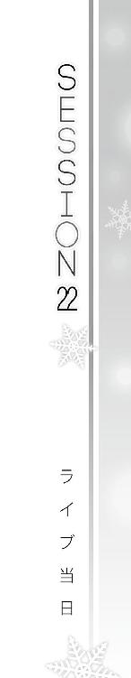

| ＷＨＩＴＥ ＡＬＢＵＭ２ 雪が紡ぐ旋律２ (GA文庫) | |
| 月島 雅也 | |
| (2013) | |

ＷＨＩＴＥ ＡＬＢＵＭ２
雪が紡ぐ旋律２
月島雅也
本書に掲載されているコンテンツの著作権等の知的財産権およびその他すべての権利は、ソフトバンク クリエイティブ株式会社または正当な権利を有する第三者に帰属します。
本書の内容を権利者の許諾なく複製・複写・翻案・放送・出版・データ配信（送信可能化を含む）などすることはできません。
カバーイラスト
なかむらたけし
口絵 本文イラスト
桂 憲一郎

Piece of：春希
『～～～～～～♪』
イントロから上がっていた歓声は、幕が上がったところで大歓声へと変わった。
まずは、小木曽雪菜の華やかなステージ衣装に。
そして、そんな彼女の圧倒的な歌唱力に。
誰だって思っていたはずだ、ミス峰城大付がボーカルやるなんて、要は話題作りのためだけだろう？ と。
雪菜に期待しているのは歌う姿であって、歌そのものには最初から期待していない客が多いはず。そりゃそうだ、だってこの大観衆は知らないのだから。雪菜がどれだけ歌が好きで、今までどれだけこの曲を歌い込んでいて、この三週間どれだけ練習を積み重ねてきたのか。
だからこそインパクトは抜群だった。
狙い通り、いやそれ以上の衝撃が、観客の中を電流のように駆け抜けていくのがわかる。そしてその全員が、たった一人の女のコへと視線を向けている。
それでも微塵も動揺する気配のない雪菜は、いつも以上に張りのある声で、無数の聴衆にその歌声を響かせ続けていた。
大丈夫だ、これなら心配ない。恐怖に囚われた雪菜はもういない。
『～～～～～～♪』
冬馬の方は最初から心配してなかったけど、予想通り完璧な指さばきでキーボードを操っていた。その視線を俺や雪菜へ向けられるほどの余裕を保ったまま。
目が合うと、『集中しろ』と言うように睨んでくる。
そう、雪菜や冬馬のことを気にしている場合じゃない。一番下手なのは俺のギターなんだから。......なんだけど、今のところほぼノーミスで演奏できていた。こんなにあれこれ考える余裕があるぐらいだ。
余裕っていうか、指には確かに余裕がないんだけど、頭にはあるというか。
まるで指が独りでに弦を弾いているような感覚。俺のくせに......ちょっと前まで、コードの押さえ方を頭で描いてからじゃないと音が出せなかったレベルの、こんな俺のくせに。
優秀な先生のおかげだな、と思い冬馬に小さく微笑むと、『何笑ってんだ』とムッとしたような視線が返ってくる。ま、そりゃそうか。
二番に入った頃には、ざわめきは徐々に収まり、聴衆は静かに歌に聴き入っていた。
元々『ＷＨＩＴＥ ＡＬＢＵＭ』はアップテンポの曲じゃないから、この方がありがたい。たぶん皆、雪菜の歌声が「想像以上に綺麗」だと思ってくれているはずだ。
このまま最後まで──と思わせておいて、しかしその前に、さらなる一手を打つ。
曲が最後のサビに差しかかったところで、俺は冬馬に目で合図した。
『本当にやるのか？』とでも言いたげな、呆れたようなその瞳。
当たり前だろ冬馬。お前のすごさを、俺たちだけの秘密にするのはもったいない。
見せつけてやろうぜ、教師にも生徒にも、音楽科の連中にも。
体育館という枠で区切られた小さな世界でも、世界は世界。
世界中にお前の音楽、かましてやれ！
いよいよサビが終わり、雪菜の歌が終わる。ここからはシンセがキーボードを引き継ぐ。
その直前、冬馬は見るからに深いため息をつき、俺に一瞥をくれて。
後ろの床に無造作に転がしてあった『それ』を拾い上げ、雪菜の横へと躍り出る。
同時に管楽器特有の柔らかい音色が高らかに響き渡った。
冬馬が奏でる、サックスの音色だ。
今の今まで雪菜の歌に意識を集中していた観客たちは、冴え渡るサックスの刺激に一瞬戸惑いを見せたものの、すぐに興奮を取り戻し、歓声を上げた。その奏者がミス峰城大付にも負けないぐらいの逸材だということにも、気付いたかもしれない。
長い黒髪をなびかせ、目で追えないほどの指の動きでサックスを吹く冬馬から、体育館の誰もが目を離せない。
ふと雪菜と目が合い、二人で小さく笑う。
どうだ。どうだよ皆。これが冬馬かずさなんだぜ、こんなすごい奴がウチのバンドにいるんだぜ？ 冬馬かずさって、すごいんだぞ！
そんな今にも叫び出したい気持ちを抑え、ひたすらギターを弾き続ける。
心から楽しそうな雪菜。
会場を沸かせ続ける冬馬。
流れているのは俺の大好きな『ＷＨＩＴＥ ＡＬＢＵＭ』。
こんな場所に立っていられるなんて。これが現実だなんて。
ふいに涙が零れそうになり、慌てて奥歯を嚙み必死に耐えた。今泣いたらせっかくのこの光景が何にも見えないし──涙を拭く手は、塞がっているのだから。
◇
一曲目が終わるのと同時に、冬馬はサックスから口を離し、ステージ上で聴衆からの拍手と喝を惜しみなく浴びていた。
十一月の終わりとはとても思えないほど、いつの間にか体育館中がむせ返るような熱気で溢れていた。
この後どうするかは、実は雪菜に委ねられている。
そのまま次の曲にいきたければ武也に合図。
でも、もし余裕があって、気持ちがノっていれば──
『......えっと、こんにちは皆さん。軽音楽同好会です！』
こうしてＭＣを挟む、という流れ。
『こんなにたくさんの人に来ていただいて、感謝してます。ホントにありがとうございます！』
わぁぁぁっと何度目かの歓声が上がる。声の振動で体育館が揺れたんじゃないかと思うほどだ。
『一曲目は、『ＷＨＩＴＥ ＡＬＢＵＭ』でした。ちょっと古いかもしれないですけど、たぶん知ってる人も多いんじゃないかな、って思います。実はわたしの一番大好きな曲なので、いきなりこれにしちゃいました』
何百人、下手すりゃ四桁近い数の群衆を前に、雪菜はにこにこと話しかけている。
これが昨日「怖い」と震えていた女のコと同一人物なのだろうか？
三人なら──仲間さえいれば、雪菜はこんなにも強くなれる。自分もその一員であることが、くすぐったいけど素直に嬉しかった。
『それじゃ、ここで簡単にメンバー紹介しますね。まずわたし、三年Ａ組、小木曽雪菜です。えーっと、こんなふうに人前で歌うの初めてなんですけど、一生懸命頑張りますので喜んでもらえたら嬉しいです』
あ、それから、とわざとらしく付け加えるように。
『アレの投票も今日までなので、よかったらお願いしますね』
「え？」
と思った俺を余所に、観客から笑いが巻き起こった。
まさかのミスコンネタ............柳原、今ごろすげー怒ってるだろうなあ。
余裕綽々だな、という冬馬の呟きも聞こえた。確かに、ネタ言うぐらいの余裕はあるってことだもんな。
『次は、三年Ｅ組、北原春希くん。いつも軽音のために一生懸命な、ギター担当です』
呼ばれて、ぎゃぁーん、と弦を一鳴らし。
『彼がいなかったら、このバントは存在しませんでした。いつでもわたしたちを支えてくれている、いなくてはならない存在です。もちろんわたしにとっても』
「ちょっ......！」
雪菜その言い方はどうだろう!?
案の定、悲鳴やらブーイングやら口笛やらが体育館に響き渡る。そりゃネタだってのは皆わかってるだろうけどさあ......うう。
『次の曲で、彼のソロパートがあるんです。とっても難しいので、失敗しても許してあげてくださいね』
どっと笑い声。なんでここにきてプレッシャーかけるんだよ......。
「これで失敗しても大丈夫だな。笑われるだけで済む」
よかったな北原、と呆れたように呟く冬馬。ひでぇよ俺の仲間。
『最後は、同じく三年Ｅ組、冬馬かずささん！』
やれやれという顔をしながらも、何かのクラシックの一小節を超高速で弾くというパフォーマンスを見せて、冬馬は再び視線を集める。まるで主役は一人じゃないとでも言うかのように──いや本人は全然そんな気ないんだろうけど。
『彼女のことは、驚いた人も多いんじゃないでしょうか？ 音楽に関しては誰にも負けない、わたしたちの先生です。さっきの演奏でわかってもらえたかと思うんですけど、とにかくわたしたちを引っ張ってくれる、すごい人なんですよ。彼女が担当するのは、キーボード、サックス、それから......』
それから？ と首を傾げた瞬間だった。
舞台袖に向かった冬馬が、そこにいた依緖から何かを受け取る。あれって......まさか。
『それから、ベース！』
ストラップをかけ、構えたのは確かにベースだった。
え、な、何で!?
戸惑う俺にニヤリと笑うと、冬馬はサッと機材と接続し、武也に合図した。
カウント代わりに刻むベースの響きに、シンセの音が重なりイントロが始まる──シンセにはキーボードの音色が打ち込まれていた。ってことは最初から織り込み済み......。
冬馬だけじゃなく、雪菜も、武也も、依緖でさえ俺を見てにやにや笑っている。
こいつら、俺に黙ってやがったな！ まったくいつの間に......。
『それじゃ、二曲目いきます！』
雪菜が高らかに声を上げる。
『聴いてください、『ＳＯＵＮＤ ＯＦ ＤＥＳＴＩＮＹ』！』
Piece of：かずさ
『春希くんをびっくりさせない？』
雪菜にそう持ちかけられたのは、昨日の昼過ぎ。ソファーで仮眠してくる、と彼がリビングへ行ったときだった。
『三曲目のこととか、わたしだけ驚かされっぱなしなんて、面白くないし』
楽しげにそう語る雪菜に乗り、かずさは『ＷＨＩＴＥ ＡＬＢＵＭ』でのサックスに続いて『ＳＯＵＮＤ ＯＦ ＤＥＳＴＩＮＹ』ではベースを弾くことに決めたのだ。その場で雪菜、依緖を経由して武也に打ち込みの直しを指示。
結局、眠れないと言って彼がすぐ戻ってきてしまったのでベースの練習はできなかったが、ぶっつけ本番でもかずさには問題なかった。
彼が着替えている隙に第二音楽室からこっそりベースを持ち出すことの方が、よっぽど面倒だったぐらいだ。
そして目論見通り、彼は突如現れたベースをぎょっとした顔で見た。メロディが始まり、慌ててギターを抱え直すその姿に、かずさは笑いを隠せなかった。
どうだ北原、驚いたか？
発案者は雪菜だが、かずさにも同じ思いはあった。いきなりサックスを吹けなどと言い出した彼に、なにかカウンターをぶつけてやりたかったから。
『～～～～～～♪』
意識を舞台に移すと、雪菜の歌声が高らかに響いていた。
『ＳＯＵＮＤ ＯＦ ＤＥＳＴＩＮＹ』はノリのいい曲だ、体育館中の誰もが楽しんでいるのが手に取るようにわかる。雪菜がこの調子なら、最後まで聴衆を魅了し続けられるだろう。
そちらはあまり心配していないが、問題は曲の最後を締めくくるパフォーマンス......つまり彼のギターソロだ。
いくら雪菜が観客にフォローを入れたからといって、ボロボロの演奏をすれば目も当てられなくなるに違いない。
サプライズの驚きからすっかり立ち直ったらしき彼は、ここまでのところ、ほぼ完璧に弾きこなしている。
しかしかずさは、曲が終盤に近付くにつれ、彼の指先を注視するようになっていた。
二番のサビが始まる。この曲はここで歌が終わり、残りはすべて一分近い後奏になっている。
──もう、始まってしまう。
ふと彼がかずさの視線に気付いたのか、『集中しろ！』とでも言わんばかりに舌を出して睨んでくる。確かに、完璧だったはずのかずさのベースには、普段ではあり得ないような綻びが少しずつ出てしまっていた。とはいえ自分のことなど気にしてはいられなかった。
そして雪菜の歌声にもまた、ほんの少し乱れが混じり始めていたが、理由はどう考えても明らかだ。
曲の勢いのおかげで、ベースとボーカルの不調に気付く観客はほとんどいないだろう。
だがこの三人はお互い気付いているはずだ。
だって、ここまでどれだけ同じ時間を過ごしてきたことか。どれだけお互いの音を耳にしてきたことか......。
『～～～～っ、～～......♪』
歌のパートが終わった。
かずさに続いて雪菜もまた、思わずといった感じで彼を振り返る。
二人に心配されるギターの弾き手は、お前らなあ、という顔を一瞬見せた後──
勢いよく、ピックを振り下ろした。
Piece of：雪菜
『～～～～っ、～～......♪』
もう気が気じゃなかった。
二番のサビの辺りから、自分の声が少し詰まっていたのは知っていた。でもどうしようもなかったのだ。
サビが終われば、彼のギターソロが始まってしまうのだから。
自分で企画しておきながら、こんなことならサプライズなんてしなければよかった、と雪菜は泣きそうな思いだった。
かずさのベースもどことなく不安定に聴こえるのは、決してキーボードより苦手だからという理由ではないだろう。
このまま永遠にサビが終わらなければいいのに、と半ば本気で思ったが、そんなことがあるはずもなく。皮肉にも自分の声で、時が来たことを知ってしまう。
心配になり彼の方を振り返ると、やはりかずさも同じように彼の手元を見つめていた。
彼自身は、お前らなあ、という顔を一瞬見せてから、ネックを握り直してすばやくピックを振り下ろした。
ぎゃぉーん、という最初の一音が響く。それに続いて現れる、複雑な指の動き。
「っ......」
彼が真剣な顔でピックを操り弦を搔きむしるのを、息を呑んで見守る。
曲を決めた際、『ＳＯＵＮＤ ＯＦ ＤＥＳＴＩＮＹ』にこのギターソロがあるとわかっても、雪菜は曲を撤回しなかった。むしろこれ幸いと、乗り気じゃない彼を言いくるめ、強引に決定した。
そうしたのは、彼の格好いいところをライブで披露して欲しかったからだ。見に来るであろうクラスメイトに、同級生に、全ての生徒たちに、彼はこんなにすごいんだと教えたかったからだ。
そんな自分勝手な理由を後悔しながら、しかしもはや祈る以外にどうしようもない。
もう聴衆の歓声など聞こえなかった。シンセの音さえ認識できているかわからない。
ただギターの音色だけを、必死な思いで心に刻んでいく。
半分が過ぎた。ここまでのところで雪菜にわかるミスはない。
ひいき目かもしれないとはいえ、格好よすぎる演奏だ。
不安と期待と嬉しさと申し訳なさとその他諸々、感情がごちゃごちゃになって、とにかく泣きそうな自分を抑えるのに必死だった。
ピックが躍り、弦が歌う。
お願い、お願い......っ。
場を支配していたその旋律はやがて、少しずつフェードアウトしていき──シンセの音が消えるのと同時に、彼の動きも止まった。
ふうっ、と息をついた彼が、にっと笑う。
「あっ......」
やった、やった......彼が、あのギターソロを弾きこなした！
本番の舞台で、それも、ノーミスで！
そこに至ってようやく雪菜は、怒号にも似た歓声の唸りが体育館中に響いていることに気付いた。
Piece of：春希
「ははっ......」
奇跡だ。それ以外にはあり得ない。
まさかのノーミスで『ＳＯＵＮＤ ＯＦ ＤＥＳＴＩＮＹ』のギターソロを弾き終えると、さっきからずっとこちらを見ていた白と黒のメンバーが明らかな安堵の表情を浮かべた。
気付いた客は少ないだろうけど、この二人、途中から集中力が見る間に落ちていってたのだ。
まったく、そんなに俺のソロが心配だったのかよ。
悪かったなヘタクソで──とちょっと思ったんだけど。
......でも二人とも本気で心配してくれてたことが、わかりすぎるほどわかったので、素直に感謝しておく。それに、自分でも奇跡だと思うしさ。
ありがとう神様、俺、二人の足を引っ張らずに済みました。
ふと気付くと、わぁぁぁっ、と地鳴りのような歓声が響いていた。別に俺のギターソロに対してだけじゃないのはわかってるけど、それでも気分は最高だった。
もし、何かが一つでも違っていたら。
武也に誘われたとき、軽音楽同好会に入っていなかったら。
その軽音を、柳原が解散させなかったら。
お隣さんがセッションをしてくれなかったら。
そのセッションに、雪菜が反応しなかったら。
なりふり構わず二人を軽音に勧誘していなかったら。
雪菜がいい奴じゃなかったら。
冬馬がいい奴じゃなかったら──
こんな気持ちを味わえないまま、卒業していたことだろう。
よかった、と心から思う。これで一生分の運を使い果たしたのだとしても、本当によかった。
俺の奇跡に舞台袖でガッツポーズをしていた武也が、ふと我に返ったように『急げよ』の合図を送ってきた。
そうだ、まだ燃え尽きてる場合じゃない。
最後の最後、とっておきのお楽しみが待ってるんだ。
三人で顔を見合わせ小さく頷く。
感極まって泣きそうだった雪菜も、そこで一旦大きく深呼吸し、気持ちを整えてから、笑顔で前を向いた。
『えっと。次が......最後の曲です』
えーっ、という予想通りのざわめきが起こる。それは予想よりもずっと、心から残念そうな響きに聞こえた。
皆、雪菜が見られなくなることだけでなく、この三人の──俺たちの演奏が終わることを残念がってくれている、なんて感じてしまうのは自惚れだろうか。
『実は次の曲は、わたしたちのオリジナルなんです。まだ誰にも聴いてもらってなくて......おまけに練習時間もあんまりなかったんですけど......』
ちら、と雪菜が俺と冬馬を見て微笑む。
『でも、自画自賛できるぐらいすごくいい曲になってますので、きっと皆さんにも気に入ってもらえると思いますっ』
頑張れー、といくつもの声が飛んできて、それにつられるように無数の応援の歓声が舞台を覆う。
それを聞きながら、そっと息をついた。
オリジナル曲。
どうしても作りたかった、俺の思い出。
あり得ない幸運により、本来の──本当の本当の──目的をとっくに超えて、今こうして日の目を見ようとしている。
ふと冬馬を見ると、向こうも俺も見ていた。
ギター、よくやったよ。
口の動きとジェスチャーだけで、そう言っていることがわかった。
冬馬がこんなふうに褒めてくれるなんて、初めてかもしれない。
どう返していいか迷っていると、次の瞬間にはもう、いつものキツい顔で『まだ終わってないぞ』と睨んでくる。
はいはい、わかってるよ。
やっぱ冬馬は冬馬だな、と苦笑しながらギターを構え直す。
『それじゃあ、わたしたちの曲、聴いてください』
雪菜がもう一度俺たちを見た。
確かにここに三人がいることを、胸に焼き付けるように。
『軽音楽同好会オリジナル曲で、タイトルは......』
冬馬がキーボードに手を置く。
雪菜が終わりの始まりを告げる。
これで、これで終わるんだ。
なら......精一杯、弾くだけだ。二十四時間の練習を、このときに全てぶつけて......！
『タイトルは......『────』です！』
そして、三人が作り上げた、三人のための時間が、動き出した。
Piece of：朋
............。
「ホントやばいじゃん......すごいじゃん、小木曽雪菜」
「だよね、正直こんな上手いとは思ってなかったよねー」
............。
「二曲とも渋いトコ突いてきたしさ、このオリジナルも......なんか、いいじゃん」
「こりゃ朋の出番はどっちみちなかったかもしれ......朋？」
............。
「朋？」
「............」
笑ってやろうと思っていた。
たとえ声を上げて場を乱さないまでも。
人の作戦パクって歌ってこんな程度なんだ、と嘲笑ってやろうと思っていた。
自分以上の目立ちたがり屋だと、せせら笑ってやろうと思っていた。
だけど。
「ねえ......朋？」
を握り締め。
「......黙って......」
唇をぎゅっと結び。
「ちょっと朋......あんた......」
自分が今感じている感情が何なのか、わからなかった。
だから、ただじっと、舞台の上を見据えていた。
ただ、じっと......。
Piece of：春希
「なあ」
「......何？」
「終わった、な」
「......北原。あんたそれさっきから何回言ってると思う？」
何回かは知らないけど、何回も言っていることは知っていた。
「仕方ないだろ？ ホントに、終わったんだからさ」
「最初から二十分で終わる予定だったろ」
「ま、そーなんだけどさ......」
現在、午後三時四十五分。
体育館が揺れているんじゃないかと思えるほどの大歓声を残し、俺たち軽音楽同好会の演奏は終わった。幕が下り、『やり切った』感に全身を支配されながら、余韻の中でいつの間にか後片付けを終え。
そして今、俺と冬馬は第二音楽室にいた。
「次のバンドの連中、きっとやりにくかっただろうな......悪いことしちゃったな」
「へえ、北原にしちゃずいぶん強気だね」
「だって、最高だったろ？ 俺たちの演奏、完璧だったよな？」
指に残る余韻は、今もまだ甘く痺れてる。
「自惚れるな。ただ他のバンドよりメンバーと演奏の質が違っただけだ」
「質が、ねえ」
そんなことを言うあたり、どうやら冬馬の方も自惚れているらしい。
「だから客が勝手に盛り上がった、ってだけ」
「ついでに俺たちも盛り上がったよな？」
「............」
否定せず、黙って肩をすくめる冬馬。
「改めて、ありがとな冬馬」
その横顔に、そっと礼を告げた。
「俺、ちゃんとソロ弾けたよ。お前のおかげで」
「あたしは別に......」
「お前が、俺を格好いい奴にしてやる、って言ってくれた。弾き終えた瞬間、マジで世界が俺のものみたいな錯覚に陥ったよ。本当に、ありがとう」
「......ふん」
ぷい、と冬馬が視線を逸らす。鬱陶しそうに──でも気のせいか、どこか照れ隠しみたいに見えた。
「そもそも『ＳＯＵＮＤ ＯＦ ＤＥＳＴＩＮＹ』を強行したのはあたしじゃなくて小木曽だろ......あれ、そういえば小木曽は？」
「片付け終えて、そのまま依緖と一緒にクラスへ戻ったよ。昨日の罪滅ぼしで、今から接客だってさ──あの格好のままで」
「大正浪漫じゃなかったのか？」
「ま、今はあっちの方がウケがいいだろうからさ」
あの衣装の雪菜がコーヒー運んできてくれるのだ。今ごろＡ組の前には長蛇の列だろうな。
「あいつもほとんど寝てないくせに、よくやる......」
「雪菜はそーゆーコなんだよ」
「他人事みたいに言える立場か？ 昨日お前が攫ったせいだろう」
「軽音のためだったんだから仕方ない──いやまあ、今は申し訳なかったって思ってるけど」
「......なら行ってきてやれよ。喜ぶぞ？」
「いいんだよ、もう特等席で散々見たから」
並ぶ体力もあんまりないし、と笑うと、冬馬はやれやれと首を振る。
「北原ごときが『もう見飽きた』とは、傲慢だな」
「見飽きたなんて言ってないぞ。それに......今は今で、別の特等席にいるし」
「............」
ちょっと言い方がアレだったかな。でも冬馬は普段通りの無表情。
「なんでお前も着替えないんだよ？ 寒くないのか、それ」
目の前の冬馬は──まだ黒いステージ衣装のままで、所在なさげに机へ寄りかかっていた。適当な椅子に座って、そんな彼女を見ている俺。
「寒いに決まってるだろ。もう十一月も終わりだ」
「なら着替えろよ。こんな近くに男の目があるんだぞ？」
冗談めかして、そう言う。俺もスーツのままだけど、もう着替える気力も体力もなかった。
「その男がいるせいで着替えられないとは思わないのか？」
「あ、悪い。出てようか」
「......いい。エアコンあるから、部屋なんかそのうち暖まる」
そりゃそうかもしれないけど。さてはこいつ、文句言ってたくせにこの衣装気に入ったな。
「ほんっと、いろんな意味で成功したな、ライブ」
誰が何と言おうと、ステージの上の俺たちは最高だった。絶対に、最高だった。
「三曲目もホントよかったよな。冬馬の曲、雪菜の歌声、俺の歌詞......はともかくさ」
「確かに歌詞だけダサかったな」悪かったよ。「......でも悪くはなかった」
「え？」
「............」
訊き返すのは、やめておいた。せっかくの褒め言葉を、撤回して欲しくなかったから。
「あ、そうだ」
ふとピアノに目を遣り、思い出した。
「なあ冬馬、覚えてるか？ ライブが成功したら──クラシック、聴かせてくれるって約束」
「......そうだったかな」
呟く冬馬が、しかし直前ぴくっと反応したのを俺は見逃さなかった。
よかった、覚えててくれたみたいだ。
「そーだったよ。忘れないでくれよな」
「別にお前みたいな素人が聴いたって面白くないぞ」
「そんなことないさ。冬馬が弾くなら素人だって楽しめる。お前のピアノの腕、俺が一番信用してるから」
「......ばーか、北原に信用されたって嬉しくない」
「はは、ひどいな。ま、疲れてるならまた今度でもいいけど」
「あんなライブぐらいで誰が疲れるか。軟弱なお前と一緒にするな」
「じゃあ......頼んでいいか？」
そう言うと、しばらくじっとしていた冬馬はやがて、黙ってピアノの前に座ってくれた。
ふうっとため息をつくと、その細い指先が踊り始める。
最初はゆっくりと、次第に速度を増していく指先は、まるでその一本一本にバネが仕込まれているかのように、モノクロの鍵盤の上を跳ね回る。だが紡がれる旋律は決して激しくはない。割れない泡が幾重にも重なって膨らむような、深く繊細な響きが耳を支配していく。
何の曲かは知らない。
でも、冬馬の曲だ。
「ふう......」
聴いているうちに、妙に心が落ち着いていくのがわかった。
この一年、クラシックじゃないにしろずっと聴いてきたピアノだ。
そのピアノが今、俺の目の前で、俺のためだけに曲を奏でている。
「なあ冬馬。ちょっとだけ、目閉じてもいいかな......寝ないから」
「人にリクエストしておいて寝るなんて、失礼な客だな」
「だから寝ないって......」
曲調に誘われ、そっと目を閉じる。暗闇の中、まるでピアノを介して冬馬の鼓動が伝わってくるようだった。
盤石なようにも儚いようにも聴こえる不思議な旋律は、優しく俺を包み込み、完全燃焼して疲れ切った身体をゆりかごのように受け止めてくれる。
「......今日さあ」しばらくして、言葉が勝手に零れていた。「ホントに楽しかったよ、俺」
勝手にしゃべり出したのは、俺ではなく、ゆりかごの中の無防備な俺。
「こんなに楽しいことあるんだなって、心の底から思えた。ここ三週間ぐらいも、ずっと楽しくて仕方なかった。だから......」
「............」
「これで終わっちゃうの、なんか嫌だな」
できるだけ何でもないことのように、言葉が続けられていく。
「大変なことも色々あったけどさ。だからこそ、もっと......この先もずっと一緒にいたいな、俺たち」
冬馬の奏でる旋律に乗せて、そっと。
「卒業しても、ずっと......三人でさ」
自然な感じで、そう言った。自分の本心を、冬馬に。
「......お前と小木曽は峰城大だろ」
しばらくピアノの音だけを聴かせていた冬馬が、静かに呟く。
「冬馬は......進路どうするんだ？ やっぱ音大？ ウチ、高校には音楽科があるくせに、大学には芸術系の学部ないからなあ」
「その前に卒業できるかも不確定なんでね、こっちは」
「それは大丈夫。俺と雪菜が勉強教えるって約束しただろ？」
「............」
覚えてるのか、いないのか。返事はないけど、もう目を開ける気力もなかった。
「なあ......冬馬はさ、三人でいて楽しくなかったか？ 俺は今言った通り最高だった。だから、これからも一緒にいたいと思うし、雪菜だって、きっとそう思ってるはずだ」
「小木曽は......」やや間があって。「あいつは......ホントに、そう思ってるかな」
「思ってるさ。仲間ってものを、すごく大切に考えてるから。だからもし冬馬も同じように思ってくれてたら......俺たち三人、まだまだ終わらずにいられる」
それは、結局はこの俺が言った台詞、だったのかもしれない。
でももうよくわからない。意識が少しずつまどろみ始めていたせいで。
「終わらせたくないんだよ、俺。こんなすごい二人と仲間になれることなんて、この先二度とないだろうからさ......」
「っ......」
穏やかな曲調が、さらにゆったりとしたものになる。
優しい囁きのようで、でもどこか悲しい響きに聴こえるのはなぜだろう。
「誰もが認める超高嶺の花が、庶民的な笑顔で仲間になってくれて......」
暗闇の中、息をつく。
「誰も知らないけど俺だけは知ってた超いい奴が、頼りになる先生になってくれてさ......そんな幸運......手放したら、もう二度と取り戻せない......」
「っ......うっ......」
「だから......一緒にいてくれよ......冬......馬......」
視界が──真っ暗闇の視界が、色のないまま静かに歪む。
「あたし......あたしは......」
耳に......『お隣さん』の声が聞こえる。
半年前とは......違う声、が......。
「あたしは......ねえ、北原」
「............」
「なあ......」
「............」
「北原、ってば」
............。
「きたはらぁ......寝るなよ......」
........................。
「寝ないって......言ったじゃないかよぉ......」
....................................。
「寒いよ......北原......」
Piece of：雪菜
「ふうっ......」
午後五時半すぎ。大正浪漫かふぇ閉店後の、人もまばらな三年Ａ組。
わずかに残った売り物のホットコーヒーをすすり、雪菜は息をついた。母親が持ってきてくれたコートを、ステージ衣装の上から羽織った姿で。
雪菜が接客に参加してからの約一時間半、あまりの行列に「時間制限：一人五分まで」という鬼のようなルールを客に強いたのにもかかわらず、三年Ａ組は有り体に言って大盛況だった。
「ありがとね雪菜。お疲れのところ、頑張ってもらっちゃて」
隣に立つ依緖が、同じくコーヒーの紙コップを手にしてねぎらいの言葉をかけてくる。
「ううん、いいの。昨日サボったのはわたしなんだし、埋め合わせしないとね。......まさかあんなにお客さん来るとは思ってなかったけど」
「委員長、売り上げが一桁変わったって泣いて喜んでたよ。まあ、おかげで明日の営業どうするか悩んでたけど」
そう、あまりの盛況ぶりに商品が足りなくなってしまい、急遽全ての在庫をこの一時間半に投入したのだった。二人が今飲んでいるものは、本来なら明日使うはずだった在庫の、最後の最後。
「あはは......だけど、今日も依緖が女給さんの格好してたら、このコーヒーだって残ってなかったかもね？」
「あたしはもう勘弁。にしてもホント尋常じゃなくなってきたね、雪菜の人気ぶり。今日のライブがまた効いたよね～」
「好きなことやっただけ......なんだけどね。わたしが本当にやりたかったことを」
歌うこと、そして仲間と一緒に頑張ること──その二つだけを。
「だけど本当に楽しかったなあ。大成功だったし」
楽しすぎた。今までの人生で一番だと、即答できるほどに。
リハーサル時の恐怖が何だったのかと思えるほど、自分の声が聴衆を魅了していく様を楽しんでいた。彼のギターソロのときだけ、ついつい気持ちが引っ張られてしまったけれど、それ以外はほぼ完璧にこなせたと言っていい。
特に最高だったのは三曲目だ──観客など気にせず、三人が三人のために旋律を作った。なのに、体育館にいた全ての人が曲を受け入れていることが、歌いながら手に取るようにわかった。
あんな経験、初めてだった。
「最初に雪菜が軽音でボーカルやるって聞いたときはさ、まさかって思ったけどね」
「自分でも思ってなかったよ、まさか学園祭でライブに参加するなんて」
一ヶ月前の自分に言っても、おそらく信じないだろう。バイト先で見かけたあの彼と一緒に、バンドを組むだなんて。
「それもこれも、春希くんと冬馬さんのおかげ。二人に会えてホントよかった」
「これならもっと早く、あたしが雪菜と春希を引き合わせてればよかったかな。でも紹介する理由もなかったからねー。共通点もなさそうだったし、二人とも『誰か紹介して！』っていうタイプじゃ全然ないし」
どっちも恋愛とか興味なさそうだったからなあ、という依緖の呟きに、つい反応してしまう。
「......春希くんってさ、今までに付き合った人とか──いないのかな？」
「あいつが？ いないいない、なんで武也と友達やってるのかわかんないぐらいの奴だもん」
「そっか。そっかあ......」
わたしと、同じだ。
思わず小さく微笑んでいた。
「............」
「あ、じゃあわたし、そろそろ行くね」
紙コップを捨て、雪菜はうーんと腕を伸ばした。ふと見た窓の外は、もう真っ暗だ。
「......第二音楽室？」
「うん。春希くん、待っててくれるって。冬馬さんもいてくれるかもしれないし......あ、しまったなあ、二人にもコーヒー持ってってあげればよかった」
そう言いながら、かずさのあの甘党ぶりを思い出し、苦笑する。
「依緖も今日は本当にありがとう。衣装合わせとか手伝ってくれて──」
「......ねえ雪菜」
ふいに、依緖が表情を変えた。
「何？」
「ええとさ......その、こういうの、あたしのキャラじゃないんだけどさ」
何やら言いにくそうな様子に、雪菜は首を傾げる。
「あの、あれだ、あたしのことイタい奴だと思って聞いてよ？ ......もし、もしなんだけど」
「依緖？」
「もしあいつのこと、本気だったら......」
──急いだ方が、いいかも。
「っ......！」
思わず息を呑んだ。表情が固くなっていないことを必死に祈る。
「あ、待って待って、あたしイタい奴だから、単なる妄想と妄言だから！」
依緖が懸命に気を遣おうとしているのが、ありありとわかる。
「妄言、だからね？ ......ええと、あいつが、あいつの方が興味なくてもさ、あいつを──」
「......大丈夫」
依緒を遮り、雪菜は言った。
「ありがと依緖。でもちゃんと......わかってるから」
「あ......そ、そっか。ごめんね雪菜、余計なこと言って。ま、まあ、ホントにただの妄言なんだけど」
「......ちゃんとわかってるけど、いいんだ」
「えっ？ いいって......ど、どういうこと？」
「今日のライブやって、思ったんだ。こんなに楽しい時間を作れる三人の、今の関係......壊したく、ないって」
もし、目の前に見えている歯車を回してしまえば。
三人は、三人でいられなくなる。
少なくとも今の三人では、いられなくなってしまう。
「二人とも、わたしの大事な仲間なんだ。だからもう少しだけ......今の関係で、いたいの。あの写真のままで」
でも、と依緖が目で訴える。
「わたし、欲張りなんだ。二人のこと......本当に、大好きなの。だから変わりたくない、変わって欲しくない」
「雪菜......」
やっと、やっと手に入れた本当の仲間を、失いたくないから。
「......妄言、だけどね」
困ったような顔の依緖に、雪菜はわざと明るく笑って見せた。
「妄言だよ」
Piece of：かずさ
窓の外は、いつの間にか暗闇に覆われていた。
同様に室内も真っ暗だ──かずさは日のあるうちからずっと、ピアノの前を離れていなかったから。
彼のために、ずっと弾き続けていたのだ。
約束したクラシックを、ずっとずっと、聴かせ続けていた。
彼が眠ってしまっても、ずっと。
「............」
月明かりの下、そっと彼を盗み見る。
椅子に背を預けたまま、首を前にかくんと倒し、眠り続けるその姿を。
............。
その様子を見たかずさは、子守歌代わりのピアノを、闇に溶かしていくようにそっとフェードアウトさせた。
一時間以上ぶりに立ち上がると、静かに彼の前へと歩いていく。
「......北原」
そして、寝息を立てる彼に向かって話しかけた。
「おい北原」
「............」
「なんで寝るんだよ。あたしの演奏はそんなに退屈か？」
「ん......んむぅ」
「人に弾かせておきながら自分は寝るなんて、ひどい奴だよ、お前は」
聞いてるのか？ と呟いたかずさの声に、「ふが......」とマヌケな答えが返ってくる。
「──ったく」
覗き込んだ寝顔は、いかにも能天気そうだった。
考えてみれば、かずさが寝込んで以来、看病と練習でほとんど寝ていない彼。昨日も仮眠が取れなかったと言っていたし、おそらく気力でごまかし続けてきたのだろう。
この三週間あまりの間、ずっとそんな調子だったはずだ。
ライブが終わって、そのツケが一気に襲いかかってきたに違いなかった。それは裏を返せば、限界を超えた努力の証拠だとも言える。
「馬鹿な奴だよ......お前はさ」
むに、と頰を突いてみる。
「ん、んう......？」
「まったく、幸せそうに寝やがって」
「んー......」
「ライブが成功したのが、そんなに嬉しかったのか？」
「んむ......？」
「あたしか？ そうだな、あたしはたぶん......お前より嬉しかったよ」
サックスで聴衆を沸かせたときの、彼の誇らしげな顔。
ベースを取り出して弾き始めたときの、彼のぽかんとした顔。
そして......彼がギターソロを終えた後、どうだと笑って見せた、その笑顔。
どれもが心の奥に焼き付いている──なぜならどの表情も、かずさによってもたらされた顔なのだから。
「はーあ......おい北原」
額を、指で軽く突く。
「ホントウザいんだよ、お前って」
「んぅ......」
「初めて会ったときから、ウザくてしつこい奴だったよな。クラス委員だからって、あたしみたいな人間にもクソ真面目に話しかけてきやがってさ」
「んぁ......ん......」
「やれ提出物がどうだの、連絡事項がどうだの......うるさくちょっかいかけやがって」
どれだけ文句を言っても、無視してやっても、何度も何度も。
「しまいには、こんなお祭り騒ぎにまであたしを引っ張り出して」
母親に捨てられて以来、ずっと独りぼっちだった。
自分でもずっと一人でいようとしたかずさの世界に、ぐいぐい食い込んできて。
「一人で......よかったはずなのに」
指先で、彼の頰を撫でる。
起きない。
「全部......お前のせいだ」
前髪に息を吹きかける。
起きない。
「お前、の......」
こつん、と額を合わせ。
かずさは──
「んっ......」
そっと。
そっと、二つの唇が、重なっていた。
ぎこちなく、たどたどしく、そして懸命に、かずさは震える唇を静かに重ねていた。
意識のない彼の唇へ......。
「ん、んっ......」
息ができない。
唇を動かすこともできない。
その柔らかさと体温を享受することしか、できない。
「......っ！」
呼吸が限界になり、同時にかずさは我に返ったようにバッと顔を引く。
「ぷはっ......はっ、はあっ......」
「んむぅ......んうぅ」
そしてそこには──未だ眠り続ける、姫のキスでも目覚めない王子が一人。
「あ、あ......」
片手で、自分の唇を押さえる。
「やっちゃっ......た」
頭の中で、あらゆる感情が錯綜し始める。
「ごっ、ごめん北原......こんな、つもりじゃ」
聞こえるはずもない彼に、必死に語る。
「だって......違う、お前がそんな無防備だからっ......あ、あっ」
どうしよう。どうしよう。
「最低だ、あたし......卑怯者だ」
「んー......んんぅ......？」
「っ......！」
瞬間、かずさは駆け出した。
着替えも持たずにドアへ駆け寄って手をかけると、そのまま第二音楽室を飛び出し一直線に階段へと向かう。
どうしよう。
どうしよう。
どうしよう。
思考回路が混線する中、今さらな不安が湧き上がってくる。
彼は......本当に寝ていた？
途中から気付いたりしていなかった？
「っ......」
かずさは、逃げ出した。
Piece of：雪菜
リノリウムの床に。
「そんなのって......ないよ......」
買ったばかりの缶コーヒーとミルクティーが落ちた。
Piece of：春希
「ん......あれ？」
ふと気付くと、室内は真っ暗だった。
一瞬自分がどこにいるのかわからなかった。
居並ぶ机の中、月明かりに照らされたピアノが浮かび上がっているのを見て、ここが第二音楽室だとわかる。
......冬馬は？
クラシックを聴かせてもらっていたことをようやく思い出す。けれど、ピアノの前にはもう奏者の姿はなかった。
帰っちゃったか。
しまったなあ、せっかく冬馬が演奏してくれてたのに、寝ちまった。
寝る前......冬馬と何話してたっけ。
まだ三人で一緒にいたい、ってこと、ちゃんと伝えられたはずだよな。
けどあいつの返事は覚えてない──眠ってて聞き逃した？
あーあ、何やってんだ俺、とため息をつこうとした、そのとき。
「おはよ」
「わっ!?」
突然かけられた声に驚くと、「きゃっ......」と小さな叫び。
「うう、ひどいなー、そんなふうに叫ぶなんて。わたし幽霊じゃないよ？」
「えっ......雪菜？」
「うん。おはよ、春希くん」
漆黒のピアニストの代わりに居たのは、純白のボーカリスト。
こちらもステージ衣装に身を包んだままの格好で、俺の目の前に立っていた。
「よっぽど疲れてたんだね、ぐっすりだったよ」雪菜が優しく微笑む。「でも当たり前かあ、今日までずっと......頑張ってきたんだもんね。お疲れ様」
「あ、うん、ありがと......ええと雪菜、クラスの仕事は......？」
「もちろん終わったから来たんだよ。もう六時過ぎだし」
「六時っ？」いつの間に......。「そりゃ確かにぐっすりだったんだな、俺」
「だったんだよ。わたしが来てから、もう二十分ぐらい経ってるし」
「へっ？ そ、それはゴメン......ていうか起こしてくれれば」
「待たせちゃったのはわたしだから、起こしちゃ悪いかなって」
それに......と雪菜が呟く。
「ずっと春希くんの寝顔、見ていられたから、退屈しなかったよ」
「ね、寝顔って......雪菜ぁ、そういう冗談は──」
「............」
「冗談......だよな？」
「さあ、どうでしょう」
ふふっ、と否定しないまま微笑む雪菜。
「からかわないでくれよ......」
妙に恥ずかしくなって、それをごまかすように椅子から立ち上がる。
「いっ、てて......」
わざとらしく回した肩が、悲鳴を上げた。
「さすがの春希くんも疲労困憊、って感じ？」
「ずっと酷使しっぱなしだったから、ちょっと。だけど雪菜だって相当疲れ......ん？」
そのとき、回した肩から何かがパサッと落ちた。
「......？」拾い上げると。「コート？」
「あ、ごめん、わたしの。お母さんが持ってきてくれたんだ。この部屋、暖房効いてるから大丈夫だとは思ったんだけど」
勝手にごめんね、と小さく笑う雪菜。寝てる俺に、わざわざ自分のコート、かけてくれたのか。
「こっちこそごめんな、雪菜の方が寒そうなのに......寝ちゃっててホントにゴメン」
「ううん、わたしがしたくてしたんだから、謝らなくていいよ？」
微笑む雪菜は、月光の下、まるで幻影のように儚く、淡く輝いていて。
「......ありがとな」
手渡したコートを、どういたしまして、と受け取る雪菜。
その声は、今日だけで一体何人の男を虜にしたことだろう。
「ライブ......楽しかったね」
コートを手に持ったまま、雪菜がぽつりと呟く。
「ホントに、ホントに、最高のステージだったよね？」
「ああ。俺もそう思う」
「あんなに大勢の人の前で、こんなわたしが歌って、あんなに盛り上がって......ちょっと前までのわたしじゃ、考えられなかった」
「俺だってそうだよ。雪菜と冬馬がいてくれたおかげで、あんなゾクゾクする場所に立つことができた」
俺一人じゃ、決してあり得なかった。
「ううん、春希くんがいたからこそ、だよ。春希くんが、わたしを......あの舞台まで連れてってくれた。わたしのたった一つの趣味を褒めてくれて、信じてくれて、あんな大観衆の前で披露する機会までくれた」
わたしにその勇気をくれたんだよ、と雪菜が微笑む。
「俺は......ただ、突っ走っただけだよ。自分のワガママに、雪菜を巻き込んだんだ」
そんな身勝手な奴を信じて、一緒に走ってくれたのが雪菜だった。
その雪菜が、さらに音楽室のお隣さんを引き込む勇気をくれて──
俺の拙い夢想を、高らかに歌い上げてくれた。
「それが嬉しかったの。仲間にしてくれて、嬉しかった......」
暗闇の中、雪菜が天井を見上げる。
「ね、春希くん。これからも......ずっと一緒に、いてね？」
それは、ともすれば勘違いしてしまいそうな一言だったけど。
「......ああ。約束したもんな」
わかってる。これは、あの日の約束。
絶対に雪菜から離れていかないという、あの誓い。
仲間をもう失わないための、雪菜の命綱。
だけど──
「ずっと、ずっとだよ？ 本当に......ずっとだよ？」
「......雪菜？」
安心を得るための言葉なのに、雪菜の顔はなぜか不安げに曇っていく。
「卒業して......峰城大の一年生になっても......二年生になって、三年生になっても、大学を卒業して社会人になってもっ......」
その言葉にも、焦りのような色が滲む。
「それからっ......それから、ええと」
「ちょ、ちょっと落ち着いて雪菜」
どうしたんだろう、急に何か慌てだしてる。
「あの、ほら、電気。点けるから......」
よくわからないまま、とりあえず壁のスイッチに向かって歩き出し──
「行かないで！」
突然。
「お願い......行かないで......」
「っ!?」
背中に、縋り付かれた。
誰に？
......雪菜、に？
「行っちゃ、やだよ......わたしを、置いてかないでよぉ......」
ぎゅっと握られるスーツの背中。
パサ、とコートが床に落ちる音。
「せつ、な......？」
「っ......」
「い、行かないよ、どこにも行かないから」
まるで子供みたいな雪菜に混乱する。
昨日の、電車の中での雪菜に似てなくもないけど......でも何かが違う。
それに、置いていくって......どこに？
「わかったよ、電気、点けないから。だからとりあえず......」
離れて、なんて直接言えるわけがない。縋る人に、そんなこと。
でも、そうしてもらわないと、あの電車内とは明るさも人目もまったく違うこの状況じゃ、いろいろと......。
「............」
ややあって、静かに背中が解放された。
どうしようか迷ったけれど、ゆっくりと回転して雪菜に向き直る。
もちろん、自然な感じで後ろに距離を取るのも忘れない。
「雪菜？」
「......ごめんね」
何に対する謝罪なのかわからないけど、雪菜はそう呟く。
「いや、全然いいけどさ。どうかしたのか？ 何かあった？」
「......っ」
その瞳が、そっと閉じられる。
やっぱりどこか変だ。ひょっとしたら大正浪漫かふぇで何かあったのかもしれない。
「なあ雪菜......覚えてるか？」
だから俺は、あの日の約束をもう一度告げる。
「あの日、雪菜の家の前で約束したときにさ。困ったことがあったら何でも言ってくれ、って言ったよな、俺」
閉じた瞳が、はっと開かれ、俺を向く。
「だからもし......もし俺に手伝えることがあるなら、言ってくれよ？ できること......何でも、するから」
そう言って、俺を見るその瞳に笑いかけてみせた。
あのときと、同じ台詞。初めて雪菜を雪菜と呼んだ、あのときと。
「春希くん......」雪菜は、じっと俺を見たまま......そして、やがて。「あのね。お願いが......あるの」
「うん、いいよ。何？」
「............」
雪菜はなぜか再び目を閉じると、話し出した。
「わたしね。子供の頃からずっと考えてたんだ。いつ、どんなふうにするのかな、って」
「......？」
何の話なのかわからず、とにかく聞いていたのだけれど──
「それでね。いくつか理想の場面、思い描いてたの。笑っちゃうようなものばっかりだから、言えないけど......」
しかし雪菜の言葉はますますわからなくなっていく。
「だけど、その全部がね......こんなはずじゃ、なかった。突然だったり、予定調和だったり、色々だったけど、でもわたしはいつも待つ側だった。あくまでも、相手の方から来てくれて......わたしはドキドキしながら、そっとそれを受け入れるの」
「......えっと。ごめん雪菜、何の──」
「だから......」
目を開いた雪菜が、大きく一歩、俺に歩み寄った。
「え？」
驚く暇もなく。
「だから、こんなふうに......」
さっきは背中を摑んでいた両手が、きゅっと俺の胸を摑んでいた。
「せ......つな？」
「こんな、ふうに......」
その顔も、俺の胸に埋められる。
「っ......！」
昨日と同じ事態なのに、昨日とはまるで異なる感触。
「自分の方から迫っちゃうなんて、完全に想定外、だったんだけどなあ......」
俺の胸から聞こえる、くぐもった台詞。
「春希、くん......」
俺を摑む手の感触。額に続いて押し付けられる、頰と耳の柔らかさ。
耳をくすぐる囁き声。
甘い、髪の香り。
「っ......あ......」
そのどれもが五感を摑むように支配し、俺を痺れさせる。
聞かれてるであろう心臓の鼓動が、理性のリズムを失っていく。
「こんなこと......したことも、しようとも思っても、なかったんだよ......ホントだよ......？」
「せっ......つ、な......」
雪菜が。
ゆっくり、顔を上げる。
俺の目の前に、頰を赤らめた少女がいた。
「ね、春希くん」
その瞳が、真っ直ぐに俺を見つめる。
熱い吐息が俺を濡らす。
「だから......だからね。わたしのお願いは──」
「......っ」
わたしのこと嫌いだったら、よけて......？
雪菜の瞳が、また閉じられる。
だけどそれは。
「雪菜......」
それは、つまり。
「いい......のか？」
つまり。
「俺、なんか......で？」
つまり俺たちが、今のままじゃいられなくなることを、意味している。
「本当......に......？」
「............」
終わる、のか？
ずっと今のままじゃ、ダメなのか？
俺たちは、三人一緒じゃ、いられないのか？
道は......ないのか......？
「......俺は......」
俺しか、いない。
決断は今、俺にしかできない。
月と暗闇と──物言わぬピアノには、縋れない。
俺が決めなくてはならない。
何を断ち切るのか、断ち切らねばならないのは何なのか、俺だけの意志で──
「俺は──」
だから、俺は......。
この日が。
その日だった。
十一月も終わりかけのとある土曜日。
峰城大付属高校学園祭の、二日目。
軽音楽同好会の、晴れ舞台だった日。
俺たち三人が、最高に楽しくて、最高に嬉しかった日。
三人で、最高の時間を過ごした日。
そして。
俺たち三人が、本当に三人でいられた、最後の日。
Piece of：かずさ
小さな頃から、冬馬かずさの隣にはいつもピアノが在った。
自分と世界を繫いでくれる、大切な存在として。
かずさのたった一人の家族、冬馬曜子は、かずさが産まれたときからオモチャのピアノを弾いて聴かせ、かずさ自身にも弾かせ、かずさが三歳になる頃にはもう本格的にピアノを始めさせた。
そんなかずさは文字より先に楽譜の読み方を覚え、五歳ですでにコンクールに出場。
以来、常に傍らにはピアノがあった。それはかずさにとってごく自然で、かずさはあらゆるものとピアノを介して繫がっているようなものだった。母親とも、世界とも。そして、自分自身とも。
それが当たり前すぎたので、かずさは自分がピアノを好きなのかどうか、ずっとわからないまま生きていた。
でもそれで構わなかった。少なくとも──母親のことは、好きだったから。
学校行事に来てくれることはなかったし、家事はすべて家政婦に任せっきり。コンサートでしょっちゅう家を空け、何日も何週間もかかるそれがときには男との旅行であることも知っていたけれど、それでもかずさは母親が好きだった。
家に居るときは家族で食卓を囲み、かずさの話を聞いてくれるから。かずさのコンクールはできるだけ見に来てくれて、優勝すれば喜んでくれたし褒めてくれたから。
そして何より......どこへ行っても、またかずさのいる家へ帰ってきてくれるから。
だからかずさは、愛されていると、必要とされていると、自分は独りぼっちじゃないと、信じることができた。
その母親と繫がるためにピアノが必要なら、好き嫌いはそう問題ではなかった。
しかしある日かずさはその母親から、全く唐突に別れを告げられた。
『今のあなたを連れていくことに、意味はないの』
そんな台詞を残して、冬馬曜子は自分だけさっさとヨーロッパへ移住してしまった。
母親のその言葉を聞いたとき、かずさは問いただすことも泣きわめくことも何もしなかった。ただ、それまで信じていたものが足元から崩れていく音だけは、はっきりと聞こえた。
ピアノを通して見ていた世界。その最たるものだった母親に否定されたという現実は、中学卒業したてのかずさにとって、世界中のありとあらゆる存在から否定されたも同義だった。
そのときから何もかもが敵に見えた。
この世界は自分を裏切るのだという確固たる思いだけが、皮肉にもかずさにとって唯一信じられる事柄になった。目に映るすべてのものが憎く感じられた。
何もかもが嫌になり、とにかく他人に嫌気が差した。一人でいたかった。
と同時に、ピアノと共に生きてきた自分の人生が虚しく思えて仕方なかった。
だからかずさは、ピアノと決別しようと思った。過去の自分を捨てたかったから。
そんな思いを抱いていたので、高校の音楽科などというところに進学したのは──他にどうすればいいのかなんて、わからなかったけれど──気分的に最悪だった。そこにいた人物たちは、教師も生徒も一様に『冬馬曜子の娘』というフィルターを通してかずさのことを見た。
卑屈でもって明らかにかずさを特別扱いする教師たち。
それを面白く思っていないであろうクラスメイトたち。
ただでさえ他人が鬱陶しくて仕方ないというのに、彼らは母親の存在をかずさに思い出させるのだ、繰り返し何度も。
そのたびにストレスを感じ、やがてそれは怒りに変わった。かずさはその怒りにまかせ、彼らを疎んじ威嚇し続けた。誰も近付いてこないように。
そうした目論見は成功し、やがてかずさに関わろうとする者はいなくなったが、そんなクラスにいて愉快に過ごせるはずもない。遅刻やサボりが増え、次第に学校へ行くのも億劫になり、二年生では年の半分近くを欠席した。
だが、その時間で何をしていたのかというと......結局はピアノだった。
もちろん腕を上げるための練習ではなく、気が向いたときに好きな曲を好きなだけ弾く、ただの暇潰し。けれどやはりそれは、ピアノだった。
ピアノのせいで打ちひしがれた自分が、溜まるストレスをピアノで発散するという矛盾。
なぜならかずさは、どうすればいいのか他に知らなかったのだ。ピアノを弾くこと以外の人生なんて知らないし、ピアノなしでは自分自身さえ見られない。
全てが嫌になり逃げ込んだ先は、自宅の練習室や、学校から与えられた第二音楽室。
ピアノを恨み、憎み、疎みながらも、ピアノと決別することなど、かずさにはできなかった。
だからといって、再びピアノと本気で向き合い練習をしようなどという気もなかった。もはやそんなことをする意味がないのだ。母親がいてくれないのなら、もう。
そうしてピアノと微妙な距離を保ったままの日々が、ずっと続いた。
かずさが三年生になり、音楽科から誰も自分のことを知らない普通科へと移り、そしてそこにいた鬱陶しいクラス委員長に出会うまで、ずっと。
◇
かずさが彼を知ったのは、今年の春。
といっても、出会った当初のことなど覚えていない。彼だけでなく、かずさはクラスの誰とも仲良くする気などなかったから。
ただ単に、誰も自分のことを気にせず、自分も誰のことも気にせず、空気のようにひっそりと普通科での日々を過ごしたかった。そのまま一年経てば卒業できるのだ。
だから誰も話しかけてこないよう、休み時間は眠り、授業中でさえ眠り、面倒なときには学校そのものをサボり。
そうして始まった新生活だったが──順調だったのはたった数日で、すぐに破綻することとなった。
なぜなら、それまで存在も認識していなかった『お隣さん』が、かずさに話しかけてきたからだ。
『あ、ごめん冬馬、ちょっといいか？』
『......？』
昼休み、食事もせずにさっさと寝ようとしたかずさに、彼は声をかけてきた。
『......誰？』
訝しんでそう言うと、一瞬「えっ」という顔を見せたその人物は、すぐ気を取り直したように言葉を続けた。
『えっと、俺、北原春希。......一応、隣の席の』
ああそう、とだけ思った。
『......何』
『いやえっと、寝てたから知らないかもしれないけど、昨日のＨＲで俺クラス委員になったんだ。よろしくな』
『............』
無視して寝ようとしたかずさに、待ってくれまだ本題が、と慌てたように付け足す彼。
『ええと、今日先生に聞いたんだけどさ。冬馬、提出書類とか全然出してないんだって？ 先生困ってたぞ』
事実だった。そういう面倒なことは、極力知らんぷりをしていたから。しかし教師が困っていたのはかずさが提出物を出さないためではなく、かずさが音楽科からやってきた腫れ物だからに違いなかった。
『それでまあ、せっかくクラス委員になったから、先生に回収を頼まれてみたんだよ。だから寝る前にちょっと聞いて欲しいんだ』
『............』
『とりあえず、プリントは一揃い用意しといた。健康診断の問診票とか、クラスのアンケートとか......ああ、選択授業の希望は急ごうぜ、来週から始まるんだし』
にこにこと、親しげに話す顔が。
『それから学割の申請書。家、岩津町だよな？ 定期券まだ残ってるならいいんだけど』
本人は親切のつもりなのだろう、その態度が。
『そうそう、あとこれも来週から始まるんだ、保護者面談』
『保護、者......』
『早いとこ家の人に見せておいてくれな、親御さんの予定もあるだろうし』
そして、親切の押し売りでかずさの触れて欲しくない箇所を抉る、その言葉が。
要するに、クラス委員とか自称するこの男子生徒の存在すべてが、かずさには苛ついて仕方なかった。
『で、これが......』
かずさが黙っているのを「素直に聞いてくれている」と勘違いしたらしい彼は、そのままあれこれとまくし立てた。
......うるさいんだよ。あたしに話しかけるなよ。
揉め事を起こさず、空気のように、平々凡々な一年を送る。
そのつもりだった。
他人に嚙み付くような真似は、しないつもりだった。自分も疲れるだけだから。
だけど──
『......なあ』
『ん、何だ？ 何か訊きたいことあ......』
『お前、ウザいよ』
冷たく、睨み付けた。
相手の存在すべてを否定するかのように、冷たく。
『あ......え、と』
厚意を踏みにじられた彼は、少しかわいそうなぐらい狼狽えて。
『わ、悪い......でも、必要な......ことだからさ』
それでも無理やり自己を立て直し、続ける。
『......必要？』
誰に？
かずさの人生にとでも言いたいのか？
そんなことを勝手に決め付けて、勝手に押し付けるな。
たかがクラス委員が......たかがクラス委員のくせに。
何も知らないくせに。
『必要......だろ？ め、面談だってほら、俺たち高三だしさ』
彼がとってつけたような理由を述べる。
そして、「将来が」という単語が彼の口から零れた瞬間──
『──うるさいっ！』
叫んでいた。
教室中の人間が、一斉にこちらを振り向く。
呆然と、あるいは怪訝そうに、無数の視線が降り注いだ。
『っ......！』
椅子を蹴り飛ばす勢いで立ち上がると、彼を含めたすべてをその場に残し、かずさは教室を飛び出した。
口の中に苦いものが広がる。
せっかく平穏無事な学校生活を送る気だったのに、これでは去年までと同じだ。一体何のために普通科にやってきたのかわからない。
膨れ上がる苛つきの中、かずさは第二音楽室へと向かう。もちろんピアノを弾くために。
こうして、かずさの計画は、あっという間に頓挫してしまった。
◇
そんなふうに始まった高校三年生は、去年までどころか、かずさにとって去年以上に不快なものになっていた。
理由は一つしかない。あのクラス委員が、予想よりずっとしつこくてしぶとかったからだ。
『おはよう冬馬。昨日、ごめんな』
あれだけ衆人の前で面目を潰されたにもかかわらず、彼は翌日かずさに謝ってきた。
普通の人間なら、どう考えても二度とかずさに話しかけようなどとは思わないはずなのに。
この予想外の展開には、かずさも寝たふりで無視を決め込む以外に対処のしようがなかった。
さらにそれからも、折に触れては彼はかずさに干渉を繰り返してきた。
もちろんそれはクラス委員としての義務感によるものだろう。かずさの件以外にも、彼が三年Ｅ組のことを懸命にこなす姿は誰もが知るところだったから。
球技大会のようなイベントでは率先して声を上げ、誰もやりたがらない役や雑事を進んで引き受ける。
誰かが委員会活動に出られないと聞けば代わりに出席し、後で事細かに申し送りをする。
休んだ人物がいればノートを取ってやり、金欠で空腹の人物には昼食代を貸してやり、悩む人物の隣で一緒に悩みを解決してやる。
誰に対しても公平に、同じ態度で接するのが彼だった。たとえ相手がかずさのような人間でも。
つまり単にクソ真面目が過ぎる、ということだ。
馬鹿げてる、とかずさが何度呟いたかわからないほどに。
あいつ、おかしいんじゃないのか......。
とにかくかずさは彼に腹が立っていた。
ウザいほどお節介で、奇妙な責任感に縛られていて、授業をきちんと聞いて教師のウケもよくて優秀な成績を修めていて──とそんなクソ真面目な生き方すべてがカンに障った。
だから、無視し続けてやった。
嚙み付いても無駄だとわかったから、とにかく無視した。
どうしても我慢できないときは、ウザいと一言告げてやる。寂しそうな顔になる彼がいい気味だったが、翌日にはまた『おはよう』と笑いかけてくるのだった。
ストレスと、呆れと、その他よくわからない感情が、かずさの中に溜まっていく。
そして──それらを発散させるには、やはりピアノしかなくて。
家ではもちろん、授業をサボった時間に、あるいは放課後に、第二音楽室へと籠もって思うがままに鍵盤を叩く。
指先に身を委ねながら、そのときいつも考えるのは苛つきの原因──もちろんあのウザいクラス委員のことだった。
あんな生き方してて、何が楽しいんだ？
かずさは繰り返しそう思った。
他人のために動き、社会のレールにそのまま沿うような彼の人生が、かずさには理解できなかった。
それも、かずさとまったく関係のないところでやっているならまだしも、学校に行くたびに顔を合わせ、しかも積極的に関わってくるだなんて、ウザいことこの上ない。
さらに面白くないのは、他のクラスメイトたちの自分に対する態度だ。
一度叫んでクラスの空気を震撼させたのにもかかわらず、去年までのような、腫れ物に触るような感じはほとんどなかった。最初こそ不思議だったそのわけは、またしても彼のせい。
ふざけたことに、冬馬は悪い奴じゃないんだ、などとことあるごとに彼が言って回っていたらしく、次第に「冬馬さんのことはクラス委員の彼に任せておこう」という温かな雰囲気ができ上がっていたのだ。
まったく、何なんだ。
誰がそんなことを言えと頼んだんだ。
募るイライラを、またピアノにぶつける。
気付けば、去年よりもずっとかずさはピアノを弾いていた。
そして、そんなふうに感情を持て余し続けていたある日、かずさは出会った。
──『ギター君』に。
◇
その音は、いつの間にかそこにあった。
いつものようにかずさが放課後の第二音楽室でピアノを弾いていると、ふと窓の外から流れてくるギターの音色に気が付いたのだ。
拙い、ヘタクソなコード弾きだった。初めて耳にしたときには、そのあまりにセンスのない腕前に脱力し、ピアノを弾く気もなくなったほどの。
明らかに初心者丸出しのその演奏は、毎日聞こえてくるわけではなく、かずさが手を止めているときにときどきふと気付く、といった程度ではあったけれど──クラスだけじゃなくここにも鬱陶しい奴がいるのか、とかずさのため息は増えざるを得なかった。
それでも聞こえないふりをして第二音楽室を占拠し続けていたかずさは、日を重ねるうち、次第に隣室での事情を何となく察知するようになっていった。
火曜と木曜の放課後、第一音楽室で行われるバンド練習。そこそこの腕のメンバーが、そこそこの演奏を二時間ほど行って帰るという、そこまでは何の変哲もない話。
しかしその後......どうやら他のメンバーが帰り自分一人になってから、『ギター君』の練習は始まるようだった。
全体練習の中に、このヘタクソなギターはいない。
ということはおそらく、バンドメンバーの補欠とでも言うか、見習い的な存在なのだろう。
そのうち、高校からギターを始めた一年生かな、などと時折かずさは隣のヘタクソに思いを馳せるようになっていった。かずさは彼を勝手に『ギター君』と（男か女かも知らないけど）名付け、週二回の放課後、そのヘタクソぶりを聴くのを──自分でも信じがたいことに──楽しみにするようになった。
なぜなら今のかずさが純粋に優越感を抱ける相手は、この世界の中で、ただ一人、顔も知らないこの隣人だけだったから。
母親とも違う、音楽科の連中やウザいクラス委員とも違う存在に、かずさは勝手に気の置けない親しみを感じるようになっていたのだった。
◇
それにしても『ギター君』は、いつまで経っても上達する気配がなかった。
しばらくはそれを笑っていたかずさだったが、やがて少しずつ自分の中にもどかしい思いが生まれていることに気付いた。
どうして上手くならないんだよ、このヘタクソ。
音楽の才能だけはある──音楽科の連中の誰よりも──かずさには、一月も二月も楽器演奏に上達が見られない人間というものが理解できなかった。
もちろん世の中にはそういう奴もいるだろうし、かずさに関係なければそれでいい。
しかしギター君は、他ならぬかずさの隣人。かずさにとっては気の置けない、いつの間にか友達のようにすら思っていた人物なのだ。
皆が帰った後、たった一人で努力し続けるギター君。
別に努力が免罪符だとは思わないが、孤独に頑張っている隣人のことを考えると、歯痒くて仕方なかった。
あたしなら、教えてやれるのに。
ある日ふと浮かんだその言葉に、かずさは自分でも驚いた。自分が誰かと積極的に関わろうとするなんて、一体いつ以来のことだろう。
しかし社交性が皆無と言っていいかずさだけに、教えようにも、話しかけようにも、そもそもどんな顔してギター君に会えばいいのかさえわからず。
迷ったあげく、とりあえず相手の姿を見てみることにした。
これまでは知ろうとしてこなかったけれど、会う会わないを考えるなら、その前に相手がどんな人物なのか確認しておく必要がある。
そう思ったかずさは、ある木曜日、とうとうギター君の正体を見てみることにした。
彼が練習を終え、第一音楽室を出たのを音で確認し、自分もタイミングを見計らって第二音楽室を出て、ギター君の後ろ姿を見つけ、しばらく尾行し、あわよくば適当なところで前に回り込んで顔を見てやろう──という長ったらしい作戦は、しかし途中から必要なくなった。
「......え？」
第二音楽室を出て、廊下の先を行くギター君の後ろ姿を見た途端、かずさの足は止まっていた。
あまりにも、意外すぎたから。
顔を見なくても、誰だかわかってしまったから。
だからかずさは、半ば呆然としてその後ろ姿を見送ることしかできなかった。
ギター君は。
かずさのたった一人の友達は。
下級生どころか、こともあろうにクラスメイト......あのウザいクラス委員だった。
◇
翌日。
「......冬馬？」
「っ！」
知らずと彼の顔をじろじろ見ていたかずさは、指摘に慌てて視線を逸らしごまかした。
くそ。なんで、よりによってこいつなんだよ！
昨日からずっと考えていたことを、また反芻する。
こんなクソ真面目でつまらない奴が、どうしてギターなんか？ それも高校卒業前のこんな時期から始めるなんて。
寝たふりをしてため息をつく。思い描いていた『友達』の何かが壊れてしまったような気がして仕方なかった。
考えてみれば、こつこつ真面目に努力する、というギター君のスタイルは、このクラス委員のそれと似てはいるのだけれど。
......それにしたって、なあ。
ギター君のことだけが、かずさの唯一の楽しみだったのに。
まさかこんな展開になるとは思ってもいなかった。
どうやって話しかけたらいいか迷っていた相手は、いつも鬱陶しいまでに話しかけてくる相手だった、というわけで──
はああ、とまた大きなため息。
ギター君にギターを教える予定は見事に霧散してしまった。他ならぬギター君本人の手によって。
勉強はできるくせにギターはからっきしだな、そのまま一生ヘタクソでいやがれ、と彼に怒りすら抱いたかずさだったが──その日以来、何となく彼のことを目で追うようになっていた。
一方的にではあるけれど、友達だと思っていたくらいの奴だったから。
勇気を出して話しかけに行こうかと考えたほどの相手だったのだから。
彼を見て、彼を聞いて、放課後もこれまで通り彼を聴いて。
そのうちかずさは、彼の友人らしき一人の男子──昔かずさに言い寄ってきて、蹴り飛ばした奴だ──と彼の会話を何度も（寝たふりをして）盗み聞いたことにより、いくつか情報を得た。
彼らが軽音楽同好会として活動していること。
学園祭でのライブを目標にしていること。
彼はやっぱり、補欠のギターであるということ。
そして......夏休み中にも軽音の練習がある、ということを。
◇
夏休みが始まり、かずさは迷っていた。
その迷いを断ち切るために、一人旅やら、運転免許の教習所通いやらと、無理やり予定を詰め込んでみたりもした。
しかし旅行はすぐに飽きて帰り、教習所は偉そうな教官に教えを請うというウザさに耐えきれず、数回で辞めてしまった（もっとも、運転そのものは楽勝だったので、自力でいくらか勉強した後、試験を受けて見事合格はしたけれど）。
というわけで予定は何もなくなり──かずさはまた迷うことになった。夏休み中もギター君に会いに行くべきかどうか、を。
ギター君にギターを教えてやりたい、という思いは依然としてあった。もしかずさが介入して指導すれば、ギター君は学園祭までに腕を上げ、補欠からサイドギターぐらいには昇格できるかもしれない。
だけど、ギター君の正体は、あのウザい彼で......。
何度も何度も、何時間も何日間も、かずさは迷った。投げ出すこともできたろうが、そうはせず、ひたすら向き合い悩み抜いた。
他人のことでここまで悩んだのは、それこそ母親以来かもしれない、というほどに。
そして、結論を出した。
勝手にとはいえ友達だと思っていた相手だ、今でもそれに変わりはない、と。
だから──だから一度だけ、声を掛けてみることにした。
たった一つの心の拠り所を、自ら裏切りたくはなかったから。
「............」
八月の、ある木曜日。
うだるような暑さの中、授業もないのに登校したサボり魔は、いつもの第二音楽室で軽音楽同好会の練習が終わるのを、じっと待っていた。
やがて、そのときが訪れる。がやがやと賑やかな一団が去っていく気配がし、そして──待ちに待った時間が、始まろうとしていた。
廊下へ出て、第一音楽室の前で耳を澄ます。ヘタクソなギターが聴こえてきて、かずさはそっと安堵すると共に、大きく深呼吸した。
気合いを入れ、できるだけいつもの、冷たく人当たりの悪い自分を装い。
ガラッとドアを開けると、手を止めぽかんとしている──夏休みにも個人練習をかかさないクソ真面目な──彼に話しかけた。
「何やってんの北原？」
できるだけ、興味なさそうなフリをして。
◇
「え、冬馬？ いや、俺はギターを練習......」
「ふうん、ギターだったんだ。てっきり輪ゴムでも弾いてるのかと思った」
「......悪かったな下手で。これでも一生懸命やってるんだよ」
「なら才能ないんだ？」
「うるさいな、始めたの今年からなんだよ。まあ才能ないのは自分でもわかってるけど。でもいいんだよ別に」
「......なんで？」
「んー、楽しいから、かな。だから下手でも弾くんだよ。もちろん上手くなりたいから練習してるんだけどさ。楽しんでやれてて、そのうち上手くなっていくんなら、最高だろ？」
「............」
「冬馬？ ......えっと、ごめん俺何か変なこと言ったか？」
「......いや。恥ずかしいことなら言ったかもしれないけど」
「そ、そういうことは思っても口に出さないでくれよ！」
「だったら最初から言うな。......北原、ちょっとそれ貸して」
「へ？ ああギターか、やってみたいのか？ いいぜ、ギターがどれだけ難しいか試し──え？」
◇
「......ふふっ」
その夜、かずさは自宅のベッドの上で転がりながら、何度も何度も微笑みを零した。
『うっ、そだろ？』
かずさの演奏を聴いたときの、彼の驚いた顔を。
『え？ ......た、頼む、教えてくれ！』
助言してやってもいい、とかずさが言ったときの、彼の必死な様子を。
『ええと、こう？ うん、そっか。なるほどな......』
彼の一挙手一投足、その全てを。
『ありがとな冬馬！ 本当にありがとう！』
何度も何度も、思い出しながら。
「プライドのない奴だ......まったく」
情けない、と口では言いながら、かずさの頰は緩みっぱなしだった。
ずっと勝手な親しみを抱いていた友達に、ギターを教えることができた。
あのウザい優等生が、ウザいままではあったけれど、かずさの言葉を懸命に聴き、かずさの言う通りにギターと向き合った。
細かいことは、何も説明してやらなかった。ギターが弾ける理由とか、第二音楽室にいつも居て彼のギターを聴いていることとかは、何も。
ただふらりと現れ、気紛れでギターを教えた。面倒なことが何もないように、そういうカタチにしておいた。
こんなことなら、迷ってないでもっと早くこうすればよかった、とかずさは静かに息をつく。
もう認めざるを得なかった。今日の出来事が、楽しかった、と。
万物を敵に回し、世界を厭い孤独を選んだはずのかずさ。
だけどやっぱり、独りでいるのはどうしようもなく寂しかったのだと、今さらながらに思い知った。
彼と二人、日が落ちるまで音楽のことだけに熱中し続けた時間は、かずさにとって人生のどこかに置き忘れてきた宝物をふいに取り戻せたような、至福の時だった。
幾度となく思い返して、微笑みたくなるほどに。
「............」
けれどそんな浮ついていた気持ちから、かずさはふと我に返る。
......あいつ、やばいな。
楽しかったかどうかは置いておいて、二時間ほどのレッスンを行ったかずさが得た結論。
彼の──ギター君の音楽的センスは、明らかに人並み以下だった。
コード一つ押さえるのにも、一度頭の中で描いてからじゃないと指が動かせない。脳から指への伝達速度も決して速くない。
感覚ではなく思考で演奏しているから、たとえば一度テンポがずれてしまうと、もう元には戻せない。余裕がないから音程のずれを最後まで直すこともできない。
自己流でしか練習していないことも、それに拍車をかけていた。独学で上達するのは、一定のレベルとセンスがある場合の話だ。曲の正しいテンポ、正しい音程といった音楽の基礎を身に付けないまま突っ走る、まさに負のスパイラルを体現しているのが今の彼。
「どうする......？」
かずさは、彼がなぜ軽音に入り、ギターを始めたのかは知らない。
その理由は知らなくとも、彼を「せめてサイドギターぐらいに」はしてあげたいと思っている。音楽と真摯に向き合うギター君を、何とか舞台の隅にでも上げてやりたい。
だが今のままじゃ絶対に無理だ。
かずさのレッスンも、今日だけの、たったの二時間じゃあまりに足りない。もっと時間をかけ、基礎の基礎というものを彼の耳に染み込ませなくてはならない。
とはいえ......また第一音楽室を訪ねるというのは、いくらなんでも不自然すぎた。クラスであれだけ無視を続けているかずさが、放課後になると自ら進んでやってくるなんて、不自然にもほどがある。
今日のことでさえ、気紛れという苦しすぎる言い訳だったのに。
それに加えて──『また今度も教えてくれないか？』と彼に言われ、かずさはつい『もう二度とゴメンだ！』と返してしまったからどうしようもない、という事情もあるのだけれど。
じゃあ、どうする？
教えることができないのに、どうやって上達させてやればいいんだ？
どうすれば......舞台に立たせてやれるんだ？
「あいつを......どうやって......」
寝転がったまま、かずさは懸命に考え始めた。
他人をどうにかする、というこれまでにない経験のため、これまでにないほど懸命に考える。
このときだけは、自分のことも、母親のことも、ピアノのことも、世界中の何もかもを頭から追い出し──ただひたすら、彼のことだけを考えた。
たった一人の、特別な存在のことだけを。
あたかも恋をしている女の子のように......。
◇
五日後の、火曜日。
第二音楽室はすっかり様変わりしていた。
ピアノの他には普通の教室と同じように机と椅子しかなかったその部屋には、ドラムセットやらギターやらベースやらサックスやら、多種多様な楽器が運び込まれていた。
どれも冬馬家の地下室に眠っていた予備のものを、配送業者を使ってかずさが運んだのだ。
そしてそんな室内で、かずさはピアノの前に座り、ギター君の個人練習が始まるのをじっと待っていた。
やがて隣室の窓から、あのヘタクソなギターが流れてくる。
「──って、また『ＷＨＩＴＥ ＡＬＢＵＭ』かよ。好きだなあ」
数少ない、しかもどれもヘタクソな彼のレパートリーの中で、もっともマシで、もっとも選曲回数が多いこの曲。
苦笑しつつも、まあ好きならいいけど、とかずさは気持ちを切り替え、鍵盤に向き直った。
そして、自分もそっと演奏を開始した──『ＷＨＩＴＥ ＡＬＢＵＭ』を。
独りで弾くのではなく、隣のギターに、明らかに重ね合わせるようにして。
すると、それに驚いたのだろう、ギターの音色が止まった。一拍遅れて、かずさも演奏を停める。
ややあってからギターが再開され、かずさもまたピアノを重ねていく。お節介で、ウザいと言われても反論できない、押し売りの伴奏をギター君に聴かせるために。
今度はギターも止まることはなく、テンポも音程もずれているヘタクソな演奏を続けた。こちらの意図を理解してくれたのかはわからないが、とにかく──これを、待っていたのだ。
「よっと......」
かずさは、彼の演奏に引っ張られることなく、完璧なメロディラインを奏で続ける。
ギターの間違いを、彼に指摘するように。
──今のは音が違う。テンポが遅い。適当にコードをごまかすな。今度は速すぎ。
言葉ではなく音楽を介して、この曲の正しい姿、本当の姿を教えていく。
外した音には、正しい音を聴かせる。
リズムが乱れたなら引っ張って導いてやる。
相手がそれを理解するまで、辛抱強く。何度も何度も、繰り返し。
「そうそう......そんな感じ......」
顔を合わせられないのなら。
言葉も交わせないのなら。
こうやって、音で寄り添ってやればいい。
それこそが、かずさが悩み抜いて編み出した秘密のレッスン方法だった。
センスのない彼に、最低限の下地を作らせる。まずはピアノで、そして次第に他の楽器も使って、バンドの構成に慣れさせていく。
そうやって、隣室から彼を鍛えていくのだ。こちらの正体を明かさないまま──かずさだとバレたら終わりの、壁一枚を隔てたレッスン。
学園祭まであと三ヶ月。
この特訓を週に二回欠かさず続けても、彼が上手いギタリストとして舞台に上がることはまずないだろう。
でも、もしかしたら、ぎりぎりバンドの邪魔をしない、何とか聴衆に笑われない、そんなレベルには持って行けるかもしれない。
サイドギターとして、ライブをやらせてあげられるかもしれない。
こんな自分でも......誰かのために役立てるのかもしれない。
その思いを胸に、かずさはピアノを弾き続ける。
「ああもう、そうじゃないっての。ったく、ウザいんだから......」
ただしかずさは、認めはしなかった。
いつの間にか自分が、友達のためではなくむしろ、彼という人のために動いていることを。
クラスで彼を追うときの視線が、観察から興味のそれへと変わっていたことを。
そして、相変わらずウザくて仕方ない日々の彼のお節介が、そんなに嫌じゃなくなっていたことを。
そのどれもを──決して認めたりはしなかった。
◇
そんな小さなコミュニケーションを続けること、約二ヶ月。
十月も終わりかけていたある日、かずさはふと彼の微妙な変化に気付いた。
一見、普段通りにあれこれ世話を焼いている彼。しかしどことなく落ち込んでいるような気がしたのだ。
誰も気付かないほど微かな変化。でもかずさにはわかった。この二ヶ月間、彼のことを、彼のことだけをずっと見てきたから。
とはいえ、その原因を尋ねることなどできるはずがない。
かずさにできるのは、ただ彼の音に自分の音を重ねることだけ。だからその翌日、火曜日を迎えるのが待ち遠しかった。
だが、いざその放課後になってみると、今までになかったことが起きた。どういうわけかいつものバンド演奏が聴こえず、代わりにギター君が早くから個人練習を始めたのだ。
不思議ではあったが、かずさもそれを彼の不調と結び付けるほど深くは考えず、今日は全体練習ナシになったのかな、とだけ思い。
聞こえてきた相変わらずの『ＷＨＩＴＥ ＡＬＢＵＭ』に、またそれかよ、と笑みを漏らして指を鍵盤に置いた。
そして、彼とかずさの間ではもうすっかりおなじみの旋律を、二人で奏で始める。
これまで幾度も重ねた彼とのセッション。
それはいつだって楽しく、心躍るものだ。
この時間だけは。
第二音楽室で過ごす、音楽だけを介した二人のこの逢瀬だけは。
誰にも邪魔されない、されるはずがない、かずさとギター君だけの特別な時間。
そのはず、だったのに──
「......え？」
この日だけは、違っていた。
絡み合うギターとピアノに混ざり、もう一つのラインがいつの間にか重なっていた。
楽器ではない。声だ。
二人の時間に割り込んできた何者かは、その自覚なく──むしろ無邪気な様子で歌い続けていた。
誰だ勝手な真似をするのは、とちょっとムッとしつつも、かずさの指は止まらない。
邪魔者の存在は面白くなかったが、そんなことぐらいでセッションを台無しにされたくはなかった。かずさにとって、何よりも大事な時間なのだから。
なのに──
「なっ......」
指が、止まっていた。
かずさのではない。
ギター君の指が、止まっていた。
隣室からの音がいつの間にか途絶えていた。
セッションが、終えられていた。かずさの大好きなギターの音色が、奪われていた。
次の瞬間、ドアが勢いよく開けられる音と、バタバタと走り出したような音が聞こえたきり、もうギターの音が返ってくることはなく。
「............」
かずさは、指こそ無意識に曲を奏で続けていたが、頭の中は真っ白になっていた。
行ってしまった。
ギター君が、自分ではない誰かのところへ、行ってしまった。
そうしてしばらく呆然と佇んでいたが──やがて。
「ふっ......ざけるなあー！」
椅子から立ち上がると、あらん限りの声で叫んでいた。
何なんだ。あれは誰だ。何が起こってるんだ。
怒りに頭が沸騰したかずさは、その勢いのまま部屋も学校も飛び出し帰宅。最近忘れていた苛つきと共に、彼への罵詈雑言、そして歌声の主への呪詛を、一晩中ずっと呟き続けた。
一睡もできぬまま朝を迎え、どうしても彼に一言言ってやりたくて仕方なかったかずさは、普段よりずっと早い時間に家を出た。
もうバレたって構うもんか。昨日のこと、文句言ってやる。
目の下にクマを作りながら、息巻いて登校したかずさ。
さっそく廊下で彼の後ろ姿を見かけ、ちょうどよかったと詰め寄ろうとして──気付いた。
周囲の視線が皆、一様に彼を向いている。
なぜだろう、と思ったのも束の間......かずさはハッとした。彼が、誰かと話している。
相手はかずさの知らない女子生徒だった。
......誰だ、あいつ？
怒りが、なぜか急に不安へと変わっていく。会話が弾んでいる様子もないのに、そもそも彼が女子と会話する場面などクラスで飽きるほど見ているのに、今回ばかりは得体の知れない不安を覚えて仕方がない。
そしてその理由はすぐに判明した。
「......？」
視線に気付いたらしき彼女が、ちらりとかずさを見た、その瞬間。
「──っ」
かずさは思わず息を呑み......気付いたら、後ろを向いて逃げ出していた。
......噓、だろ？ 冗談だろ？
来た道を戻りながら、心の中で何度もそう繰り返す。
だって、彼女の目を──あの瞳を見た瞬間、わかってしまったから。
あの目の色は、彼を見るかずさの目と同じ色をしている、と......。
◇
その日のその瞬間から、かずさの日常は大きく変わった。
軽音楽同好会が解散の憂き目に遭っていたことを知り。
彼がその軽音を再生させようとしていることを知り。
あの彼女が、新しいボーカルとしてスカウトされたことを知り。
そしてかずさもまた、彼からバンドに誘われることになり......。
素直に受け入れられず。
彼女には自分を見抜かれ。
結局バンドに参加し。
壁越しじゃないレッスンを彼と行い。
彼女を傷付け。
二人の仲直りをこれでいいのだと思い込んだフリをし。
彼の「思い出作り」の秘密を一つ手に入れ。
その実現のために身を削り。
倒れ。
看病され。
彼に自分の秘密を打ち明け。
心を楽にしてもらい。
全てを賭けた二十四時間を過ごし。
そして。
ずっと思い描いていた『ギター君がステージに立つ』姿を現実のものとすることができた──
そして彼の唇を奪った。
◇
「～～～っ」
意識を現実に引き戻すと、かずさはソファーの上で手足をぎゅっと縮こまらせた。
あんなことしようなんて、思ってなかった。
ただ、無防備すぎる彼の顔を見た途端、心のどこかでスイッチが入ってしまったのだ。
「はあ......」
ここは自宅のリビング。音楽室から逃げ出した後、かずさは学校前にいたタクシーをつかまえどうにか家に帰り着いていた。
そしてそのまま崩れるようにソファーへと倒れ込み、恐ろしいまでの疲労を感じながら、いろいろなことをぐるぐると考え続けていた。
いろいろなこと──主にキスしてしまったことを、だけれど。
「っ......！」
ほんの二、三十分前の自分の行動を思い出し、かずさはぎゅうっとを握る。
自分勝手で最低すぎる行為。
恥ずかしさと自責の念で頭がいっぱいだった。
本当に、あんなことをするつもりじゃなかった。
ただどうしても......気付いたら、我慢できなかったのだ。
「............」
だって、勝てるわけがない。
可愛くて、優しくて、素直で、ときどき意地っ張りだったり、どこか抜けていたりして。
誰がどう見ても魅力的なあのコに。
無愛想で不器用で冷たい印象ばかりを他人に抱かせる自分が、勝てる要素なんて一つもない。
小木曽雪菜に、どうしたって冬馬かずさは勝てないのだ。
この一ヶ月あまり、彼と雪菜がどれだけ仲良くなっていったか、かずさが一番よく知っている。
彼が──雪菜の想いに気付かぬまでも、雪菜に惹かれ始めていることは明らかだった。
これからも三人でいたい、とかずさに告げた彼だけれど、それがいつまでなのか、どこまでなのか。
いつかあの二人はくっついてしまうかもしれない。お互い心を開いていて、下の名前で呼び合っていて、目を合わせればいつも笑い合っているあの二人は、いつか。
けれど、じゃあ自分がどうすればいいのかなんて、わからなくて。
それなら......そのいつかが来る前に、今のうちに──
そんなふうに頭がごちゃごちゃになった結果が、後先考えないあの行動に繫がった。
「北原......」
そっと、ポケットから携帯を取り出す。
電源は切ってあった。タクシーを呼んだ後、すぐに切ったのだ。
だって、もし万が一、あのとき彼が起きていたら。
でなくとも、起きた後に何か感づいていたら。
そう思ったら電話もメールも、見るのが怖くて仕方がなくなった。
「寝てた......よな？ そうだよな？」
呟きに答えるものは誰もいない。
頼むからバレてませんように、と必死に願った。
それと同時に、必死に気付かないフリをしていた。
ほんの少しだけ、バレていて欲しいと思う自分がいることに......。
Piece of：春希
土曜日のライブですっかり燃え尽きた感があったけど、学園祭自体は翌日まで開催される。
その日曜日、午後八時半。
今年の峰城大付属高校学園祭が幕を閉じた後、クラス展示の後片付けを終え。
俺はコンビニ袋と小さな紙袋を手に提げ、ここ十日ばかりの間に何度も訪れた家の玄関前に来ていた。
──一世一代の決意と共に。
「............」
何度も深呼吸してから、静かにインターフォンを押す。しばらく無視され続けていたが、繰り返し押しているうちに『うるさいんだよこの馬鹿！』と聞き慣れた声で怒られた。
「あ、わ、悪い......」
『悪いと思うなら帰れ』
「ちょ、ちょっと待ってくれよ」
こんなところで帰ったら何にもならない。
『うるさいな......何しに来たんだ』
「えっとその、今日の学園祭、来なかったからさ。また熱とか出してるんじゃないかと思って。電話にもメールにも反応なかったし」
『別に......大丈夫だ。安心しただろ、さあ帰れ』
「ま、待てって！ あ、ええとさ、コンビニでプリン買って来たんだ。一緒に、食べないか？」
『......そんな口実で一人暮らしの女の家に上がり込むのか？』
「へっ？ な、何言ってんだよ......ここんとこ毎日一緒だったろ」
口実、というのは否定できないけど。
『それはバンド練習のため、だろ。もうライブは終わった』
「そりゃそうだけど......どうしたんだよ冬馬？」
『............』
何で帰らせようとするんだ？ 俺が来た理由に気付いている──わけでもないだろうし。
「どうかしたのか？ 何かあったのか？」
『何、って......』一瞬、間があった後。『北原こそ、何か──』
「え？」
『あ......いや』
どこかおかしな冬馬の態度。
......気付いてない、はずだよな？
「冬馬。上がっちゃ、ダメか？」
『............』
しばらく何やら逡巡していたようだったけれど、やがて。
「あ......」
「......紅茶はお前が淹れろよ？」
ほぼ一日ぶりに会った冬馬は、そう言って玄関から顔を出してくれた。
◇
ティーカップから、湯気がほのかに立ち上る。
「............」
紅茶を淹れる間ずっと黙っていた冬馬は、その後も相変わらず黙ったままプリンを口へと運んでいた。
「う、美味いか？」
「......ああ」
「そ、そっか」
「............」
「............」
おかしい。なぜかお互い妙にぎくしゃくしている。
俺の方は──まあ理由があるにはあるけど、冬馬はどうしてなんだ？
どこか上の空な様子で、時折プリンをすくってないのにスプーンをくわえたりしてるし。
やっぱり何かあったのだろうか。
「なあ冬馬、お前......」
「──っ！」
尋ねようとしたら、いきなり冬馬がビクッと反応した。何かに慌てた様子で、プリンの容器を落としかける。
「と、冬馬っ？」
「いっ、いきなり何だこの野郎！」
怒ったように冬馬が睨む。何って、まだ何も言ってないだろ!?
「どうしたんだよお前......何か変だぞ」
「っ......」
と、今度はその顔が弱々しく伏せられる。
ホントにどうしちまったんだ？
冬馬の制服が入った紙袋を差し出すタイミングがわからない。もしかしてお前あの衣装で帰ったのか？ 雪菜のこと笑えないぞ──なんて言って、話のネタにするはずだったのに。
これじゃ話が本題に進まない......せっかく、決意してここに来たのに──
「冬馬、あのさ......」
「や、やっぱりもう帰れ！」また俺の台詞を遮り、冬馬が叫ぶ。「プリンもらったし、風邪はもう治ってるし、あたしあんたに用事ないし、もういいだろっ」
「なっ......お、おい!?」
「何だよ!? そんなに居たいなら勝手にしろっ、あたしはもう寝るっ」
そう言って椅子から立ち上がると、冬馬は本当に廊下の方へ出て行こうとする。
「と、冬馬、待ってくれっ」
慌てて俺も立ち上がった。
「もう寝るって言ってるだろ、しつこい──」
「話があるんだ！」
去りかけた冬馬の背中が、ビクッとして......止まった。
「頼む......行かないで、聞いてくれ」
「......っ」
今しかない！
「あの......実はさ、俺」
「待て！」何だよまたかよ!?「......さ、先に一つだけ、訊かせてくれ」
冬馬の後ろ姿が、震えるような声で尋ねてくる。
「それは......その話ってのは......さ。お前があたしに言いたいこと、か？」呟くように、続ける。「それとも......あたしに何か、訊きたいこと......なのか？」
なぜそんなことを尋ねるのかよくわからなかったけれど。
「......言いたいこと、だ。俺が勝手に、冬馬に言いたい話だよ」
正直にそう答える。
訊きたいんじゃない、聞いて欲しいことだから。
「そ、そうか......」
すると冬馬は、大きくため息をついた後。
「ならいい。勝手にしゃべれ」
くるりとこちらを振り向くと、もういつもの顔がそこにあった。
何なんだよ......さっぱりわからない奴。
「で、何の話だ？ 今日のことか？ まさかクラスのくだらない連絡事項でも伝えに来たんじゃないだろうな。明日は代休だから学校行かなくていい、ってことぐらい知ってるぞ」
さっきまでと打って変わり、すっかり素に戻った様子で言う冬馬。
もしかして昨日ピアノの途中で寝てしまった俺に怒っているのかも、と思ったんだけど、どうやらそういうわけでもないようだ。
ったく、こっちはこれでも緊張しっぱなしなのに。まあ多少話しやすくはなったかな。
「今日のこと......っていうかさ」
ああくそ、やっぱり緊張するな。勢いで言わないと......。
「......あ、そうだ。ミス峰城大付の結果、出たぞ」
とりあえず雑談を続けようとして、しかし話題は結局雪菜のこと。
「ふん、そんなの小木曽で決まりだろ？ 聞くまでもない」
「ま、そうなんだけどさ。実行委員の知り合いから、面白いこと聞いたんだ。雪菜は予想通りの結果だったけど、違うところで一つ、予想外の出来事があって」
「予想外？」
「去年まで完全に圏外だった三年生が一人、今年いきなり五位に躍り出たんだとさ」
「あっそ。それが何？」
「そいつの名前は......冬馬かずさ」
「......え？」
「面白いのはさ、投票用紙に名前以外のこと書いてた人が多かったんだってよ。バンドでキーボードやってた人、軽音の黒い衣装のコ、小木曽雪菜とライブしてた女子、『ＷＨＩＴＥ ＡＬＢＵＭ』でサックス吹いてた三年生......」
本当なら無効票なんだけど、あまりに面白くてそのまま集計したらしい。
「皆、お前のすごさをわかってくれたらしいぜ？ やったな、冬馬」
「べ、別にあたしはそんなもの......」
「そう言うと思った。でも、冬馬のすごさを見せつけてやれたから、俺は満足だよ」
やっぱサックス入れてよかった、と笑うと、冬馬はぷいと視線を逸らした。
「ふん、そんなくだらないことで一喜一憂するのは馬鹿の証拠だ......まったく、学園祭なんてくだらなさの極みだ」
「まあそう言うなよ」
そのくだらないイベントのライブに、一緒になって全身全霊を賭けてくれたくせに。
「今日は朝からあちこち回ってきたけどさ、なかなか楽しかったぞ？ 雪菜も──」
言いかけて、思わずハッとする。
「......ああ、小木曽と回ってきたのか」
だと思ってたけど、と冬馬。
「うん......まあ」
「二人揃ってホントくだらない奴らだな。どうせアレだろ？ オバケ屋敷やら輪投げやらを回って、たこ焼きやらクレープやら食べてきたんだろ？」
「......まあな」
「わかりやすいな、まったく」
やれやれと肩をすくめる冬馬。
「まさかついでに後夜祭で踊ってきたとか？ はは......」
あたかも見てきたかのように笑う冬馬に。
「踊って......きたよ」
「え？」
その目が一瞬、大きく見開かれる。まさか肯定されるとは思ってなかったのだろう。
なぜなら、後夜祭で踊るのは、ほとんど──
「な、何だよお前ら、恥ずかしいな......カップルだと思われるぞ」
「......冬馬」
俺は。
大きく。
息を吸った。
「逆だよ。カップルだから、踊ってきたんだ」
「え」
「俺さ──雪菜に、告白した」
「っ......！」
やっと。
「昨日ライブが終わった後、好きだって、雪菜に言ったんだ。雪菜も......今でも信じられないけど、俺のこと、好きだって言ってくれた」
「............」
やっと本題が切り出せた。
「だから俺、雪菜と、その......彼氏、として......付き合うことに、なったんだ」
途中から喉がカラカラに乾いているのがわかったが、何とか言葉を絞り出した。
どんなに言いにくくても、どうしても伝えなくちゃいけないことだから。
どんなに言いたくなくても、どうしても伝えなくちゃいけない奴だから。
その決意を抱いて、ここに来たのだから──
◇
昨日の、第二音楽室で。
俺は目前に迫った雪菜の唇を、じっと受け入れることも、避けることもしなかった。
そうではなく、自分から、自分の意志で、雪菜に唇を押し付けた。
──自分で選んだのだ。
今まで通りの三人でいることより......雪菜とだけ、関係を深めることを。
『んっ......』
お互い初めての、ぎこちないファーストキス。
自分ではない存在の温かさを、柔らかさを、確かに感じるその行為。
痺れるような感覚を得る代わりに、俺は決断を下した。
二人の仲間のうち、一人だけをより特別な存在に変える、その決断を。
そして同時に、そのことをもう一人の仲間に伝える決心もした。
引き延ばしたくなかった。できるだけ早く言いたかった。その一心で、俺は今日こうして冬馬家を訪れたのだ。
断ち切ると決めたものを、口にするために。
「付き、合う......」
俺の言葉を冬馬がぽつりと繰り返した。
意外、だろうな。あの雪菜が俺なんかと付き合うだなんて。
さすがの冬馬も、それこそ予想もしてなかったに違いない。
「ええと、それで......」
言ったはいいが、二の句をどう継ごうか迷ってしまった。
けれど。
「......ふうん。話ってのは、それか」
けれど、やっぱりさすがは冬馬。すぐにいつもの調子を取り戻した。
「こんな時間に押しかけて、わざわざそんなこと自慢するとは、相変わらずウザいほど暇人なんだな」
「冬馬には......真っ先に伝えなくちゃいけないって、思ったから」
だから、武也にも依緖にも、まだ言ってはいない。
「小木曽が......そう言ったのか？」
「いや、俺の意思だ」
「......何でだよ。別にあたしは関係ないだろ」
「ある。だって俺、昨日──ずっと三人でいたい、って言ったから」
なのに俺は、冬馬にそう言っておきながら、雪菜だけを特別扱いすることに決めた。
「その約束をないがしろにしちゃったから。だから、俺が悪いんだ」
「何それ。そもそもお前が自分の願望を勝手に語っただけだろ。それを勝手に謝られても困るんだけど？ やっぱあたしには関係ないね」
「関係、あるんだよ。だって俺はさ、本当にこれからも......三人で、いたいんだ」
「......は？」
「こんな形に──雪菜とだけ関係が変わった、みたいな形になっちゃったけど。それでも、俺たち三人、離れたくないんだ。これからも、冬馬に一緒にいて欲しいんだよ。だから......三人の中に、隠し事を作りたくなかった」
雪菜とのことを、どうしても一番に伝えなければいけなかった理由は、それだった。
「自分勝手なのはわかってる。でも、三人一緒のあの時間を、失いたくないんだ。それを、言いに来たんだ。頼みに来たんだ」
「............」
「冬馬。これからも......雪菜と、俺と、一緒にいてくれないか......？」
しばらく黙っていた冬馬は、やがて。
「......自意識過剰だな」
「え？」
「お前たちが付き合おうが何だろうが、あたしにはやっぱり関係ない」
「冬馬っ......！」
「だってホントに関係ないんだから。小木曽の趣味の悪さだけはどうかと思うけど......後は別に、あたしは何とも思わない。気にもならないし、知ったこっちゃない」
「......っ」
思わず、顔を伏せた。
「だからさ..................別にお前らから離れる理由もないよ」
「......えっ？」
伏せた顔を、慌てて上げる。
「ぷっ......何だよ北原、その顔」
「だ、だってお前、今......」
「ん？ まあ言葉の通りだ。お前と小木曽が付き合おうと関係ない。関係ないんだから、何を変える必要もない。それだけのことだろ？」
そこにいたのはもう、いつもみたいに不敵な笑いを浮かべた冬馬だった。
「ただし隣であんまり鬱陶しいことするなよ。ウザい空気をあたしまで味わうのはごめんだ」
「冬馬......」
その様子からして、どうやら本心で言ってくれている......ように思えて。
「ああ、わかった。ありがとな、冬馬」
だから俺も、素直にそう言った。
勝手に謝られてたあげく、今度は勝手に礼を言われてもな、と肩をすくめる冬馬の姿に、何とも言えない気持ちを抱えたまま。
Piece of：雪菜
『もしもし、雪菜？ えっと......』
............。
『あ、うん。今冬馬の家を出たトコ』
............。
『大丈夫だったよ。全然気にしてないみたいだった。いや、ホントだって』
............。
『思いっきりいつも通りの冬馬だった。うん......な、泣くなよ雪菜ぁ......』
............。
『雪菜が優しいのはわかってる。でも、心配いらないから。大丈夫だから。な？』
............。
『気にしすぎだって。これからも......ちゃんと俺たち三人でいられるから』
............。
『うん、何にも変わらない。だから泣かなくても大丈夫だよ。今からそっち行こうか？』
............。
『そっか？ ......じゃあ、また明日。十一時にお邪魔させてもらうな。ていうか、わざわざ作ってまで食べるようなお粥じゃないと思うんだけどなあ、アレ』
............。
『......はは。なら頑張って作るよ。じゃ、おやすみ雪菜』
電話が切れ......雪菜は、たった独りで暗闇の自室に取り残される。
ベッドの上で、膝を抱えて、じっと俯く。
世界でただ一人の特別な存在......彼氏である春希からの電話だというのに。
雪菜の心は、暗く、深いところに取り残されていた。
「............」
いつも通りのかずさだったと春希は言っていた。
雪菜と春希のことを告げても、全然気にしてないようだったと。
──気にしてない、はずがないのに。
「......っ」
ということはつまり、かずさは──必死に、演技したのだろう。
春希に何も悟らせないよう、懸命に冷静さを搔き集め、普段通りの自分を取り繕ったのだ。
それは一体、どれほどの痛みを伴う行為だったのか。
そんなかずさと、そしてその場にいた春希のことを考えると、雪菜は......。
「う......あっ......」
冬馬さん。
ごめんね、ごめんなさい。
わたし......春希くん、取っちゃったよ。
あなたの一番大切な人を、奪っちゃったよ......。
「うわぁっ......わああああぁっ......！」
仲間を。
裏切ってしまった。
裏切られる辛さを知っている自分が、仲間を──大事な大事な友達を、その悪夢のごとき苦しみの中に、突き落としたのだ。
頭から布団を被り、雪菜は肩を震わせ続けた。
一人ではどうにもならない、でも春希には決して救えない、凍り付くような孤独感のせいで。
──ふいに。
『雪菜。順番が逆になっちゃったから、卑怯かもしれないけど......言わせて欲しい』
昨日の情景が、蘇る。
『俺、雪菜のことが好きです。俺と......付き合って、ください』
違う。
卑怯なのは、自分だ。
「うっ、うあっ......うああああっ......」
どうしてこうなっちゃうんだろう。
心から信じられる、大切な仲間ができたのに。
一度は諦めた、でもずっと求めていた幸せな時間を、仲間のおかげで手に入れたのに。
その時間が、これからずっと続いていくはずだったのに。
なのに......どうして......。
Piece of：かずさ
リビングはメチャクチャだった。
広く清潔で整理整頓されていた室内は、ほんの数分で見るも無惨になっていた。
ソファーはひっくり返され、ラックの雑誌は床に散らばり、サイドテーブルにはヒビが入って、テレビのリモコンが壁にぶつかり砕け散っていた。
「はあ......はあっ......」
その中心にいたのは、もちろん──
「......うああああっ！」
テレビに続き、エアコンのリモコンが力任せに投げられ、ガシャンと鈍い悲鳴が上がった。
「......っ！」
そのままかずさは転がっているソファーを蹴り飛ばそうとして空振りし、勢い余ってその場に尻餅をつく。
「は、ははっ......」
沸騰していた頭が、落ち着いた。
何だこれ。何なんだこれ。
乾いた笑いが口から溢れ出す。
「馬鹿みたい......」
動きを止めたことで、忘れていた寂寥感がふつふつと蘇ってくる。
惨めだった。
いつか。
いつかこうなるかもしれないとは思っていた。
けど、こんなにも早く起きるなんて、想像もしていなかった。
「............」
彼がやってきたとき、かずさは「やっぱり昨日のことがバレたのかも」と気が気じゃなかった。プリンの味など少しもわからなかった。
しかしそれは、単に露見を恐れていただけではなかった。
本当は......少しだけ、期待していたのだ。
昨日のキスのことに気付いた彼が、その意図を尋ねてきて。
かずさは何か言い訳しようとして、でも失敗して、真っ赤な顔で黙り込んで。
気まずい沈黙の中で、かずさは必死の想いで意を決し、彼の唇を奪った理由を伝える──
心のどこかで、少しだけそんな展開を期待していたのだ。
今となっては、そんな自分が憐れで情けなくて仕方ない。
「ふっ......ふ、ふ......」
乾いた笑い声......でもかずさの顔は笑っていない。
膝を抱えて、じっと俯いた。
......これは、罰だ。
あんな卑怯な手段で彼を手に入れようとした、その報いだ。
このまま、消えてなくなりたい......。
と、そのとき。
プルルルル......
家の電話が鳴り、顔を上げる。
彼のはずがない。雪菜だろうか。
どちらにせよ、出られるはずがない......。
コール音すら聞きたくなくて、のそのそと立ち上がり、留守番電話に切り替えた。
『ただいま 留守にしております ご用の方は......』
ため息をついて再び座り込み、しかしそこでハッとする。
留守電にしてどうするんだ、相手がしゃべったら声が聞こえるじゃないか。
慌てて切ろうとしたが、もう遅かった。
ピーという発信音が鳴り──そして。
『もしもし、かずさ？ いないの？』
聞こえてきたのは。
『携帯繫がらないから、こっちに入れとくわね。ええと、私ね、実は今日本に帰ってきてるの』
「え......？」
『それで、あなた明日の夜暇だったら、一緒に食事でもどうかなって思ったんだけど......』
世界でたった一人の、肉親の声。
Piece of：春希
「どうも、お邪魔しました」
月曜日、学園祭の代休だったこの日。
午前中から訪れていた小木曽家を辞したのは、とっぷり日も暮れ、夕食までご馳走になった後だった。
終始やや硬い顔をしていたお父さんと、またいつでも来てね、と微笑むお母さんに頭を下げ、外に出る。暖かく、そして温かかった室内から、冷たい夜風の吹きすさぶ暗闇へ。
「寒いね～」
見送りに出て来てくれた雪菜が、白い息と共に呟く。
「ごめんな雪菜、厚かましく夕飯までいただいちゃって。本当はもっと早く帰るつもりだったんだけど」
「ううん、お母さんが強引に誘っちゃったんだもん。こっちこそ、ごめんね」
夕方頃、帰ろうとしたら雪菜のお母さんに『もう用意しちゃってるから食べていってね』とにこにこ言われてしまったのだ。前にもご馳走になったことはあったけど、あのときは俺一人じゃなかったわけで。
だいたいお父さんも一緒の食卓にいるとか、さすがに緊張しっぱなしだった。
「でもホント美味かったよ。お母さんにお礼言っておいて」
そう、確かに緊張はしたものの──それでもやっぱり、温かい食卓だった。
「孝宏も春希くんに懐いたみたいで、よかったよ」
土曜日のライブを見に来ていた弟くんは、俺のギターソロをいたく気に入ってくれたらしく、自分も始めたいとかで、夕食の間、ギターの話をずっと聞きたがったのだ。
誰か聴かせたい相手でも、いるんだろうか。
「......孝宏くん、今年受験だよな。やっぱ峰城大付？」
「みたいだけど、成績がまず問題だよ」
授業料よりもね、と笑った雪菜が、木枯らしに小さく身を震わせた。
「あ、ごめんな、寒いのに立ち話して。じゃあ、そろそろ行くよ」
「うん。今日は来てくれてありがとう。気を付けてね」
「それじゃ......」
「あ......っ」
ふと、雪菜が何か言いかけたような気がしたけれど。
「......それじゃあまた明日ね。おやすみ、春希くん」
「うん、おやすみ雪菜」
手を振って、俺は駅へと歩き出した。
何だろう、何か言いたそうだったけれど──もしかして、別れ際にキスとかすべきだったのか？
うわ、だったら俺、女の子が期待して待ってたのに気付かなかったのかよ？
なんて彼氏だ......ああもう。
でもま、仕方ないか。俺たち、付き合ってまだ二日しか経ってないんだし。
これからゆっくりわかっていけばいい。お互いのことを、もっと深く知っていけばいい。
「しっかし......俺が雪菜の彼氏、か」
そっと呟く。
あの小木曽雪菜が、三年連続ミス峰城大付に輝いたコが、俺なんかの彼女だなんて、未だに信じられない。
誰もが認める学園のアイドルと、単なる一男子であるこの俺。
釣り合ってないよなあ、と自分でも思う。
だからこそ、これから一生懸命、雪菜に似合う男になっていきたい。
俺たちはもう、恋人同士なんだから。
それを選んだのは──他でもない、この俺なんだから。
「............」
夜空を見上げると、星がさあっと広がっていた。明るい住宅街なのに、よくこれだけ見えるもんだ。
そうだ......いつだったか、星を眺めたりしながら、二人で一緒に歩いたっけな。
夜、駅からあいつの家まで、二人並んで......。
「......ふう」
白い息をつきながら、浮かんだ思考を振り払い、自分に言い聞かせる。
俺の彼女は雪菜なんだと。
これからは、雪菜のことをいつでも一番に考えるんだ、と。
他の誰でもなく、雪菜を──
「............」
小木曽家に、初めて雪菜の彼氏として行った、その帰り道。
俺は懸命に、自分に言い聞かせ続けた。
そうしないと、すべてが壊れてしまいそうだったから。
自分が誰を好きだったのか、思い知ってしまいそうだったから......。
「......っ」
なあ、冬馬。
俺はこれから、雪菜を一番大切にするよ。
そんなの関係ないってお前は言うかもしれないけど。
本当に関係ないって思ってるんだろうけど。
俺にとっては、お前も関係あるんだよ。
だってさ......俺、お前のこと、ずっと好きだったんだ。
初めて会ったときから、ずっと。
◇
今年の春。
三年生になった俺は、人生で初めての経験をした。
始業式の日、遅刻ギリギリで隣の席にやってきた、長い黒髪の少女。
気だるげなその横顔を、一目見た瞬間のことだ。
たぶん誰に言っても笑うだろうし、そんなことを言う自分も恥ずかしかったから、誰にも話しはしなかったけど──
そのたった一秒で、俺は恋に落ちていた。
これまで俺は、顔だけで人を好きになるなんて、あり得ないと思っていた。
中身も知らずに、顔だけで恋愛相手を選ぶ連中を、馬鹿だと思っていた。
......だって、それまで知らなかったから。
世の中に、これほど自分の好みの顔を持つ人が、存在してたなんて。
冷たく儚げなその瞳。
淡く色づいた薄い唇。
白絹のような肌、鋭く怜悧な顔立ち、風にさらりと揺れる艶やかな黒髪......。
そのすべてが、俺すら知らなかった俺の理想そのもの、という感じだった。
冬馬、かずさ。
今まで彼女のことを知らなかった自分を悔い、彼女の隣の席になれた幸運を神に感謝した。
何とか彼女と仲良くなりたかった俺は、けれどその方法がわからなかった。
これまでそんなふうに誰かを想ったことがなかったから、どう話しかけていいのかもわからず──そしてそれ以前に、彼女は他人と関わろうとしなかった。
休み時間は眠り、授業中も眠り、ときには学校そのものをサボる彼女は、見るからに独りを好んでいるようだった。他を排斥するそのオーラで、俺のような下心のある奴だけでなく、クラスの誰もが彼女に話しかけられずにいた。
恋敵が現れないという点ではほっとしていたけれど、こんな状況で無理に話しかけたら明らかに不自然......完全に下心が見抜かれてしまう。
そこで俺は、クラス委員に立候補することにした。『委員の役目』を口実にして、自然に彼女に話しかけるために。そしてそれが不自然に思われないよう、クラス委員としての仕事をどれも必要以上にこなしながら、だ。
しかし、妙案だと思った作戦の前途は多難だった。
優等生とはほど遠い彼女に、委員として接する機会は確かに多かった。隣の席のよしみという建て前も利用し、焼ける世話はたくさんあった。しかし初めて話しかけた日に『ウザい』と一刀両断され、それ以降ほとんど無視されるようになってしまった。
とにかく話しかけて存在を覚えてもらわなきゃと要らない世話を焼き続けたが、当然ながら手応えはないままで。
嫌われたかな。手段を間違えたかな。でも他にどうすりゃいいのかわからないし、恥ずかしすぎて人にも相談できないし......。
相手は明らかな難攻不落、攻めるこっちは十八年間デート一つしたこともない新兵。
やっぱり慣れないことはするもんじゃないのか、と意気消沈していたある日。
軽音楽同好会を作って学園祭にライブをやるんだ、と語った武也の言葉にはっとした。
言葉はちっとも届かないけど、音楽ならあいつの耳にも届くかもしれない。
本当にそうだと決まったわけじゃないし、だいいちライブなんて観てもくれないかもしれないけど、今のままでいるよりはずっといい。やってみる価値はある気がした。
ギターはいいぞ、女子にモテるし、と笑う武也の誘いに乗って、俺は柄にもなく軽音楽同好会に入った。
──が。
結局この作戦も無謀らしいとすぐにわかった。俺にギターの才能はなく、コツコツ練習を重ねても、ちっとも上達しなかったのだ。
このままじゃ、とてもライブになんて出られない。
どうする？ どうすればいい？
そんなとき、柳原朋がボーカルとして軽音楽同好会に入ってきて、気付いた。
歌を作ったらどうだろう。
たとえギターが弾けなくても、バンドがやるオリジナル曲を書いて、俺じゃない他のメンバーがそれを弾いてくれて、女性ボーカルが歌い上げてくれて。
それを冬馬が聴いてくれたりなんかしたら、実はあの曲俺が作ったんだって言える機会があるかもしれない。
実はあの歌詞、お前をイメージして作ってるんだ......なんてことも、言えるかもしれない。
傍目には相当イタい考えに思えるだろうが、このときの俺は真剣だった。
メロディを思い描き、歌詞を考え、でも作曲はセンスのなさに諦めて武也に頼むことにし、とにかく冬馬かずさをイメージした歌詞を必死に書き連ね。
もちろんギターの練習も真面目にやり続け......。
だから夏休み、その冬馬がいきなり現れ、ギターを教えてくれたときは、何かが通じたみたいに思えた。どうしようもなく驚いて、噓みたいに嬉しかった。誰も知らない冬馬の一面を知ることができたのだ。たとえそれが気紛れでも。
そして──やがて軽音が解散してしまったときは、本当にショックだった。
もうこれで、ライブのステージに立つことも、書いた歌詞が日の目を見ることも、何も叶わなくなってしまったから。
でも、そんな絶望的状況から、たくさんの奇跡が起こった。
その奇跡の中に、当の冬馬かずさが含まれていた、という奇跡も。
ずっと仲良くなりたかった彼女と過ごす、音楽漬けの日々。
彼女が俺のことを気にかけてくれて、一緒に泊まり込みの生活までして、少しずつ色々な面を知ることができて......俺のために、あの歌詞に曲まで付けてくれて。
そんな夢のような時間を過ごして、もっともっと、好きになっていった。
けど、俺は卑屈だった。
冬馬に近付くために努力しながら、冬馬が俺なんかを男として見てくれるわけがない、という考えが抜けなかった。自信がなかったのだ。
だから、あれだけ密度の濃い時間を共に過ごし、最高のライブを成功させた後も、結局......冬馬が俺に友達以上の感情を持ってくれているとは思えなかった。やっぱり冬馬とそういう関係になるには、俺では無理なのかもしれないと感じた。
ライブ後のあのとき、冬馬に「これからも三人でいたい」と言ったのはそのためだ。
卒業しても、仲間であり続けるために。
これから先も、決して冬馬と......離れないために。
今は友達以上の関係にはなれないのだとしても、せめて現状を維持して、微かな望みを未来に繫ぐ、そのためだけに。
だけど──
『わたしのこと、嫌いだったら......』
雪菜が。
もう一人の仲間が、予想もしていなかった想いを俺にぶつけてきてくれた。
身に余る光栄を前に、俺は......迷った。迷ってしまった。
俺は冬馬が好きだ。
ずっと好きだったし、この三週間でもっと好きになった。
だけど同時に俺はこの三週間、雪菜にも......どんどん惹かれていっていた。
誰もが認めるほど可愛くて、優しくて。
誰もがお嬢様だと思っているけれど、実は庶民的で明るい女の子。
ケンカしたり、秘密を知ったり、仲直りしたりするうちに、俺は彼女を、ミス峰城大付としてでも、軽音楽同好会のボーカルとしてでもなく、純粋に一人の魅力的な女の子として意識するようになっていた。それは事実だった。
だから俺は迷った。
震える雪菜を目の前にして、身の程知らずにもほどがある天秤を持ち出し、どちらに石を載せるのかを、迷った。
おそらくこれからも俺に振り向いてくれることはないであろう、憧れの存在か。
一生懸命、今まさに俺に想いを伝えようとしてくれている、とびきり素敵な女の子か。
贅沢、というより卑怯な二択。
それでも俺は真剣に考えた。
どうするのか。どうしたいのか。
一番いい未来を迎えるにはどうすべきなのか。
考えて考えて考え抜いて。
結果──俺は自分から雪菜に唇を重ねていた。
雪菜は......避けるはずがなかった。
『んっ......』
初めての感覚。柔らかい女の子の感触。
身体も心も痺れるような、これまで感じたことのない衝撃。
どうすればいいのかよくわからず、肩に置いた手に力を込め、ぎこちなく押し付けた俺の乱暴さを、雪菜は優しく受け入れてくれた。
その温かさを感じながら、俺は決意を固めた。
これからはこの人のことを、誰よりも大事にしよう、と。
俺を想ってくれる人を選んで、俺が想っていた人を諦めようと、そう誓った。
きっとそれが一番いい未来のはずだから。
半年温めた俺の恋心を断ち切りさえすれば、後は誰も傷付かないから。
もし俺がここで、無謀にも冬馬を追おうとしたら、また雪菜を傷付けてしまうことになる。
約束を破り、また独りぼっちにさせてしまうことになる。
俺のワガママにずっと付いてきてくれた雪菜を......もうこれ以上、傷付けたくなかった。
だから俺は、世界で二番目に好きだった女の子を選んだ。
それは絶対に自分で選んだ結果でなければならなくて。
だから、蕩けるようなファーストキスを終えた後、俺はちゃんと自分から告白した。
すべての責任を、俺自身が負うために。
そして誰よりも先に、冬馬に雪菜とのことを伝えた。
せめて冬馬に対して、冬馬を好きだった俺の心に対して、真摯でいるために。
その当人が、動揺もせずあっさりと話を受け入れてくれた、というのは正直複雑ではあったけど──でもそれでよかったのだ。
冬馬がこれからも一緒にいてくれるなら、仲間を一人失ってしまうかもしれないという恐怖を、雪菜に感じさせずに済むのだから。
だから、これでいいんだ。
その仲間が──これからも一緒にいるその人物が、俺にとって、もう追いかけてはいけない特別な存在なのだとしても。
Piece of：かずさ
「意外ね」
ワイングラスを弄びながら、目の前の人物がそう言う。
「......何が？」
「私のこと。もっと嫌われてると思ってた」
薄い微笑みと共に、彼女──冬馬曜子が、そっと呟いた。
数々の浮き名を流した美貌は、幾らか年齢を重ねた今もなお、世間一般とはレベルが違っている。いや、一般人とは縁遠そうな、この財界人御用達レストランの中でさえも。
「前会ったのはちょうど去年の今ごろだったかしら。あのときは雑談にもほとんど応えてくれなかったから」
「今だって別に変わらない。......ただ、あんたを嫌ってたことを、思い出してる暇がなかっただけ」
「ふうん。何かあったの？」
「さあね。いろいろだよ」
「男のこと？」
いきなり言い当てられ、ギクッとする。
「......あんたと一緒にするな」
「一緒にはしてないわよ。私は私、あなたはあなた。だから単純に、そうじゃないかなって思っただけ」
「わけわかんない......そんなこと言うためにわざわざ日本に帰ってきたわけ？」
「あ。今の言い方はちょっと、前みたいな感じ」
「うるさいな......」
うんざりして白身魚のソテーを口に運ぶ。
その味は、芳醇なようでもあり、無味乾燥なようにも感じられた。
「今回日本に来たのはね、もちろん仕事もあったけど、一昨日に合わせてなの」
「一昨日？」
「そ。軽音楽同好会の、ライブの日」
「なっ......」持っていたフォークを落としそうになった。「なんで、知って......」
「柴田さんが連絡くれたのよ。あなたがバンド組んでステージに立つって。ちょうどこの時期に日本で仕事もあったし、スケジュール調整して帰ってきたわけ」
わざわざ、そんなものを観に？
たかが学園祭での出し物なんかをどうして──と考えたとき、ふと。
いつもコンクールだけは欠かさず見に来てくれた母親のかつての記憶が蘇り、かずさは慌ててそれを打ち消す。
「......見たんだ、あれ」
「見たわよ。十一月にあんな格好しちゃって。さすがにびっくりしたわ、あなたがミニスカートで人前に出るなんてね」
「あっ、あれは無理やり......あんなのあたしの趣味じゃない。どれだけ恥かいたか......」
「その割にはずいぶん楽しんでたみたいに見えたけど？ ステージ跳ね回ってサックスは吹くし、ベースは弾くし」
「あれにも事情があったんだよ」
「じゃあ、人前でギターの男の子とイチャつくのも？」
「は？」
一瞬、言葉の意味がわからなかった。
「あら、違った？」
「......違うに決まってるだろ！ 誰がそんなことするかっ」
「別に責めてるわけじゃないわよ」
「責められる理由がないんだから当たり前だ。......なんだよ、やっぱりそんなこと言うために帰ってきたのかよ。親のくせに、そんな話......」
「いいじゃない、母親が娘と彼氏の話ぐらいしたって、普通でしょ」
「知るかっ......」
そう言い捨て、乾いた喉にグラスの水を流し込んだ。勢いが良すぎてわずかにむせる。
「大丈夫？」
「うるさいっ......だいたい、あいつには彼女いるんだ。だからあたしには関係ない」
「ボーカルの子でしょ」
「っ......」
潤したはずの喉がまた貼り付く。
「そっか、取られちゃったか。あんな可愛い子が相手じゃ、ちょっと分が悪かったわね。向こうもあなたに負けず劣らず、ギターの彼とイチャついてたし」
「......違う」
「そうかしら？」
「違うって言ってるだろ！」
久々に出した、他人に嚙み付くような言葉。
ホールにいた客の何人かがこっちを振り向く。
「そんなに怒鳴ることないじゃない」
「あんたがしつこいからだろ！ 取られてなんかないっ、あいつらが勝手にくっついただけだ、最初からあたしには関係ない！」
「......それが関係ないって顔？」
「わかったように言うなっ！ あんたと一緒にするなよっ......誰でも好きな男漁ってるあんたとは違うんだ！」
「ご挨拶ね。悪いけど私、男に捨てられてばかりだったわよ？ あなたの父親とか」
「............」
「男と女が一緒にいればね、そういうこと、あるのよ」
かずさが黙り込んだのを見て、曜子が言う。
「あなたや私だけじゃない。誰だってそうなの。傷付かずに生きられる世界なんて、心の中にしかないわ」
「別に......傷付いてなんかない」
「説得力ないわよ。でもま、仕方ないか。ギターの彼、真面目ないい子って感じだったし。言葉遣いも丁寧だったしね」
「え？ ......会ったの？」
「たまたまね。体育館の場所、教えてもらったの。しっかりしたいい子だったわ」
「......クソ真面目だ。クラス委員だし、成績いいし、超がつくほど馬鹿でつまんない奴だ」
「優等生くんか、それじゃあやっぱり負け戦ね。私のせいで家庭環境ボロボロの、あなたみたいなグレてて取っつきにくい子なんか、相手にしてくれないでしょ」
「そんなことないっ......あいつはそんなことで差別したりしない。いつだって誰かの世話ばっかり焼いてるんだっ」
口から勝手に、彼を庇う言葉が溢れていた。
「ふうん。あなたにも、関わってきてくれたのね」
「そうだよ......それにあいつだって、家族、メチャクチャなんだ。父親はいないし......母親とはずっと距離置いてるし......」
「だから、惹かれちゃった？ 愛想のないあなたにも優しくしてくれて、しかも境遇も似てる彼に」
「違う」
「取られたくなかったわね、それじゃ。ちょっと運命的だもんね」
「違う......やめろよっ」
「あなたが誰かのことをそんなに一生懸命話したの、たぶん生まれて初めてよ？ 好きな男だから、でしょ」
「うるさいっ......もう、やめてよお......」
なんで。なんでそんなこと言うんだよ。
「............」
「うっ......う、あっ......」
なんで、思い出させるんだよ。
「っ......う、ぐっ......」
「ふうん。いつの間にか......恋して、負けて、泣いて......そういう女の子になってたか。あのかずさが、ね」
「......そんなにっ......おかしい、かよっ......」
「ううん。頑張って生きてる証拠だもの。私の娘って可愛いな、って思ったところ」
「っ......なんだよ、それっ......やっぱりあんたなんか、嫌いだっ......」
「いいじゃない、好きでも嫌いでも。ほら、ハンカチ」
「いらないっ......自分のがあるっ......」
そう言いながらも、かずさはハンカチを出そうとはしなかった。持ってもいないものを、出せるはずがない。
だから服の袖に、ずっとずっと涙を吸わせ続けた。
それしかなかったのだ。
母親のハンカチを受け取ってしまったら、ますます涙が零れそうだったから。
◇
「え......？」
抹茶のムースが運ばれてきて、その甘さに少し落ち着きを取り戻してから。
ちょっといいかしら、と曜子が切り出した。
なんでも、これまで拠点にしていたパリから、ウィーンに居を構え直すのだという。
それだけなら何ということもなかったが──
「一緒に来る気、ある？」
「............」
予想もしていなかった台詞に、一瞬言葉に詰まった。
「もちろん無条件じゃないわ。向こうに行くってことは、ピアノ一本でやっていける力が必要ってことよ。弾きたくなければこのまま日本にいればいい」
「ちょっと......待って」
「でも、もしその気があるなら、あっちであなたをプロとして育てるわ」
「だから待ってよ......なんで今さら？ 三年前は見捨てたくせに」
「それを言われると辛いんだけどね。けど、見捨てたわけじゃない。あなた、私の言ったこと覚えてる？」
「──忘れた」
噓だ。
ずっとずっと覚えている。
「『今のあなたを連れていくことに意味はない』みたいなこと、言ったんだけどね」
「それが、何」
「あれはあくまで『あのときのあなた』に言ったのよ？ 今のあなたはもう、あのときのあなたじゃない、ってこと。いろんな意味でね」
その言葉の後半を無視し、かずさは言う。
「わけわかんない......どこに判断材料があったんだよ？」
「あのライブに決まってるじゃない。あんなふうに格好付けて、他人の視線を意識して、そんな中であなたは演奏してた」
「あんなの、ただのお遊びだろ？ ふざけてんのかよ」
「全然。だってあなた、すごく楽しそうだったもの。見た目だけじゃなくて、メロディも飛び跳ねてた。久々に私好みの演奏だった。聴き手がいいと思えるなら、舞台がどこだろうと関係ないわ」
「関係あるだろ......だいたい弾いてたの、ピアノじゃなくてキーボードだし」
「なら、今度は本職で私に判断させたら？」
「......？」
曜子の瞳が、かずさを見つめていた。
「年明けにね、一つコンクールがあるの。主催の出版社に知り合いがいるから、今からでも予選に潜り込める」
「え......」
「それに出場して、結果を出すこと。それがあなたを向こうに連れていく条件よ。お遊びで判断されたくないなら、今度はピアノで私を納得させてちょうだい」
「だからちょっと待てよ......何勝手なことばっかり......」
「確かに勝手ね。だから、今さら私の言う通りになんかしたくないなら、それでもいい。日本で今まで通りの生活を続けても構わないわ」
「そんなの、勝手すぎるだろ......急すぎるだろ。なんでいつもそう自分勝手なんだよ」
「性格？」
身も蓋もないその答え。
「強制はしない。できる権利もないし。あなたの幸せの在処もわからない親だからね」
「幸せ......」
「だから、選んで。これからも同じ生活を続けるのか、それとも、まずは気持ちだけでも違う世界へ向けてみるのか......」
これからも、同じ？
今のままでいることに、その先に、幸せはあるのか......？
「............」
決断を、したくなかった。
誰かに頼りたかった、縋りたかった。
それをわかっているかのように、母親は、かずさに言った。
「あなたが選びなさい。私じゃなく......あなたが」
Piece of：雪菜
「ねえ」
「............」
「寒いんだけど」
「明日からもう、十二月だもんね」
「そういう意味じゃなくて」
「............」
「......何なんだよ、人を呼び出しといて」
凍死させる気か、とかずさが白いため息をつく。
火曜日。
お祭り騒ぎが終わり、平常運転に戻った学校は、どことなく気だるげな雰囲気が漂っていて。
放課後の屋上に響く運動部のかけ声もまた、どこか気合いが入っていないように思えた。
「用事ないなら帰......」
「──ここでね？」
「え？」
雪菜は。
「一ヶ月前......ここで、二人の音に出会ったんだ」
「あ......」
「綺麗なピアノと、一生懸命なギターに」
何度も悩み、迷い、苦しみ抜いて。
放課後、春希を先に帰らせてから、かずさを屋上へと誘っていた。
「二人ともとっても楽しそうだった。気付いたら......そのメロディに、自分も混ざってた」
言わなくちゃいけないと、思ったから。
大事なことを。
大切な仲間に。
「身体が勝手に歌ってたんだ。あんな気持ちになったの、初めてだったなあ」
「............」
「それからの話は、冬馬さんも知っての通り、だよね。わたしが軽音に入って、冬馬さんも入ってくれて──三人に、なった」
「あたしは入りたくなんかなかったけどな。小木曽も北原も、ほんっとにあのときはしつこかった」
「そんなに嫌だった？」
「嫌だったね。あのときも、その後も。あたしの平穏な毎日を返せって言いたかった」
「............」
ふう、と白いため息をつくかずさ。
「それもこれも、小木曽がどこかの馬鹿に唆されて、のこのこ軽音に入るからだ」
「わたしが入らない方が、よかった？」
「そうすれば、あたしは日常を引っかき回されずに済んだからな」
「そう、だよね」
「寒い中、クソ忙しい毎日なんか送らずに、ゆっくり過ごせたのに。ホント、お前たちのせいでやれやれだよ」
「そう......だよね。わたしがいなければ──」雪菜は、わずかに目を伏せ。「冬馬さんは、春希くんとゆっくり関係を深めていけたのにね」
「......は？」
「なのに......わたしが邪魔しちゃったんだよね。二人を......引っかき回しちゃったよね」
「......ちょっと小木曽」
かずさの声が不機嫌な──でも取って付けたような──ものに変わる。
「あんた何勝手なこと言ってんの？」
「部外者なのに割って入って......めちゃくちゃにした。冬馬さんの気持ちも、めちゃくちゃにしちゃった」
「人の話聞いてる？」
「全部、わたしのせい。何もかも、全部......」
「あのさ」呆れ顔のかずさ。「ファミレスで会ったときから思ってたけど、あんたって思い込み激しすぎるんじゃないの？」
「ごめんね冬馬さん......わたしが悪いんだよ」
「......ったく、勝手に自分を悪者にして、勝手に謝ってくるところまで北原にそっくりだよ」
ああ、だからお似合いなのか、とかずさが肩をすくめた。
「冬馬さんっ」
気の抜けたようなフリをしているのが見え見えのかずさに、雪菜は声を上げる。真面目に聞いてよ、と。
「何だよもう......謝られたって、そんなのあたしの知ったことじゃないし。ま、確かに小木曽の男の趣味は、間違いなく悪いけどね」
「......なんて言われたっていいよ、誰に理解してもらわなくても、わたしの価値観はわたしが一番信じてるから。これでも人を見る目はあるつもり。それに......冬馬さんとだけは、同じ価値観を共有してるってことも、信じてる」
「だからあたしは違うって。しつこいなあ......だいたい、あんな奴のどこがいいんだ」
「じゃあ冬馬さんはどこが嫌いだって言うの？」
「どこもかしこもだよ。クソ真面目で、ウザくて、他人の世話ばっかり焼いて、強引で鬱陶しくて、才能ないくせにワガママ言ったりもがいたり、追い払ってもあたしの周りをハエみたいにちょろちょろしやがって」
「そんなどこもかしこもが、いいところなんだよね？」
「あのなあ。そもそもなんで北原の悪口を、北原の彼女に言わなきゃいけないんだ」
疲れたようにため息をつくかずさ。
「わたしには、悪口に聞こえなかったよ」
「知ったことか。とにかくあたしには関係ない話だ、美女とウザ男カップルで、せいぜいお幸せにな」
「............」
そんなの本心じゃないってわかってる。雪菜は知っているのだ。
だって、あのとき......。
「本当に......いいの？」
「最初っからいいも何もない。お好きにどうぞ」
「だって......だってわたし、春希くん取っちゃったんだよ？ 冬馬さんから──奪っちゃったんだよっ!?」
「いつ北原があたしのものだったんだ？ 自分を悪役に仕立て上げて満足するのもいい加減にしろ。ちょっとイタいよ」
「冬馬さん......」
どうして認めてくれないんだろう？
謝らせて......くれないんだろう？
「付き合うとか何とかは、小木曽と北原が二人で決めたことだろ？ 他人が口を挟むことじゃないよ」
「冬馬さんは他人じゃないよっ」
「......なら、友人として一言だけ口を挟んでやる。あんな奴、小木曽には似合わない」
「っ......」
「でも、それでいいんだろ？ 価値観を理解してもらわなくてもいいんだったら、他にあたしが言うことはないね」
「なら......友達じゃなくて、冬馬かずさ個人として、口を挟んでみてよ」
雪菜の言葉に、かずさは一瞬だけ俯き。
「それならただの他人だ。何にも言うことなんてない」
「そんなの......噓だよね？」
「そっちが言わせたくせに、なんで否定するんだよ」
「だってっ......わたし、知ってたんだもん。知ってたんだよ......」
「何を、って訊くのもウザいな。思い込んでるのと知ってるのとじゃ意味が違うぞ？」
違う。思い込みなんかじゃない。
「小木曽。関係ない、っていうのが気に入らないなら訂正してやるよ。あたしは友人として、あんたたちが付き合うのを認めてやる。面倒だから、ついでに祝福もしといてやる」
「噓だよ......」
「噓じゃない。ったく、北原より小木曽の方が厄介だな。ま、あんな奴よりあんたの方が可愛げはあるけどね」
「......冬馬さんっ......わたし、知ってたの......っ！」
雪菜の言葉を無視し、かずさは空を見上げる。
「さっきはさらっと言ったけどさ。あたし、あんたの友達、なんだな。そう言ってくれるんだな。あたしにはそんなものできるわけないと思ってたし、必要もないと思ってたけど......」
「わたし、知ってたんだってばっ！」
「でも......こんなあたしでも、こんないい子と友達になれるんだな。音楽が役目を終えても、知り合う前に戻ったりはしないんだな。まあ......悪い気分じゃない。だから──」
「あのときっ、冬馬さんが春──」
「......雪菜」
「希く......え？」
思わず。
言葉を止めていた。
「そう呼んでも、いいかな。せっかくできた友達だ......何年かぶりに名前で呼べる奴があんたっていうのも、悪くない」
「冬馬、さん......」
「ついでにそっちも、かずさ、でいいよ。ここに来て三年間、誰もあたしを名前で呼ぶ奴はいなかったけど......卒業前に誰か一人ぐらいはそう呼んでくれると、少しは嬉しいかもね。ま、無理強いはしないけど」
「っ......っ......」
「何にも──気にすることも、心配することも、何にもないよ。全部今まで通りだ。これからもあたしたちはこのままだ。だから、この話はもうやめよう。あんたが傷付く必要なんて、もう何ひとつないんだからさ」
「うっ......う、あっ......」
この人は。
「あたし、あんたと知り合えてよかったよ。友達になってくれて、ありがとう......雪菜」
わたしがずっと欲しかった、親友だ。
「かずさぁっ......！」
「おっ、と」
もうどうにも耐えられなくなって、雪菜はその胸に飛び込んでいた。
「あっ、うああっ......かずさ、かずさっ......」
「やれやれ、いきなり馴れ馴れしいな。ま、雪菜のそういうところ......嫌いじゃないよ」
「ごめんねっ......ごめんねかずさっ......ごめんなさい......っ」
「だから勝手に謝るな。何回言わせれば気が済むんだ？」
まったく、と小さく笑うかずさの胸で。
雪菜はずっとずっと泣き続けた。
春希のおかげで出会えた人に、春希のせいで流す涙を受け止めてもらった。
大事な大事な、親友に。
Piece of：かずさ
これで。
これで、いいんだ。
選んだから。あたしが自分で選んだから。
だから、これでいいんだ。
「......もしもし。えっと......うん、そう。昨日の......コンクールの話だけど、あたし──」
いいん、だよな......？
Piece of：春希
ライブが終わり、一つの恋も終わり、新しい恋が始まった十一月が、終わり。
十二月に、なった。
人も、町も、何もかもが忙しくなる年末。
終わってしまう一年を前に、老若男女がすべきことを胸に慌ただしく動く。
そんな時期に、俺たち高校生が何をするのかといえば......。
「だからさっきも言ったじゃないか、こうやってグラフを書いてみれば、座標の位置がわかるだろ」
「うるさい、上から目線で物を言うな」
「そんなつもりじゃないって。ほら、もう一回」
「ったく、なんであたしがこんな目に......」
「自業自得だろ、卒業したくないのか？ さあ頑張れ」
「ふう......」
「............」
「............」
「............」
「......すう」
「寝るな！」
もちろん（冬馬の卒業をかけた）テスト勉強なわけで。
「お待たせー、紅茶淹れてきたよー」
雪菜が部屋に入ってきた途端、虚ろだった冬馬の目の色がサッと変わる。
「よし休憩にしようせっかくの紅茶が冷めるからなうん」
「......急にイキイキするなっての、まったく」
先月は毎日のように三人で練習していたけど、今月も俺たち三人は相変わらず毎日のように集まっていた──ただし楽器をペンに持ち替えて。
「よ、っと。ずず......雪菜、もうちょっと砂糖ない？」
「そう言われないために、かずさのだけシュガースティック三本くらい先に入れておいたんだけどなー......」
自分の砂糖を冬馬に差し出しながら、雪菜が苦笑した。
放課後は第二音楽室で居残り勉強をし、そして休みの日には今日みたいに雪菜の家に集まって勉強会をするのが、今の俺たちの日常になっていた。
「しっかしキツいな......冬馬に勉強教えるのが、こんなに大変だったなんて」
「ふん。あたしがお前にギター教えてたときの方が大変だったに決まってる。だいたい、今だってキツいのはこっちだ。毎日毎日容赦なくやりやがって......このサディストめ」
「あはは、二人とも一生懸命だもんね～」
「......英語は雪菜にビシバシやられてるんだけど、あたし」
二人揃って面倒な奴らだ、と冬馬がため息をつく。
「そうだ、わたしちょっと思ったんだけどね、今のかずさの感じだと、全教科をカバーするのはちょっと難しいんじゃないかな？ いくつかは追試狙いにした方がいいかも」
「そっか、それなら教科も絞れるし......捨て教科を作るのは不本意だけど、それしかないな」
「お前ら遠回しにあたしを馬鹿にしてないか？ ったく......今からやめようかな、学校」
「おい、それじゃ本末転倒だろ。諦めるなよ、卒業できなくてもいいのか？」
「割とどうでもいいけど。どっちみち生きてけるし」
「親の金で、だろ？」
そりゃ冬馬家の財力なら余裕だろうけどさ。
「なら働けば文句ないんだろ......バイトとか」
「無理だな」「無理だね」
「き、決め付けるな二人揃って！」
だって、なあ。
「だいたいあたしだけ進路決まってないんだから、卒業してもしなくても一緒だろ......」
「一緒じゃないって。いいから卒業しようぜ。クラス委員としても、Ｅ組から脱落者を出すわけにはいかないし」
「かずさ、軽音の面倒を一生懸命見てくれたもんね。今度はわたしたちがしっかり面倒見るからねっ」
「......やれやれ」
疲れたようにクッキーをかじる冬馬の姿が、でもどことなく楽しそうに思えたのは──たぶん、俺の気のせいだろうな。
だって、それからも冬馬の勉強態度はグダグダだったのだから。
やれやれはこっちの台詞だ......まったく。

Piece of：春希
「ね、冬休み、三人で旅行に行こうよ」
「へ？」
冬馬を卒業させるため、暗記の比率が多い教科に的を絞り、俺と雪菜二人がかりのスパルタをひたすら続けて。
そして期末テスト開始を三日後に控えた、金曜日のこと。
第二音楽室での居残り勉強。その休憩中に、雪菜がいきなりパンフレットを取り出した。
......旅行？
「ここなんだけどね、どうかな」
また急に何を、と俺と冬馬は顔を見合わせたが、とりあえずそのパンフを覗き込む。
すると。
「「え......」」
「いいでしょ、天然温泉だよっ」
にこにこしている雪菜が見せてきたのは、言葉通り温泉宿のパンフ。
しかも思いっきり雪国、モロ山奥のものだった。
「発想が老いてるな」
ため息をついて冬馬が言うと、「そんなことないよぉ」と雪菜が口を尖らせる。
「テストが全部終わったら、温泉入って、ゆっくりして、何にもせずにのんびりしようよ」
「だから十代の発想じゃないって......北原、お前も何か言ってやれ」
「ええと......あ、でもここ、ほとんど雪山の中だろ？ 近くにスキー場とかあるかも」
「あ、温泉以外は何にもないって言ってたよ」
よし、フォローは無理。
「......ん？ 言ってたって、誰が？」
「実はここね、お母さんのイトコがやってる旅館なんだー。だから、もう電話していろいろ聞いておいたの」
「ああ、なるほどな」
「ていうか、なんであたしまでそんなトコに行かなきゃいけないんだ。お前たち二人で行ってこいよ」
ミルクティーの缶を傾けながら冬馬が言う。
「だめだめ、軽音楽同好会のメンバーで行くんだからね」だからかずさも、と雪菜。「それにかずさが一緒じゃないと、ウチの家族が許してくれないだろうし」
「......あたしがいて何の抑止力になるんだ？」
そこは冬馬の言う通りだよなあ。旅行だもんな。
前に冬馬の家で合宿したけど、あれとはワケが違う。俺が一緒に行く時点で、家族を......ていうか主にお父さんを、どう説得する気なんだろうか。
「けどさ、冬休み中だろ？ もう結構予約で埋まったりしてないのか？」
主にお年寄りで。
「うん、それも訊いてみた。やっぱり混み始めてるって言ってたんだけど、すごい日が空いてたの！ なんとね、二十四日！」
「にじゅ......え？」
それってもしかして......いや、もしかしなくても。
「クリスマスイブに温泉かよ......」
冬馬が呆れたように呟く。
「一番いい部屋が、クリスマスイブだけ空いてるんだって。ラッキーでしょ？」
それクリスマス『だから』空いてるんだろ。
「でねでね、そんないい部屋だけど、一人あたり一泊、なんと八千円でいいって！ 二食付きだよ、お得だよっ？」
それはそうかもしれないけど。
「得とか以前に、もうちょっと近場でもいいだろ。なんでわざわざそんな山奥まで......」
首を振る冬馬に、相変わらずにこにこと雪菜が答える。
「だって、雪が見たいと思わない？ 冬だし、『ＷＨＩＴＥ ＡＬＢＵＭ』の季節だし」
その言葉で、ああ、そういえばそうか、と思い出す。
そんな季節になるんだな、もう。
「雪なんて、ほっときゃそのうちこの辺でも降るだろ。だいたいアレの歌詞、山じゃなくて町に降る雪じゃないか」
「細かいことはいいの。せっかく早く見られるんだから」
「自分の名前でも見てれば？」
「もう、かずさのいじわるっ」
まあまあ、と雪菜を宥めながら俺は笑った。
お互いを名前で呼ぶようになって、この二人は前よりずっと仲良くなった気がする。
それもあるのだろう、雪菜は俺たちが『三人』でいることに、前よりもこだわるようになっていた。
俺にしてみれば、それに対して思うところがなくもなかったけど......でも雪菜がそれを求めるのなら、それでいい。
俺にとって一番大切なのは、雪菜がもう傷付かないこと──仲間を失う恐怖を、感じさせないことなんだから。
雪菜を誰より大切にして、雪菜のために生きるって、そう決めたんだから。
「絶対、行くんだからね？ そのためにもかずさはテスト頑張らなきゃだめだよ？」
「はあ......追試、二十四日にやらないかな......」
疲れたように、でもどこか楽しげにそう呟く冬馬よりも。
にこにこ笑う雪菜のことを大事にするって、決めたのだから。
◇
「ほい、到着」
小木曽家の前まで来ると、「ありがとう」と雪菜が小さく微笑んだ。
「いつもごめんね、春希くん。遠回りなのに」
「気にしなくていいって。......彼氏なんだから当たり前だろ？」
「......うんっ」
えへへ、と恥ずかしそうに微笑む雪菜の顔は、いつ見ても魅力に溢れている。俺が彼氏で本当にいいのだろうか、と見るたびに思うくらい。
でも、俺は雪菜が好きだし、雪菜も俺を好きでいてくれる。それは事実だし──それだけで充分だ。
「今日も結構冷えるな。ちゃんと温かくして寝るんだぞ？」
「もう、子供扱いしないでよぉ」笑いながら、その指で俺を突く雪菜。「春希くんも気を付けて帰ってね。寄り道なんかしちゃだめだからね？」
「どっちが子供扱いしてるんだよ、まったく」
「あはは。でもホントに風邪引かないように気を付けてね。こんなに......寒いんだから」
「あ......」
その指が、スウッと俺の胸元を撫で。
それを合図にしたかのように、雪菜がぎゅっと俺の胸に顔を埋める。
「えへへ......春希くんだあ......」
嬉しそうに、すりすり顔を擦りつけてくる雪菜。甘えてくるその背中に、そっと腕を回して力を込めた。
夜風は冷たい。
でも腕の中の温かさで、そんなものはまるで気にならなくなる。
「雪菜......」
彼女の体温が、小さな衣擦れの心地が、髪の香りが、そのどれもが俺の五感を絡め取って離さない。
雪菜と付き合う際、二人で決めたことがある。冬馬と三人でいるときには、きちんと『三人』を心がける、というものだ。『二人と一人』にならないように気を付けて、冬馬に嫌な思いをさせないための、ルール。
だから、雪菜がこんなふうに甘えてくるのは、二人きりになったときだけ。
「春希、くん......」
顔が上げられ、潤んだ瞳がそっと訴えかけてから、静かに閉じられる。
その意味をいまさら迷うことはない。だって、もうここ二週間以上、こうして雪菜を家に送るたびに俺たちは──
「んっ......」
俺を待つ小さな唇に、自分の唇をそっと重ねる。
でも、そっとなのは、最初だけ。
「ん......ちゅっ......ふあ......」
合わせた部分を、ゆっくりとスライドさせていく。
雪菜の柔らかな唇を、俺の唇で挟んでみたり、ついばんでみたり、優しく吸ってみたり。
「はる、きく......んむっ......ちゅ......」
くちゅっ......と時折水っぽい音を立てながら雪菜を貪る。
痺れるような快感が足先まで奔るほど、癖になりそうな気持ちよさ。
本能を刺激して止まない甘い蜜。
俺たちのキスは、少しずつではあるけれど、日に日にその長さを増していっている......。
何分続いたかわからないほど続けたキス。やがてどちらからともなく静かに顔を引いた。
「っ......あ、ふ......はあっ......」
濡れた唇から、小さく乱れた呼吸を漏らす雪菜。
それが白い吐息となって、俺の顔を熱く撫でていく。
名残惜しさを感じつつも、雪菜を抱き締めていた腕を離し、その身体を解放する。
「じゃあ......また明日、お邪魔するから」
「うん......待ってる」
可憐な微笑みが俺だけに向けられるのを見て、やっぱり俺じゃ釣り合わないと実感する。
でもそれは仕方ない。
これからなんとか頑張って、雪菜に似合う男になると決めたんだ。
雪菜のことも、ほんの少しずつだけ深くなっていくキスのことも、どっちも好きだから......。
「それじゃ、おやすみ」
「............」
去りかけた俺の袖を、細い指先が摘む。
「雪菜？」
名残惜しかったのは、どうやら俺だけじゃなく。
「ね......もう一回」
その瞳にアンコールをねだられて、断る理由なんてあるはずなかった。
Piece of：春希
「十教科中、五教科追試......よっし！」
テスト返しの日の放課後、思わずガッツポーズした俺に、冬馬の白い目が向けられる。
「半分追試なんだぞ。喜ぶな」
「何言ってるんだ、予定通りの成果じゃないか」
期末試験において冬馬かずさが追試だったのは、敢えて勉強せず捨てた科目だけ。残り半分は見事に赤点を回避できた。
「教えたかいがあったよ。まず半分だけでも、よく頑張ったな、冬馬」
「褒めるフリして馬鹿にするのはやめろ......ったく」
「でもさ、やっぱりやればできるんだよね、かずさって」
雪菜が嬉しそうに言う。
「この調子で追試も通っちゃおうね！ それで大手を振って温泉行こー！」
「赤点ギリギリは『やればできる』に分類されるのか......？」
ていうか温泉は嫌だって、と冬馬が肩をすくめる。
「ま、これで俺たちも晴れて自分の勉強とか気にしなくていい身になったから、存分に教えられるし」
「頑張ろうねかずさ！」
「......勘弁してくれ」
「ダメだ、卒業のためだから我慢しろ。んじゃさっそく数学を......」
とそのとき、雪菜が「あっ」と何か思い出したように声を上げた。
「どうした？」
「ごめん、わたし今日早く帰らなきゃいけなかったんだ。家族で出かけることになってて......」
「あ、そうなんだ」
「うん......ごめんね、すっかり忘れちゃってた」
しまった、という顔をする雪菜。
「......えっと、じゃあ──」
「なら今日は解散だな」
俺の言葉より先に、冬馬がそう言った。
「やれやれ、小木曽の家族のおかげで今日は休めるな」
「けど、かずさ......」
「あたしも連日連夜の慣れない頭脳労働でフラフラなんだよ。追試の勉強始める前に、一日ぐらいゆっくり寝かせてくれたっていいだろ？」
「それは......ええと」
どことなく困ったような表情になる雪菜。
すると冬馬は、休ませないとまたあたし風邪引くかもしれないぞ、とわざとらしく笑ってみせる。
「それは困るだろ。なあ北原？」
「......ああ、確かにそれは困るな」
「なら決まりだ。よーし、今日は思いっきり寝てやろうかな」
机に広げていた教科書類をさっさと片付けると、冬馬は嬉々として立ち上がった。
「............」
雪菜と顔を見合わせた俺は、苦笑した。苦笑してみせた。
不自然にならないよう注意しながら。
......別に、俺と冬馬が二人で勉強したって何が悪いわけじゃない。
ただ、冬馬が俺の彼女である雪菜に遠慮してくれたのだろう。
雪菜のために気を遣ってくれたのだ。
あの冬馬かずさが、だ。
出会った頃の、他人を近付けなかった頃に比べて、冬馬はこんな気遣いまでするようになった。
そのこと自体はもちろん嬉しい。
「じゃ、俺たちも行こう」
「うん......」
だけどそれはつまり......理由なく俺と冬馬が二人きりになることはもうないのだと、冬馬が告げているような気がして。
あんなに毎日二人で居た日々を思うと、少しだけ寂しさを感じてしまう。そしてそれは、今の俺が感じてはいけない寂しさで──
だから俺は、今日も雪菜を家まで送る。
この時間ならまだ明るいけれど、人気のないタイミングを見計って、雪菜を求めるために。
雪菜だけを求めて、心の中を雪菜でいっぱいにするために。
雪菜に対する想い、だけで......。
Piece of：春希
それからも続いた俺と雪菜の指導により、なんとか冬馬は五教科中、四教科の追試を突破することができた。
残るはただ一つ、数学のみ。
「ど......どうだった？」
追々試にまでもつれ込んだ最終決戦が行われたのは、なんと終業式の前日。
その舞台から俺と雪菜の待つ第二音楽室へと戻ってきた冬馬は──
「......楽勝でしょ」
ふっ、と小さく笑った。
「よっし！」「やったあーっ！」
「大げさなんだよ二人揃って。......まったく、お前らのせいであたしも卒業することになっちゃったよ」
三学期は受験前だから、いくらサボったところで出席日数関係ないしな、と自嘲する冬馬。
相変わらずの口調だけど、さすがの冬馬もどことなく嬉しそうだった。
「やっぱりかずさはやればできるんだねっ。あ、お礼なんて言わなくてもいいからね？」
「別に言ってないけど？」
「うん、いいよ。けど代わりに、今から学割の申請を出しに行くから。新幹線用に」
「は？ ......ちょ、ちょっと待て、だからあたしは別に温泉なんか行くつもりは......よく考えろ、クリスマス、クリスマスだぞ？ おい彼氏、何とか言ってやれ」
「あー......残念だが冬馬、彼氏ってのは彼女の希望を叶えるのが仕事でな」
そう言うと、冬馬は見るからに「噓だろ？」という顔をした。反対はしないまでも、中立の意見を述べると思っていたに違いない。
だけど、実はここで冬馬を待っている間、雪菜が「絶対三人で行こうね」と力説していたのだ。たぶん、雪菜なりに『三人』の絆を少しでも深めようと思ってのことだろう。
仲間を大切にしたいという雪菜の思いを知っている以上、俺は否定的な立場には立てなかった。
まあ俺個人としては、雪菜と二人の方が、いいにはいいんだけどな。......いろんな意味で。
「ね、お願いかずさ。一緒に行こ？」
「......はあ」
大きくため息をついた冬馬は、確認するようにちらりと俺を見て。
「わかったよもう......しつこいんだからホント」
「えへへ。ありがと、かずさっ」
諦めたように頷いた姿を見て、雪菜が嬉しそうに言う。こういうときの雪菜が折れないことは、冬馬もすでに身を以て知っているからなあ。
「じゃあさっそく申請しに行こうよ。えっと、確か学務課でいいんだよね？」
「あたしは別に割り引いてもらわなくてもいいんだけどな」
冬馬はそういうブルジョアな発言をしないように。
「学務課で大丈夫。申請用紙がいろいろ置いてあるから、水色のやつな。それ書いて学生証出せば受け付けてくれるよ」
「......なんで知ってるんだ北原？」
「あ、いや......実は俺、もう取ってあるんだ。もし面倒な手続きとかあったら、二人に教えられるかと思って」
どうせ本人が申請しなきゃいけないし、と言うと、二人がそれぞれの反応を見せる。
「さすが春希くんだねー」
「まったくだ......キモいぐらいの用意周到ぶりだな」
ま、ホントのところは、申請する時期ずらした方が、男女が一緒に出かけるなんてことを学校側に気付かれる心配がないだろうって魂胆なんだけど。
「でもまあ、すぐ済むから大丈夫だよ。別に難しいことなかったし、今日申請すれば明日には受け取れるから問題ないし」
「......お前の言い方はいちいち上から目線でムカつくんだよ」
ふん、と不機嫌そうに顔を背ける冬馬。
「え？ いやそんなつもりは......」
「あはは。それじゃあ行ってくるね、すぐ戻って来るから待ってて」
「......どうせもう帰るんだし、下駄箱で待ってろよ」
それもそうか。学務課があるの一階だし、俺が下で待ってれば二人に無駄足を踏ませずに済むよな。
というわけで、下駄箱前で一人ぼんやりとしていたら。
「お、春希」
「武也？ あれ、今帰りなのか？」
「そっちこそ......ってああ、冬馬の追試か何かがあったんだっけ」
「追々試、な。ちゃんと合格したぞ」
「そりゃご苦労さん。んでお前は何してんの？ 二人は？」
「学割申請しに行ってる。俺はそれを待ってるトコ」
「何？ ......旅行がどうこうって話、雪菜ちゃんマジだったのか」
はああ、と深いため息をつく武也。
「ホントあり得ねえよな......あの春希が、なあ」
「うるさいな、わかってるっての」
俺と雪菜のことは、武也も依緖もとっくに知っている。......どころか、今じゃすでに全校生徒のほとんどにそう認識されているっぽかった。つまりバレバレ。
なので、このやり取りはもうすっかりお決まりだった。
「釣り合ってなくても、俺は俺なりにちゃんと雪菜を大切にしてるんだからな。真面目に付き合ってるし、旅行ったって変な意味じゃないぞ──二人きりじゃなくて冬馬も一緒だし」
「......それが一番あり得ねえんだよ馬鹿」
「え？」
「いや、何でもない。あっという間に冬休みだな、と思ってよ」
「まあ、そうだな」明日は終業式、そして明後日にはもうクリスマスだ。「あ、それでお前は何してたんだよ？」
「ん......ちょっとな、担任と話をいろいろ。内部推薦の志望学部、さっさと決めろって言われててさ」
「まだ決められないのかよお前......」
ちなみに俺と雪菜の志望は経済学部だ。雪菜は英語得意だから英文学部を勧めたんだけど......俺と一緒にいたいからって、俺の志望に合わせてくれた。
「なかなかなあ。どれもピンと来なくてよ。結局、もうしばらく悩ませてくれって言っといたわ」
「ま、それならせいぜい悩め」
一見のらりくらりしているような武也に、本当なら真面目に相談に乗ってやるべきなんだろうけど──その必要はたぶんなかった。
だって、何を言っても......たぶん無駄だから。
「あれー、何してんのあんたたち」
無駄の原因がちょうどよく現れ、いつぞやのように声をかけてきた。
「雪菜と冬馬待ち」「そこに出くわした俺」
ふうん、と呟く依緖に、そっちは？ と尋ねると、
「ちょっとバスケ部の練習に顔出してたんだ」
もう引退した身だけどね、と笑う。
「さっすが前キャプテン。未だに睨みを利かせてるわけか。明日から冬休みだってのに、後輩も可哀相だな」
「あのねえ武也、人を煙たがられてる先輩みたいに言わないでくれる？」
「まあまあ......そうだ依緖、お前学部はどうなった？ 決まった？」
俺の台詞に、武也が一瞬だけ表情を変える。
「それがさ、やっぱりきわどいらしくって」何も気付かずに続ける依緖。「今年の経済、人気らしいんだよねー......内部推薦で行ける人数で見たら、あたしの成績だとギリギリ入れるかどうかわかんないって」
「そっか」
「そーなると国文になっちゃうかもね......まだ決まったわけじゃないけど」
あーあ、とため息をつく依緖の姿に、武也も別のため息をついていたのを俺は見逃さなかった。......せいぜい悩めよ。
「でもま、テストもやるだけはやったし、あとは神のみぞ知るってトコかな」
「ああ、上手くいくといいな」
「春希や雪菜みたいな成績があればねー......あはは。あ、そういえば武也は？ 決めたの？」
「いや、ええと......まだ迷ってる」
「まだぁ？ 自分の進路でしょうに、ホント優柔不断ね」
呆れ顔の依緖。誰のせいだと思ってるんだか......言わないけど。
「でもホント、依緖も経済行けるといいな。来年も依緖と一緒なら、雪菜も喜ぶよ」
「あ、うん......」
ふと、依緖が顔を曇らせる。
「依緖？ どうかしたのか？」
「......ねえ春希」
依緖の瞳が俺を覗き込んだ。
「どうしてあんた──こんなに早く雪菜に告白したの？」
「え？ ......どうして、って？」
「おい依緖、お前何言ってんだよ？」
「あ、違うよ、もちろんあたしだって......二人が付き合ってよかったって思ってる」
たださ、と依緖は言った。
「ちょっと......早すぎたんじゃ、ないかな。まだ知り合って一ヶ月ぐらいでしょ、もうちょっと待つこと、できなかったのかな......？」
「なんでだよ？ 失敗したんならともかく、今二人は付き合ってるんだぞ？」
俺の代わりに武也が言う。
「わかってるよ。ただ、もっと雪菜にさ、時間──あげられなかったのかな」
「......時間？」
絞り出したような俺の声。
「雪菜......もうちょっと、あのままで居たかったんじゃないかと思って。わかんないよ、わかんないけどさ......」
「............」
どうして依緖がそんなことを言うのかわからないけど──
「なんだそりゃ、憶測で物言うなよ依緖」
「............」
時間、というその言葉が、心のどこかに引っかかった。
「な、なあ、春希もそう思うだろ？」
「............」
俺は雪菜が好きで。雪菜も俺が好きで。
だから結論として付き合うことになった。それだけの、何もおかしくない話。
「ほ、ほら依緖お前空気読めよ、春希黙っちまっただろ」
「............」
「は、春希も黙ってんなよ」
「............」
けど、その結論に至るまでには、決断があった。そこで決断したのは、雪菜のことだけじゃなかった。
あのとき時間が欲しかったのは、あのままで居たかったのは、雪菜じゃなくて......。
「お、おーいお前ら？ 人の話は聞こうぜー？」
「............」
「............」
「いや、俺が説教する側に回るのっておかしいだろ!?」
叫ぶ武也をスルーしたまま、しばらく黙り込む俺と依緖。
でもやがて、依緖が口を開く。
「......ごめん春希、変なこと言って」
「いや......」
変なこと......かもしれないけど、でも......。
「お待たせ～ってあれ？ 依緖と飯塚くん？」
「なんで増えてるんだ......」
ちょうど戻ってきた雪菜と冬馬に、依緖はサッと表情を変えた。
「あ、雪菜！ いやー、たまたま春希に会っただけなんだけどさ。せっかくだからこれから皆で遊びに行かない？ って話してたところ」
「わあ、ホント？ この五人でどこか行くのって初めてだねー、楽しみだなあ」
「ねえ、あたしそういうのは......」
「そんなこと言わないで、かずさも行こうよ。テストも終わったんだし」
「んじゃ、とりあえず南末次まで出とく？」
俺の様子を気にしながらも、武也が明るい声でそう言う。
「そうだね～......あれ？ 春希くん、どうかしたの？」
「......いや、どこ行こうかなって。冬馬の追々試合格祝いだしな」
「北原が言うと馬鹿にされてるみたいなんだけど」
人の褒め言葉を素直に受け取れよ、と笑いながら、俺は自分に言い聞かせる。
やめろ。後ろを振り向くな。
雪菜が目の前にいるのなら、余計に──
だから今は、いつもの俺でいろ。
「そうだ、軽音メンバー多いんだし、カラオケとかどうよ。雪菜ちゃんのボーカル、俺も目の前で聞きたいしさ」
「ホント？ じゃあ皆でカラオケ行こうよ！」
「「「行かない」」」
「......はう」
「な、なんだよお前ら三人揃って......」
武也のしてはいけない提案に、雪菜の本性を知っている俺たちは即座に却下した。
そうだ。
こういう楽しい日々を守っていくって、決めたんだもんな。決断したんだもんな。
自分で、自分の意志で。
だから前を向け。
「じゃ、ベタだけど無難にゲーセンかファミレスにするか？ あ、ボーリングでもいいな」
いつもの調子でそう言った俺は、先頭に立って歩き出した。
Piece of：春希
「おはよう春希くん」
南末次の駅前。
つつがなく終業式も終わり、冬休みが始まり。
そして迎えた、クリスマスイブの朝──
ぼーっとしていた俺のところに、白い息と共に雪菜がやってきた。
「ああ、おはよう雪菜」
「ごめんね、集合時間ギリギリになっちゃって。春希くんのことだから、結構前から待ってたでしょ？」
「いや、そうでもないから大丈夫」
たかが二十分ぐらいだ。
「ならいいけど......でも楽しみだねっ。旅行だよ、温泉だよ？」
にこにこしながら言う雪菜。一泊二日の温泉旅行、行くのは俺たち三人だけ。
まさか本当に実現するとはなあ......誰か止める奴はいなかったのか、って感じだけど、俺も冬馬も雪菜のワガママには勝てないから仕方ない。
「そういえば雪菜、よく家族に許可もらえたな？」
今回は、合宿のときみたいに俺が出向いて説得とかしなかったけど。
「えっ？ あ、うん、そ、そうだね」
「......雪菜？」なんか怪しい。「なあ、俺も行くってこと、ちゃんと説明したんだよな？」
「あ、当たり前だよー......そ、それにしてもかずさはまだかなー」
「............」
やばい説明してないぞこれ。
「せ、雪菜、誰と旅行に行くって言ってきたんだ？ 冬馬と......依緖、とか？」
「っ！ チ、チガウヨー」
声が裏返ってんだけど。
「え、ええとな雪菜、それは何て言うか実に──」
「あ、かずさだ」
「やばいと思......え？ 冬馬？」
辺りを見回してみるが、それらしい人物はいない。
ていうか駅の改札は雪菜の後ろ側にあるから、降りてきたら雪菜より先に俺が気付くはず......ん？
「......んん？」
ふと。
ガクンガクンと妙に危なっかしい挙動の車が一台、こっちに近付いて来るのがわかった。
そして、フロントガラス越しに見えた運転手は──
「......はい？」
ガコン、とエンストでもしたかのように停車した車から颯爽と降り、俺たちの前に立った。
「ふう。お待たせ」
「冬馬ぁぁぁ!?」
あろうことかその人物は、今から一緒に旅行へ行く俺たちの仲間だったわけで。
「何だよ、時間ピッタリだろ。そんなに怒られる筋合いはないぞ」
「怒ってんじゃなくて驚いてんだよ！ な、何だこれ、何で車、何で運転っ」
「北原が慌てる姿ってのは面白いな、はは」
笑ってんじゃねえ！ どういうことだよこれ!?
「うわあ、これＢ○Ｗ？ すごいねー」
「家のガレージにずっとあった。一応、メンテには出しておいたから大丈夫」
「だからお前運転は？ 免許はっ？」
「あるに決まってるだろ。夏休みに取った」
マジかよ。
「......ちなみに取ってから運転は？」
「してるわけないだろ。車で出かける用事なんてなかったし。免許取ってからは今日が初めて──ええと、何ヶ月ぶりだ？」
マジかよ!?
「でもまあ平気だ。ここまで無事に来られたし、温泉だって行けるだろ。じゃ、トランクに荷物乗せて」
「む、無理！ 絶対無理！ ここからどれだけ距離あると思ってんだ!?」
今のガクガクの運転じゃ、とても目的地には辿り着けそうにない。
「かずさー、トランクの中ちょっと整理するねー」
「雪菜!? 何すっかり車で行く気になってんの!?」
「だって電車より車の方がいいよー。のんびりおしゃべりしながら行けるし」
「で、電車でもしゃべれるだろ？ ほら、せっかく学割だって申請したし......」
「申請したからって、切符を買う買わないは自由だよ？」
そりゃそうだけど！
「これでよし、っと。それじゃ、お邪魔しまーす。助手席座っちゃおーっと」
「せ、雪菜ぁ！」
「いいからお前もさっさと乗れ」
にべもなく言うと、冬馬は運転席へ......マジかよ......。
「............」
後部座席に乗り込むと、まずカーナビがないことに気付く。
そして、予想はしてたけどマニュアル車。この条件で運転手が冬馬か......前途多難っていうか、ホント生きて辿り着けるだろうか。
「それじゃ行くか。シートベルト締めろよ」
「ねえかずさ、音楽聴きながら行かない？」
「ああ、ここにＣＤ入ってるから。適当にやって」
はーい、と雪菜がオーディオをいじると、ラジオの天気予報が車内に響く。
『北関東地方は、午後から雲が多く、夜には山間部を中心に雪の降るところがあるでしょう......』
まさにその山間部へ行くんだけど......雪まで降るのかよ。
「よかった、雪はちゃんと見られそうだね」
そういえば、雪が見たい、って言ってたっけ。でも喜んでる場合か雪菜、雪より命の方が大事だろ。
「それじゃ出発──ええと、北ってどっちだ？」
「......冬馬。地図は？」
「あ」
「......ついでにさ、これスタッドレスタイヤなのか？ 違うならタイヤのチェーンとかいるんじゃないのか？ 雪山の中に行くんだし」
「ああ」
なるほどな、と呟く冬馬。
「さっすが春希くんだねー」
「俺は普通だよ......」
とりあえず俺たちがカー用品店に向けて出発したのは言うまでもない。
そして店到着までに五回ほどエンストしたことも、言うまでもない。
◇
で。
「えっと冬馬、次の信号を右......」
結局俺が助手席に乗り、地図を見ながらガイドすることになったのだけれど。
「うるさい話しかけるな！」
「え、いやでも......」
どうしろってんだ。
「わわ、前の信号赤だよかずさ！」
「っ！」
「わああああっ!?」
見た目は快適そうな高級車──中では阿鼻叫喚。
どうして予め新幹線の切符を買っておかなかったんだ、と自分の行動を後悔しながら俺は、ここで死んだら小木曽家の人たちに全部バレるな、ああ最悪だ、と割と本気で死を覚悟していた。
最初のうちは、そんな悪夢のような時間が続いてたけれど──
「～～～♪」
さすがは冬馬かずさ。高速に乗る頃には、すっかり落ち着いた運転を披露するようになっていた。
......まあそこまでにインターチェンジを二つぐらい見送ったけどな。
「快適、快適ー。やっぱりかずさはやればできるんだねっ」
「このぐらい楽勝」
ふふん、と余裕で運転する冬馬は、出発した時とはまるで別人のようだ。
「ホントに免許持ってたんだな、冬馬......」
「そうかそんなに今すぐ降ろして欲しいか」
「ふ、二人とも、100キロ出してるのにケンカはやめようよぉ」
運転手の技術よりも性格の方が危険なのは間違いないけど。
そんなふうにして過ぎていく、楽しい旅の道中。
「だから、またピアノ弾こうと思ってる。昔みたいに」
「え......」
立ち寄ったサービスエリアで昼食を取りながら、冬馬がぽつりと呟いた。
「来月末にコンクールがあってさ......それに出るつもり。二年ぶりかな」
「そっかあ。かずさ、やる気になったんだねっ」
「やる気っていうか......ライブやってさ、思ったんだ。やっぱりあたしの取り柄ってピアノしかないなって」
「それだけってことはないだろ？ でもまあ......それなら俺も、強引にバンドに誘ったかいがあったな」
結果論だろ、恩着せがましい、と笑う冬馬。
確かにその通りではあるけれど、俺のワガママが冬馬をいい方向へと導けたんだとしたら、素直に嬉しかった。
「どっかのお節介な連中のおかげで卒業も心配なくなったし、この旅行が終わったら、冬休みの間は一日中ピアノと向き合うつもり」
「すごいね......ねえねえ、かずさがそんなに本気出したらさ、きっとそのコンクールで優勝しちゃうよねっ。そうしたら、どこかの音大に推薦してもらえるんじゃない？」
「さあね......ていうか優勝は無理」
「そんなことないよ。それに、かずさのお母さんならどこの音大にだって顔が利くかも」
「コネで裏口入学かよあたし......」
「もしくは冬馬家の財力で、だな」
「どっちみち裏口じゃないか......お前らあたしを何だと思ってるんだ」
呆れたようにため息をつく冬馬。
「まあ進路はともかく、優勝は絶対に無理。今のあたしじゃ予選通るのすら危うい。ここ何日か真面目に弾いてみたけど、二年以上のブランクはやっぱり大きいね」
「でも......」
「いいんだ。自分の状態は自分が一番よくわかってる。でも、やるだけやってみたいんだ。もう一度ピアノ漬けの毎日を過ごしてみてさ......たとえ結果が予選落ちでもいい、思い出してみたいんだよ」
「昔の腕を、か？」
俺の言葉に、冬馬は首を横に振った。
「いや。腕もそうなんだけど......昔の気持ちを、かな。昔からあたし、自分がピアノ好きなのかどうか、わからなかったんだよ。それでも続けてた理由を、もう一度思い出したいんだ。あの頃の──母さんがいた頃の自分を、思い出したい」
「......そうか」
「ああ。そしたら、今度こそピアノを好きになれるような気がしてさ」
「かずさ......」
雪菜の目に優しい色が浮かぶ。
冬馬が母親とずっと疎遠になっていることは、もう雪菜も知っている。
だから気付いたんだろう、冬馬が冬馬なりに母親との関係を見つめ直そうとしていることを。
いつも母親を『あの人』と呼んでいた冬馬が、いつの間にか『母さん』と呼んでいることもまた、雪菜なら気付いたに決まっていた。
「だから今回は勝てなくてもいい。あくまで腕試しみたいなもんだよ」
「大丈夫、かずさなら勝っちゃうよ」嬉しそうに雪菜が言う。「そうだ、コンクール会場にも応援行くから。ね、春希くん」
「そうだな、客席から応援するよ」
「北原は会場で寝そうだから、来なくていい」
そんなことない......とは言い切れないな。そういや俺、前科があったし。
「とにかく、頑張ってね。かずさ」
「ん」
二人を見ながら、よかった、と素直に思った。
冬馬は前を向いて進んでいる。
雪菜はそんな冬馬と笑い合い、俺との絆を深めてくれている。
だから──これでいい。
俺が後ろさえ振り向かなければ、この楽しい時間をずっと続けられるんだ。
これから先も......ずっと。
◇
「──なっ!?」
高速を下りた後。
散々道に迷い、すっかり暗くなりながらもなんとか徐々に目的地へと近付いて。
「う、わぁっ！」「きゃあっ」
雪に覆われた山道に入り、街灯の数がどんどん減り、でも後は一本道だから迷う心配はないな、と安心していたときだった。
突然、ゴッ、という鈍い音と振動が車内を襲った。
「いっ、てて......ふ、二人とも無事か!?」
「あたしは平気......」
「わたしもー......びっくりしたぁ」
二人とも驚いた顔はしてたけど、怪我はないようで一安心。
やれやれ、ちゃんとシートベルト締めててよかった。
「にしても、いったい何が......？」
おそるおそる降りてみると、どうやら急カーブに差しかかったところで左の後輪が溝にはまって脱輪してしまったらしかった。
脱輪だ、と告げると、冬馬は疲れたようにため息をついた。
「くそ......わざわざチェーンまで付けてやったのに」
取り付けたの俺だけどな。
「付けてなかったらとっくにスリップしてたって。とりあえずなんとかして出さなきゃな......」
「後ろから押すとか？」
たぶん雪菜の言う通りしか方法はない......けど、実質俺一人の力で何とかなるんだろうか。
俺と雪菜が車を降り、後続車両（全くいないけど）に注意しながらトランクの辺りを全力で押すが、ピクリともしない。これ、やっぱ無理かなあ。
「う、ううーん......」
雪菜も必死に頑張ってるけど......。
「ぬ、ぐっ......と、冬馬、とりあえずアクセルっ。雪菜、車動くから気を付けてっ」
「わかった......！」「うんっ......！」
ブォン、というエンジン音と共に、めいっぱい右に切ったハンドルの通り、車体はグンッと持ち上がるようにして反対車線まで進み、そこで止まった。
「よかったあ......出たね」
「だな......やれやれ」
チェーンのおかげか、案外あっさり脱出できた。俺たちが押さなくても何とかなったような気がするけど、まあいいや。
「っと、冷静になるとやっぱ寒いな。雪菜、早く車に戻ろ......ん？」
ふと気付くと、雪菜が空を見上げていた。
「雪菜？」
「雪だ......」
ぽつりと呟く雪菜。
「え？」
「雪、雪だよ春希くんっ、雪だよ！」
言われて天を仰ぐと、暗闇の中に、車のライトでぼんやりと照らされた白い粒が、一つ、また一つと、静かに舞い降りてきた。
「おいお前ら何やってるんだ、風邪引くぞ」
「かずさ、雪、雪！ 降ってるよ！」
「ん......あ、ホントだ......」
運転席から降りてきた冬馬も夜空を見上げる。
雪が見たい、と言っていた雪菜の願いが、ここに来て叶った。
積もっている雪ではなく、今まさに俺たちの頭上で、新たな雪が生まれている。
ホワイトクリスマスだ。
「綺麗だね......」
「ああ......」
旅行に行こう、と雪菜が言い出したときには面食らったけど──今となっては、雪菜のワガママに感謝したい。
だってこの光景は、本当に、綺麗だったのだ。山か街か、なんていう歌詞のささいな違いなんてどうでもよくなるぐらい、自分が『ＷＨＩＴＥ ＡＬＢＵＭ』の季節を生きているのだと思える、そんな......美しい光景だったから。
◇
「ふう......」
ようやく辿り着いたのは、まさしく温泉旅館といった風情ある宿だった。
田舎だけあって土地があるのか、広さもかなりのもの。その割に部屋数はそう多くないらしく、ゆったり過ごせそうだった。
出迎えてくれた女将さんも、予想よりずっと若くて、面倒見のいいお姉さんといった感じの人だった。......特に「ま、女の子三人だったってことにしとくから」と俺にだけこっそり言ってくれたあたり。
案内された部屋は、襖で半分に仕切れる二十畳の和室。
「わー、いいところだねー」
「ん。これならのんびりできるな」
楽しげな二人を見ながら荷物を下ろすと、どっと疲れが出て来た。やばい、眠い。
......ちょっと横になってようかな。
女性陣はお土産見ようとか卓球やろうとか盛り上がっている。君たち疲れてないの？
座布団を枕にごろりと寝転がったところで、
「春希くん春希くんっ！」
すぐ揺さぶられた。
「雪菜、悪いけどちょっと休ませて......俺お土産は帰りでいいから」
「そうじゃなくて、すごいよこの部屋！ 露天風呂付いてるよっ！」
「そりゃ温泉だから露天風呂ぐらいあ......付いてる？」
信じられないことに、なんと部屋に専用の露天風呂が付いていた。
「だから一番いい部屋なんだね、ここ！ かずさ、一緒に入ろうね！」
「北原に覗かれる危険があるから、あたしは大浴場でいい」
「......はいはい」
突っ込む気力も残ってない。
結局、旅館の中を散策しに行った二人が戻って来るまで──散策ついでに大浴場で露天風呂入ったり卓球したりし終えるまで──俺は横になったままぐったりしていた。
どうもこういうときは男より女子の方がテンション高いらしい......。
◇
「それじゃ......メリークリスマス！」
かんぱーい、と雪菜の楽しそうなかけ声で打ち合わせたグラスは、もちろんジュースだ。
「たまにはいいよね、天ぷらとかお刺身とかお鍋で祝うクリスマスも」
「そうだな」
部屋の机には、いかにも「和」と言わんばかりの料理ばかりが並んでいた。和室だから床は畳だし、ついでに俺たちが着ているのは旅館の浴衣だ（この方が楽だから俺も着替えた）。
「ん......これササミの天ぷらか」
一応チキンではあるな、と呟く冬馬。
「雪、やまないねー」
鍋を取り分けながら、窓の外を見た雪菜が言う。
「まあ、山奥だからなあ」
「おかげであたしはまた風邪引くところだった......露天風呂から出た途端、寒いの何の」
「でも綺麗だったよねー」
うっとりするような顔で言う雪菜。
「あー、ホント嬉しいなあ。三人で旅行に来られて。かずさも来てよかったでしょ？」
「......さあね」
やれやれ、と冬馬は取り分けられた海鮮鍋に箸を伸ばす。
確かに、他愛もない雑談をしながら囲む鍋は、そこらのクリスマスなんかよりもずっと楽しかった。
そして話題はいつしか、軽音楽同好会のことになる。
「こうして三人揃ってるわけだし、何だかさ、軽音の同窓会みたいだよね」
「......ライブ終わってまだ一ヶ月だぞ。気が早すぎ」
二人は気付いていないが......いや、気付かないままでいいな──武也のことなんて。
「そうだけどさー。ね、来年のクリスマスも三人でこうしていようよ」
無邪気な様子で雪菜が言う。
「毎年、クリスマスはこの三人で集まるの。大学生になっても、社会人になっても......」
「......それはやめとけよ」
途中で運ばれてきたミニケーキを口に運んでいた冬馬が静かに言った。
「え......」雪菜が視線を冬馬に向ける。「かずさ、なんで......？」
「今年は付き合ってやったけどさ......せっかくのクリスマスなんだぞ。来年からは、お前ら二人で過ごせよ」
「おい冬馬──」
何も今そんなこと言わなくても。
「どうして？ 三人でいたっていいじゃない。一緒にいたい人と過ごせるならそれで......」
「だけど来年は来年だ。今はそう思ってても、一年経てば雪菜だって、北原と二人だけで過ごしたいって思うようになるかもしれない」
「違うよかずさ、一年に一回ぐらい、絶対に三人でいる日があっても......」
「それに」雪菜の言葉を遮るように、冬馬が言う。「雪菜がそう思ってても、あたしや北原が違う意見を持つようになるかもしれない」
「え......」
「............」
だからさ、冬馬──今言わなくても、いいじゃないか。
「北原は雪菜と二人きりがいいって思うかもしれないし、あたしは......あたしも、好きな男ができたら、そいつと二人きりになりたいって思うかもしれないだろ」
「っ......」
顔に出ないように何とか取り繕う。
......だからやめろっていうのに。雪菜より俺が......うっかり反応してしまうから。
「それでも、三人でいたい？」
「......三人でいるときは、三人のままだよ」
小さく雪菜が呟く。
「三人でいるときは......春希くんは大事な友達で、かずさは大切な友達だよ。ステージに立った、あのときのままだよ。それじゃあ......ダメなの？」
「あたしや北原にもそうしろって？ そんなの押し付けだ、勝手すぎるだろ」
「そうだよ、わたしのワガママ。自分勝手だよ。だけど......だけどね」
雪菜が、冬馬の瞳をじっと見た。
「あのときの三人を失うなんて──絶対に嫌だよ、わたし......」
それは、雪菜が何より恐れていること。
俺と付き合うことで、冬馬が離れていってしまうのではないか、という恐怖。
だからこそ俺たちは決めたのだ、冬馬の前では甘えたりベタベタしたりしない、って。
恋人らしいことをしないようにしよう、って。
「............」
そして、だからこそ──俺はときどき疑問に思う。
依緖も言っていたこと。依緖には言えなかったこと。
三人の変化をこれだけ恐れている雪菜が......どうしてあのとき、決断を急いだのか。
俺にも決断を急がせたのか。
どうしてあのタイミングで......俺に想いを伝えてくれたんだろう。
「なら......変わらない友情ってのを、見せてもらわないとな」
しばらく黙った後、冬馬がそう言う。
「......どう、やって？」
「今夜、一晩中付き合ってもらう」
不安げな雪菜の前に、冬馬が鞄から何かを出して置いた──
「寝かせないぞ」
ニヤリと笑って。
◇
「まったく、雪菜はすぐマジになるからな」
「ううう......ひどいよぉ、かずさのばかぁ......」
「騙されやすい女だよ。だから北原みたいなのに引っかかるんだ」
「春希くんは、いい人だもん......かずさのばかぁ、ばかぁっ......」
で、この二人がなんでこうなってるのかと言うと──
「ほーら雪菜ちゃん、もう一杯飲もうねー」
「もぉお、こども扱いしないでよぉ！」
こくこくと雪菜が飲んでいるのは、冬馬が自宅から持ってきたという......ドンペリだった。
「ぷ、はあっ......かずさはぁ、いつもそーやって......からかってばっかりで......」
「そんなことないだろ？」
「あるのぉっ。そーやって......いっつも自分だけ冷静でさっ......」
冬馬の出した酒瓶を、普段クリスマスに家族で飲んでいるシャンパン「風」飲料だと思った雪菜は、あっという間にべろべろにされてしまった。
「やれやれ、ホント雪菜は可愛いな。女のあたしが言うんだから間違いない」
「なぁによう、かずさだって、こんなに......ええいっ」
「うわ、こ、こら雪菜......」
調子に乗っていた冬馬に、雪菜がしな垂れかかった勢いでぎゅっと抱き付く。
「かずさだって、こんなにかわいいよぉー......ずるいよお」
「おいこら、そういうのは北原とやれ」
「だめっ......！ だからぁ、三人でいるときはぁ......」
「ああもう仕方ない奴だな、おい北原──」
「助けないぞ。俺の彼女を潰した責任を取れ。自業自得だ」
「かずさー、いいにおいー......温泉のにおいー」
「お前だって一緒に入っただろ、こらどこ触ってるんだっ......ひゃっ」
「............」
組んずほぐれつする二人を、見ない振りして見てた。役得というか何というか......。
「ふにゃあ......」
やがて、冬馬に身を寄せたまま雪菜の目がゆっくりと閉じられる。
「雪菜？」
「すぅ......すぅ......」
「ちょっ......北原、何とかしろ」
「助けないって言っただろ。寝てる雪菜を無理やり引っぺがしたらどうだ？」
「なんて彼氏だ......」
もちろん冬馬がそんなことをするはずもなく、雪菜に抱き付かれたまま壁を背にしてため息をついた。
「──にしても、冬馬はあんまり酔わないんだな」
「ときどき飲んでるからな。貰い物の酒とか、いっぱい家に転がってるし」
「ときどき飲むなよ、未成年のくせに......」
「ふん、北原こそさっきからチビチビやってるじゃないか。それでもクラス委員か」
「いや、俺だけ付き合わないのも何かアレだろ？」
そして俺も意外と酒に強いらしかった。
「まったく、何やってんだろうな、あたし」
眠る雪菜の髪を弄りながら、冬馬がぽつりと呟く。
「お前らにさえ会わなきゃ......今でも自堕落な生活してただろうに」
「卒業もできずに、な」
「ああ。それで学校にも行かなくなって、一人で好き勝手に毎日過ごして、それで──」
ふーっ、とため息と共に。
「もう一度ピアノと向き合おうだなんて、思いもしなかっただろうな」
酒の効果があるのか、冬馬は普段よりも少しだけ饒舌だった。
「それなのに、お前らのせいだ。ミス峰城大付と、クラス委員なんかと一緒に、旅行になんて来るようなあたしじゃなかったのに」
「............」
「何もかも変わっちゃった。お前がウザいのが悪いんだよ北原──全部お前のせいだ」
「......そうだな」
「ライブなんてやったのも、卒業しちゃうのも、全部全部お前のせいだ。変わっちゃったんだよ......もう」
「嫌、だったか？」
「............」
冬馬は、答えなかった。
ただ、黙って首を振った。
俺はそれをいい意味だと勝手に捉えた。だからこそ冬馬は、ピアノに──自分の母親にもう一度向き合う気になれたんだと思っているから。
変わらないことを求め、それを維持し続けようとする雪菜。
変わってしまったことを受け入れ、前に進もうとする冬馬。
相反するようでいて、二人は絶妙の関係を保っている。
二人の間に、俺の存在がどんな意味を持つのかはわからないけど──俺が二人とどう関わっていくかについては、議論するまでもない。
机に手を伸ばした冬馬が、コップに残った琥珀色の液体を、つーっと飲み干した。
「............」
その仕草が、あまりにも綺麗で。
俺は視線を逸らした。
そう感じてしまった自分に嫌気が差したから。
最愛の人の寝顔ではなく、最高に焦がれた奴の艶めく唇を見ていた自分に......。
窓の外では雪が降り続いていた。
◇
「......ふう」
あのまま冬馬も静かに寝息を立て始めたので、二人に毛布を掛けてから、俺は一人、備え付けの露天風呂に入っていた。
露天なのでもちろん屋根なんかない。軽く十人以上入れそうなそこは、とても部屋に付いてるレベルの貸し切り風呂じゃなかった。確かにこれは一番いい部屋に違いない。
未だ止む気配のない雪。
髪に降り積もる冷たさを感じながら、首から下を熱い湯に浸すこの感覚。
吐く白い息が湯気と混ざり合い、山の夜へと溶け込んでいく。
「いい湯だなあ......」
おっさんくさいと思いつつ、一人ぼーっとくつろぐ。
そんな中、思い出すのはさっきの横顔。......冬馬の、顔。
初めて会ったときから、これ以上ないぐらいに好みだった。その精緻で冷ややかな造形は、すでに完成されたものだと思っていた。
でも、そうじゃなかった。
出会った頃より色んな表情を見せるようになった冬馬は、ますますその魅力を増していった。こうして三人でいるときに笑ったり困ったりする様子は、これまで以上に俺を惹き付ける。
俺にとって──どこまでも至高の存在へと、進化していく。
「............」
最低だ、俺。
いつまで後ろを向いてれば気が済むんだ。
決断したくせに、受け入れるべきものをいつまで経っても受け入れていない。
「......寝る、か」
考えれば考えるほど嫌になってきて、俺は立ち上がった。
火照った身体に冷えた空気がサッとまとわりついてくる。
寝よう。
俺も酔ってるんだろうし、こんな日は早く寝よう。
ちゃんと襖で仕切って、二人とは違う空間で眠ろう。
頭をしっかり冷やしてから──
と、そのとき。
「春希く～ん」
「へっ？」
振り向くと。
「お、おい、ちょっと雪菜、お前本気で......」
「ほらほら、かずさもれっつごー。あはははー」
「......へっ？ えええっ!?」
そこにいたのは、バスタオル一枚という姿の雪菜に......冬馬。
「な、何してんだお前らっ!?」
「いーじゃない、貸し切り風呂なんだからあ、男湯も女湯もないよー？」
「善し悪しを訊いてるんじゃない！ そ、そんな格好で何を......」
「きっ北原！ こっち見るんじゃない馬鹿！」
「えっあっ、すまんっ」
慌てて後ろを向き、湯船に沈んだ。
「もー、押しかけたのはこっちだよ、かずさー」
「あ、あたしは......雪菜が無理やり引っ張ってきたんだろ！」
「だから何してんだよお前ら!?」
背を向けながら尋ねると、雪菜が未だ酒が残る口調で応える。
「うふふ、わかるでしょー？ 三人はいつも一緒だからねー」
「いや、それは......」
風呂の中までってのは、さすがに話が違うような......。
しかし普段でも強引な一面を持つ雪菜が酔っているのだ、もはや正論で止められるわけもなく──
◇
「......どうしてこうなった？」
「あたしが知るかっ......」
「あははー、混浴だねー」
どういうわけか湯船の中で、俺と二人は背中合わせになって座っていた。
ちょっとでも動くと、揺れた水面が背中にぴちゃっと当たる距離。
でもって......今はもう、二人はバスタオルを巻いていない。湯船にタオルを浸けるのはダメだから、などと強硬に主張した雪菜が、冬馬からも剝ぎ取ったせいで。
「な、なあ雪菜、どういう状況かわかってるのか？」
俺がちょっとでも振り向けば、そこには......。
「だいじょーぶだよ、春希くんなら、ちゃーんとこっち向かずにいてくれるから」
「それは、まあ......」
確かに見る度胸はないけど。嫌な見抜かれ方だなあ。
「ていうか力ずくでも止めろよ冬馬......」
できるもんならやってる......と背中越しの声。
「だいたい北原の彼女だろ、何とかしろ」
「そっちこそ冬馬の親友だろ？」
「もー、二人ともひそひそ話してちゃだめだよぉ。ね、ね、雪だよ？ 綺麗だよねっ」
はしゃぐ雪菜は子供みたいだ。そういえば前にもカラオケで酔った雪菜を見たっけ。
「あ、あんまり動くなよ雪菜、背中があたる......」
ときどき背中に感じる、しっとりした肌の感触。
やばいよなあこれと思っていたら。
「............」
「っ？ と、冬馬？」
「......何だよ」
「え、あ、いや」
雪菜だけでなく、なぜか冬馬の背中もときどき触れるようになった。
......気付いてるはず、だよな？
「あー、ホント楽しいなあ。もう帰りたくないな、ずっと、こうしていたいな......」
それは......ただ酔いのせいで零れた一言だったのだろうけど。
「そうだな......」
「............」
冬馬の言葉に、俺は同意の声を上げることができなかった。
雪が、少しずつ......止み始めていた。
◇
「............」
夜中にふと目が覚めた。
いや、ずっと眠りに付くことができないまま、起きていたのかもしれない。
理由は、たぶん──
「......はあ」
起き上がって、冷たくなった急須のお茶を飲む。
ため息をついてから、ふと思い立って脱衣所まで行き、窓越しに露天風呂を眺めた。照明を点けないまま、月明かりで。
相変わらず白い湯気が立ち込めては、闇の中に消えていく。
青白く照らされて降る雪は、かなり少なくなっていた。
「......春希、くん？」
ビクッとして振り向くと、すぐそこに雪菜が立っていた。
「驚かせちゃって、ごめんね」
「雪菜、どうしたんだ？」そう言ってから、ふと思う。「あ......悪い、もしかして起こしちゃったか？」
「ううん。喉渇いたな、と思って起きたんだけど、見たら春希くん、布団にいなかったから」
急須やら何やらが載った机は、俺が寝ていた部屋に置いてあるのだ。
「そっか。ごめん、別に何かしてたわけじゃないんだけど」
「......雪、だいぶ止んできたね」
雪菜も窓を覗き込んで言う。
「そうだな。明日は、ちゃんと帰れそうだ」
「うん......」
その口調は、どこか寂しげだ。
「綺麗──なのにね」
「え？」
「降る雪って、綺麗なのにね。でも止んじゃうんだね......」
「............」
その横顔が。
雪に反射した月明かりに浮かぶ、俺の彼女の姿が。
「......あはは、変なこと言ってごめんね。まだ酔ってるのかも」
そう言って苦笑する雪菜が、あまりにも──
「戻ろっか。ここ、寒いし」
「──雪菜」
歩き出した雪菜の背中を。
「えっ？ は、春希くんっ!?」
抱きすくめるように、ぎゅっと引き寄せた。
浴衣越しに感じる、雪菜の身体。
「ど、どうしたの......？」
「......嫌、か？」
「そ、そうじゃないけど......だって、かずさが......三人でいるのに......」
「今は......ここには、二人きりだ」
「あ......」
俺がこんな暴挙に出るとは、思ってもいなかったに違いない。
それでも雪菜は、驚きに強ばらせていた身体の力を、そっと緩めた。
それをいいことに、その細い肢体の正面に回ると、小さな唇をそのまま奪う。
「雪菜っ......」
「んっ......ぷぁっ......」
お互いの唇を、何度も擦り合わせ。
そして......。
「......んぅっ!? あっ......ん、ちゅっ......んんっ!? ふあぁ......」
俺は、このとき初めて、雪菜の口内に侵入した。
雪菜がビクッと全身を震わせるが、ぎゅっと抱き締めて逃がさない。
浴衣越しに感じる雪菜の胸の柔らかさ。
そして初めて感じる、他人の口の温かさ......。
「はっ、ん......ちゅ......んむっ」
最初は明らかに戸惑っていたけれど、やがて雪菜もまた......。
「あ、んっ......はるき、く......んんっ......」
口の周りをベタベタにしながら、俺はひたすらに雪菜を求め続けた。
一抹の理性がそれ以上の行為を食い止めていたから、唇だけを、ひたすらに。
暗闇の中、腕の中の存在を、必死に自分の物にしようと焦っていた。
理由はわからない──フリをしていた──けど、そうしなきゃいけない気がした。
そうしなきゃ何もかもが壊れていってしまうような、そんな気が......。
Piece of：かずさ
翌朝は噓みたいな青空が広がっていた。
午前中に旅館を出て、行きと同じように高速のサービスエリアで昼食を取り。
地元のインターを降りる頃には、すでに日が傾きかけていた。
「......なあ」
高速も一般道もすっかりお手の物となったかずさは、信号待ちをしながらぽつりと呟く。
助手席に乗る彼に向けて。
「何だ？」
「雪菜、寝ちゃったぞ。ここからは道わかるし......どっかで車止めるから、後ろ行ってやれよ」
雪菜はさっきまで一生懸命、眠気を吹き飛ばそうとするかのように、あれこれ話題を振っていたけれど──その反動か、バックミラーで見ると、今では静かに寝息を立てていた。
「いいよ、このままで......あと一時間ぐらいだし」
寝てる雪菜の横にいたら、俺も一緒に寝ちゃいそうだしな、と彼が笑って言う。
「寝ればいいだろ。着いたら二人とも起こしてやるから」
「そうはいくか。一番疲れてる冬馬を一人残して寝るわけにはいかないだろ」
一人、残して......か。
どうでもいい引っかかりを感じつつ、かずさは続ける。
「別にあたし一人でも運転中に寝たりしない」
「わかってるけどさ。俺も起きてた方が、万が一を防げる可能性は高いだろ？」
「平気だって」
「Ｅ組の居眠り常習犯が言っても説得力ないぞ」
「......うるさいな」
ああもう、本当にウザい。
誰のためにそう言ってると思ってるんだ、とかずさは苛つきながらため息をついた。
もしこのまま彼に眠られたら。
起こってはいけない万が一は......事故なんかじゃ、ないのに。
「ったく......ならいい、勝手にしろ」
「そうするよ」
安全第一だからな、と彼がわざとらしい声で笑う。
「......北原」かずさは、自分自身に言い聞かせるため、口を開いた。「そこに......隣にいる気ならさ。一つ、約束してくれ」
「約束？」
「絶対に寝ない、って。じゃないと......うっかり間違えそうになるから」
「何だよ、やっぱり道が不安なんじゃないか、はは。大丈夫、着くまで絶対に寝ない」
「......頼むな」
本当に頼むぞ、あたしに間違えさせないでくれよ、と思いながら、かずさは車を走らせ続けた。
「............」
「............」
車内での会話は、そこからほとんどなくなった。
いや、本当はずいぶん前からなかったはずだった。雪菜が必死に盛り上げようとさえしていなければ。
かずさたちの会話は、旅館を出る頃にはもう、めっきり少なくなっていたのだ。
原因はかずさにあった。旅行の終わりが、楽しい時間の終わりが、あの日を──ライブを思い起こさせるから。
すべてが変わったあの時を思い出し、複雑な気持ちを覚え、気付けば口数が減っていたのだった。
「なあ、冬馬」
しばらくして、ふと沈黙を破ったのは彼の方だった。
「何？」
「昨日のことだけどさ。お前、俺のせいで卒業しちゃう、って言ってただろ？」
「......そうだっけ」
「そうなんだよ。でも、あれってやっぱ違うと思うんだよな」
「何が？」
「今さらだけどさ。......卒業しちゃうのは、俺のせいじゃなくて、冬馬のせいだと思う」
何言ってんだこいつは、という表情をすると、彼が慌てて言葉を足す。
「だって俺は、自分がしたいようにしてただけだから。卒業までこぎ着けたのは、冬馬が頑張ったから、だろ？」
だから俺のせいじゃない、と笑う彼に、かずさは──
「それが何なんだよ......お前はクラスから脱落者を出したくなかっただけだろ？」
「え......」
「だいたい北原はいつもいつもそうやって他人の面倒ばっかり見てるじゃないか。それが全部、したいようにやってるだけだっていうのか？」
彼がわずかに俯く。何か逡巡するかのように。
でも、すぐに。
「いや、違う」首を振り、彼が口を開く。「俺にとって、やっぱり二人は......特別なんだよ。他の誰よりも」
「......っ」
特別、というその言葉が、かずさには嬉しくて......どうしようもなく、悲しくて。
「そう、か」
複雑な感情を抱えたまま、静かに、呟く。
「なら、いい。......その言葉、ずっと──」
忘れないから。
「え？」
「............」
彼が訊き返した頃にはすでに、再度の沈黙が車内を支配していた。
◇
そこからかずさは、少しも道に迷うことなく車を走らせ続けた。
道も、運転も、間違える素振りなんて微塵もないほど完璧なドライブ。だから結局ナビゲーターの必要がなくなり、彼はしばらく道案内の声すら発することなく。
そうして静かに、車は小木曽家の前へと辿り着いた。
「よし到着......ほら着いたぞ北原。......北原？」
「............」
「っ......お前......なんで、寝てるんだよ」
「............」
「約束、したじゃないかよ」これじゃ、一緒だ。「寝ないって......言ったじゃんかよ」
かずさのピアノを聴きながら、安心したように眠った彼。
そして今また、彼はかずさの運転に身を委ねながら、眠っている──
「これじゃ、あの日と......同じじゃないかよぉ......」
ふいに涙が零れそうになり、ぐっと堪える。
なんでこうなんだよ、こいつ。
あのときだって、ずっとこのままでいたい、だなんて言ったくせに。
なのに、その直後に雪菜と......。
「............」
変わった。
変わってしまった。
あのときとは違い、彼は今や......雪菜のものだ。
だけどその寝顔が、無言でかずさに間違いを誘う。
「やめろ......あたし」
「............」
「やめろって......こいつはもう、雪菜のものなんだから」
「............」
「北原......北原は......」
かずさは、思い出していた。
昨日、露天風呂の中で触れた、彼の肌を。
わざと背中同士を押し付けるようにして得た、あの感触を。
「......っ」
次第に、頭の中が彼のことだけで染まっていく。
自分を戒める言葉を口に出すことさえ、もうしなくなっていた。
視界に、ただ彼だけを収め。
他の一切が思考から消え失せ。
運転席から身を乗り出して、そっと助手席に近付き。
そしてゆっくりと、いつかと同じように、彼の唇を──
「う、んん......」
雪菜の声に、ハッとして後ろを振り返った。
「ん......むにゃ......」
「──っ！」
ただの寝言......ではあったが、かずさは。
「あっ......あ、あ、あたし......」
我に、返った。
今自分が何をしようとしていたのか、気付いた。
親友の彼氏を奪おうとしたという事実に、気付かされていた。
他ならぬ、親友の声によって......。
◇
何食わぬ様子を取り繕うと、かずさは二人を起こし、眠ってしまった彼を冗談で責めるような振りをした。
そして雪菜と共に、彼も車から降ろした。
恋人同士を二人きりにしてやる、なんて気を遣ったわけではない。
ただ、一人になりたかった。
雪菜だけを降ろし、今から彼と二人で車を走らせるだなんて、考えられなかったから。
「っ......ぐっ......」
奥歯を嚙み締め、ハンドルを握り締め。
必死にかずさはアクセルを踏んだ──自宅へ向かって。
速く、早く。
大して長いわけでもないその道のりが、このときのかずさには永遠にすら感じられた。
まだか。まだか。
今にも事故を起こしそうなほど乱暴な、しかし驚異的なスピードの運転により、十分もかからなかったその時間──とはいえ、かずさの心を蝕むには充分過ぎる時間だった。
やっとのことで自宅のガレージに車を入れ、リモコンでシャッターを下ろし。
「はあ、はあ......やっと......着いた」
エンジンを切ったところで、ぐったりと背もたれに全体重を預けた。
「着いたよ......ははっ、あはははっ......」
知らない誰かのような笑い声が、一旦車内に響いた後──
「う、ああっ......ひっ、ぐ......」
その肩が、大きく震え始め。
「う、うっ......わあああああああああっ！」
頭を抱え込んで、かずさは。
「うああああああ～～～っ！ ひっ、えぐっ......あああああ～～っ！」
かずさは。
「い、やぁっ......いやああああああああああああ～～っ！ うわあああああああああああああああああああああああああああああああああああああああああああああああああああっ！」
かずさは......。
もう、かずさは......。
Piece of：春希
あっという間に年が明け。
一月になり、三学期がやってきた。
とはいえ三年生の三学期なんて、あってないようなものだ。授業は全て自習（監督の先生は来るけど）になり、受験組は家でも学校でも好きな方で勉強すればいい。
内部推薦組は一応登校するように言われてはいるが、これも強制じゃない。それでもなんだかんだで多くの連中がちゃんと学校に来ているから不思議だ。もちろんクラス委員の俺も登校する側。
というわけで、だいたいクラスの半分ぐらいが引き続き顔を見せていた。
「............」
俺は来ている。
でも俺のお隣さんは、三学期が始まってからまだ一度も登校していない。
それどころか、あの旅行以来......一度たりとも会っていなかった。
初詣くらいは来るかなと思ってたけど、結局、俺に雪菜に武也依緖、という冬馬以外のメンバーで神社に行った。
「──仕方ない、よな」
主不在の席に、そう呟く。
冬馬は月末のコンクールに向けて、毎日懸命にピアノと向き合う日々を送っているに違いないんだから。
「春希くーん」
「あ、ごめんごめん雪菜」そんなことを考えてる間に、わざわざ俺の彼女がＡ組まで迎えに来てくれる。「じゃ、帰ろうか。お茶飲んでく？」
「うんっ」
三学期になっても、俺と雪菜は相変わらず、彼氏彼女のままだった。
◇
「だからね、かずさ、先生と毎日マンツーマンで特訓しっぱなしなんだって」
「へえ......」
「しかも音大の教授だって。大学の授業を休みにして、かずさのレッスン見てるらしいよ。すごいよねー」
「すごい......けど、どうやったらそんな人を雇えるんだ？ さすが冬馬家の威光ってところか。マジで進路の心配いらないかも」
喫茶店で雪菜が語るあれこれを、俺は素直に驚きながら聞いていた。俺だけが知らなかった、冬馬に関するあれこれを。
──本音は。
本音を言えば、どうしようもなく寂しかった。
忙しい中、雪菜とは長電話をする冬馬が、俺にはそんな連絡を何ひとつよこさないことが。
もちろん冬馬にとって雪菜は親友で、俺はあくまで親友の彼氏だ。それに、雪菜に言えば俺に伝わることだってわかってるはずだし。
それでも、そのことがどこか寂しくて。
「きっと優勝できるよね。自分じゃ無理だって言ってたけど、かずさが本気になったら、何だってできるから」
「そうだな......」
コーヒーをすすりながら小さく頷く。
本当に何でもできる奴だ──俺みたいなヘタクソを、ライブのステージに上げることさえも。
「優勝して、音大行って、すごいピアニストになるよね、かずさ。そしたら......かずさのお母さんだって、かずさのこと、きっと見直すよ」
「ああ。そうなるといいな」
冬馬はおそらくそれを求めて、ピアノと向き合う気になったのだろうから。同じ家にいるのに無関心を貫く北原家よりもずっと健全だ。
「ね、かずさのところに差し入れに行かない？ 甘い物たくさん持って」
「それは──」
「春希くん？」
「......やめとこうぜ」
ちょっと逡巡した後、そう呟く。
「どうして？」俺の答えが意外だったように、雪菜が言う。「かずさ、一生懸命頑張ってるのに」
「だからだよ。せっかく冬馬が本気になったんだ、邪魔しないでおこう」
本当は──雪菜と二人きりのままで、いたかったから。
「でも......」
「そりゃ行けば喜ぶと思うよ。けどさ、そしたらあいつ、どんなに疲れててもやせ我慢して、俺たちに疲れを見せないようにするんじゃないかな。雪菜、冬馬にそんな気遣いさせたい？」
「うー、そういう冷静なこと言われると......」
我ながら卑怯めいた言い訳だ。
「だからさ、せめてコンクール本番までは会わないようにしよう。その分、当日は絶対聴きに行って応援しよう。大丈夫、月末なんてもうすぐだし。それでコンクールが終わったら、また三人でどこでも遊びに行けばいい」
「うん......」
「だから今は冬馬を信じてさ。代わりに会場であいつの演奏を聴こう。頑張れって、一生懸命応援しよう。そう、しないか？」
「......そっか。そうだね」
何か言いたげだったけれど、雪菜は小さく微笑んでくれた。
こうやって、少しずつ冬馬と会う機会を減らしていこう。
そうして頭を雪菜でいっぱいにしていけばいい。
いつか、冬馬のことを単なる親友だと思える日まで。
振り返る後ろなんて、もうなくなったと思える日まで。
「そういえば、確か雪菜の誕生日って来月だよな？」
「うん、二月十四日」
「バレンタインか、そりゃまた......」実に雪菜らしいと言うか。「でもま、そんな大事なイベントもあるわけだしさ。他にも集まる理由なんていくらでもあるよ。パーティとかして、皆で騒ごうぜ」
それまでは。
「それまでは俺が一緒にいるから」
「春希くん......うんっ。わたしと一緒に、いてね」
「ああ。雪菜を一人にはさせない。約束だからな」
自分の決断を思い返して、強く胸に刻もう。
大切な存在を、この胸に──
Piece of：春希
──それなのに。
「............」
雪菜にはそんなことを言っておきながら、数日後......俺は冬馬家の前にいた。
クラスの用事で遅くなったのがいけなかった。雪菜を先に帰らせたのがいけなかった。
ギター漬けだったあの日々を思いだして......岩津町駅で、電車を降りてしまった。
いつもの道を歩き、コンビニでプリンとゼリーを買って、冬馬の家まで行ってしまった。
だって、これぐらいの時間から二人での練習は始まってたんだ......ほんのちょっと前まで。
十分以上も迷ったあげく押したインターフォンには、しかし誰も応答しなかった。
「......だよ、な」
窓には明かりが見える。でも地下で練習していれば、こっちの呼びかけも向こうの旋律も、お互い聞こえるはずがない。
何してんだろ俺。何考えてんだろ、俺。これで冬馬が気付いてくれたとして、一体どうしようっていうんだ。それに......雪菜がこんな俺の行動を知ったら、どれほどショックを受けることか。
なのに、俺は......。
もう帰ろう、と踵を返しかけたそのとき──携帯がメールで震えた。
今の俺の姿を雪菜に咎められたような気がして、思わず息を呑む。
「......え」
しかし、その差出人は意外にも。
『このストーカーめ 本番まで会わないんだろ』
「っ......!?」
いろいろな意味でハッとする。気付いて、たのか。
何とも言えない気持ちになり、すぐ帰る、と返信して歩き出した。
しかし。
『コンビニ袋は置いてけ』
という冬馬らしいメールが返ってきて、インターフォンにカメラが付いていたことを思い出す。
玄関のドアノブに袋を引っかけ、今度こそ駅に向けて歩き出した。
頑張れよ、とだけメールして。
ちょうど家に帰り着いた頃、見計らったように『言われなくても』と返ってきて、つい苦笑してしまう。
久しぶりに触れる、冬馬かずさという存在が、ここにあった。
『ご馳走さん 余計なお節介の代わりに優勝してやる』
「冬馬......」
自室の窓から顔を出し、眼下に広がる公園の街灯を一瞥してから、夜空を見上げた。
町の明かりであまり星は見えない。でもそれでよかった。
頑張れよ、冬馬......。
Piece of：春希
また一人、演奏が終わった。
「は、春希くん、あと何人かな......？」
「次の次......って雪菜、一人終わるたびに訊いてるぞ」
「だ、だってだって、どうしよう、もうすぐかずさの出番なんだよっ」
「本人より雪菜が緊張してどうするんだよ......」
一月末の土曜日。
いよいよ迎えたコンクール本番当日。
出場者が順々に華麗なピアノを披露していく中、雪菜は次第に落ち着きをなくしていった。
「うぅ......わたしこういう緊張感って耐えられないよ」
「雪菜だって、あんな大勢の前でライブやったじゃないか」
「それはそうなんだけど......とにかく大丈夫だよね、かずさ。ここまで来たんだから。何だかんだ言って、ちゃんと予選も通ったもんね」
そう、予選は数日前までに終わっている。つまり冬馬はすでに予選を戦い、それを突破して今日の本戦を迎えていた。
「ああ。きっと大丈夫」
ちなみに、冬馬が『予選は観戦できない』と雪菜に伝えてたらしく、俺たちは予選の応援には行けなかった。......んだけど、もしかしたらこれは負けず嫌いな冬馬の噓かもしれなかった。万一にも予選落ちする姿を見られたくなかった、なんて理由で。
「あっ、次の人、始まっちゃったよっ」
拍手と共に、タキシード姿の男性が現れる。俺たちより明らかに年上。このコンクールは、一応『若手』と銘打ってはいるけれど、出場資格は十八歳から三十歳まで。つまり冬馬は最年少だ。
二年もブランクがあるんだから、素直に学生向けのコンクールに出ればいいのに、と思ったけど、あえて厳しい中に飛び込むというのは冬馬らしい選択だった。
やがて壇上での演奏が終わり、ついに。
「次......だね」
「ああ」
「大丈夫......だよね。かずさ、頑張ったもんね」
ここのところ毎日繰り返している言葉を、雪菜がまた呟く。
本当に大丈夫なのだと、自分自身に言い聞かせるかのように。
「そうだな。冬馬なら大丈夫」
答える俺もまた、不安じゃないとは言えなかった。
『続きまして、十九番、冬馬かずささん』
「～～～っ」
隣で雪菜が身体を強ばらせるのがわかる。
「雪菜、落ち着いて」
「うー、春希くんが冷静すぎるんだよぉ」
「............」
俺は黙って雪菜の手に自分の手を重ねた。
「春希く......あ」
それで雪菜も気付いただろう。俺の手も相当汗ばんでいることに。
「俺もさ、別に冷静じゃないよ。だから......一緒にガチガチになりながら、聴こう」
「......うん」
指を絡めて手を握り直すと、汗に濡れたお互いの感触が伝わってくる。
ぎゅっと握り締めていたのは雪菜だったけれど、壇上に冬馬が現れた瞬間、こっちもつい手に力が入ってしまった。
いつもの長い黒髪。黒い上品なドレス。
このコンクールとあのライブを比較するのは間違ってるかもしれないけど──やっぱり冬馬には黒い衣装がよく似合う。
「彼女が、冬馬曜子の娘さん......」
「コンクール出るのは久々だけど、予選を抜けてきたってことは、やっぱりそれなりの......」
近くからひそひそと声が聞こえる。
「よく調べてますね麻理さん、開桜社の主催だから聴きにきただけなのに」
「編集部に直接関係なくたって、どこかで役立つかもしれないでしょ。ほら、始まるわよ」
「............」
つい聞いてしまったのは、斜め前に座る女性二人の会話。編集部ってことは、この人たちは出版社の人間らしい。
そうか、もし冬馬が優勝とかしたら、雑誌とかでそれを取り上げてくれたりするのかもしれない。そうなったらどんなにいいだろう。
やがて、冬馬がゆっくりとピアノの前に座ると、会場が静まりかえった。
「......頑張れっ」
隣で小さく雪菜が呟く。
頑張れ冬馬、と俺も心の中で呟いた。
見せつけてやれ！
優勝......しちまえ！
◇
「うっ......ぐすっ......」
「おい北原......お前の彼女だろ、何とかしろ」
「冬馬のせいで泣いてるんじゃないかよ......」
「あたしに言われたって......」
コンクール終了後。
待ち合わせたファミレスにやってきた冬馬を見ても、久々の再開に感動、みたいな雰囲気にはならなかった。なぜなら......雪菜がずっと泣きっぱなしだったから。
「すごかったよ......かずさの演奏、ホントに、すごかったんだからぁ......」
「ああ、ありがとな雪菜。嬉しいよ」
「だから、かずさが優勝だよっ......絶対、そうだよ......」
雪菜の涙に込められているのは、きっといろいろな感情だろう。感動も──それに、悔しさも。
結局、冬馬は優勝できなかった。
どころか、五位までの入賞すら叶わなかった。
それでも、俺と雪菜にとっては明らかに最高の演奏だった。仲間の演奏だから、っていうひいきもあったかもしれない。だいたいこっちは音楽素人だ、まともな善し悪しなんてわからない。
けどとにかく最高だったのだ。
だからこそ、結果発表のアナウンスが冬馬の名を告げないまま終わったとき、俺も雪菜も呆然としてしまった。
「すごくかっこよかったっ......一番いいピアノだった、誰にも負けてなかったよっ」
「ありがと雪菜。それだけ言ってくれれば充分だよ」
あたしより雪菜が結果に引きずられてどうするんだ、と困ったように苦笑する冬馬。
そう、負けた冬馬本人は、むしろすっきりした表情をしていた。
「予選のときから十八番が勝つと思ってたよ。一人だけ群を抜いてた」
優勝者は、冬馬の直前に演奏したタキシードの彼だった。
「でも、俺も雪菜も、あの人がどんなピアノ弾いたかなんて全然覚えてない。冬馬の方がすごかったから」
「そりゃ素人の耳だからだろ」
「だけどすごいものはすごいってわかるよっ......」雪菜がしゃくり上げながら言う。「かずさ、あんなに頑張ってたんだもん、すごくて当たり前だよ......」
「それを言ったら、あたしは二年もサボってたわけだからさ。その間に頑張ってた他の人たちに勝てる方がおかしいって」
「でも......」
「いいんだよ。勝てなかったけど、でも......」
急に一人でため息をつく冬馬。
「はあ......ったくもう、ダメだなあたし」
「か、かずさはダメじゃないよっ」
「え？ ああ違うんだよ、そうじゃなくて、負けてほっとしてる自分がダメって言うか......」
ほっとしてる？
「ええと、とにかく。確かに今回は勝てなかったけど、それでいいと思ってる。その上で......やっぱりピアノは続けるつもり」
「あっ......よ、よかったぁ、かずさっ」
嬉しそうに笑う雪菜に、大げさなんだよ、と返す冬馬。
「そっか、続ける気になったのか」
「まあね。結果は出せなかったけど、あたしはこの一ヶ月、優勝するつもりで頑張った。そしたらさ......なんでか知らないけど、楽しかったんだ、練習。やっぱりピアノがある生活の方が、あたしには合ってるみたい」
そう言って、冬馬はそっと息をつく。
「それに、あれだけサボってたのに、一ヶ月特訓しただけで予選通ったんだ。やっぱりあたしは天才だってこともわかったからな」
「......やれやれ」
自信家なところは相変わらずだ。
でも、そう語る瞳は、この数ヶ月で明らかに変わっていた。もちろんいい方向に。
「ついでに......人前で演奏して誰かを感動させてやるのって、やっぱりいいなって思った。そこだけは軽音のおかげ、かもな」
なんてな、とわざとらしく笑う冬馬に、俺と雪菜は一瞬顔を見合わせて。
そして......三人で、笑い合った。
Piece of：かずさ
やれることはやった。
今までにないほどピアノに集中し、全力を出し切った。
そして......勝てなかった。
けれど、順位発表前から自分が選外だとわかっていたかずさは、むしろ清々しい心持ちで結果を受け入れていた。
音楽の楽しさを、もう一度知ることができたから。
やっぱり自分はピアノが好きなんだと、確信することができたから。
この結果では、母親と共に新天地に行くという目標は叶わなくなってしまったけれど──代わりにこのままの生活を続けられるという結果に、どこかほっとしてもいた。
何もかもがこれでよかった、とまでは思わないけれど、また頑張ればいいだけのことだ。
今みたいな生活を続けて、いつか母親に認めてもらって。
そんな目標を据え、日々を過ごしていけばいい。時間は、これからもあるのだから。
「うー、寒......」
残念会と称したファミレスでの打ち上げ、かずさは二人のおごりで好きな物を──見ている二人が胸焼けするほど大量のケーキやらパフェやらを──食べまくった。
明らかに栄養の偏った夕食を終えて店外に出ると、そこにはすっかり真っ暗になった寒空が待っていた。
「もう二月だもんね、風邪引かないようにしないと」
「あたしはともかく、何とかは風邪を引かないんじゃなかったっけ」
かずさぁ、と唇を尖らせる雪菜を見て笑う。
「冗談だって。コンクールは終わったけど、ちゃんと体調には気を付けるよ」
また寝込んだとしても、彼が付きっきりで看病してくれることは、もうないのだし──
そんなことを考えた自分にため息をつく。
「ねえかずさ、コンクール終わったんだから、月曜から学校来るよね？」
「これで堂々と休む口実もなくなったからね。もう行かなくたって卒業できるけど......」
「ダメだよ、かずさもちゃんと登校するの。ねっ」
「はいはい、お望み通りに」
まったく困った奴だ、と苦笑しながら、皆揃って電車に乗り込む。
「そうだ、わたしね、来月誕生日なんだ。十四日」
「それはおめでとう......ってバレンタインかよ」
実に雪菜らしいけど。
「だからかずさも一緒にパーティしようよ。ね？ いいよね？」
「嫌だって言っても無理やり引っ張ってくくせに......わかったよ、行くよ。抵抗したってどうせ無駄だしな」
そう言うと、よかった、と雪菜が楽しそうに笑った。
「でもさ、これでまたしばらく三人一緒だね」
「とりあえず卒業までは、な。やれやれ、またクラスで北原と顔を合わせなきゃいけないのか。隣じゃ逃げようもないし」
「わ、悪かったな隣がこんな顔で！」
「はは。ま、卒業まではよろしくな、クラス委員様」
「......ったく」
そんな話を続けながら移動する間、かずさは確かに楽しんでいた。雪菜を笑うときも、彼を小馬鹿にするときも、楽しかった。
コンクール会場は学校とは逆方向だったので、電車は先に岩津町に着く。
「じゃあまたね、かずさ」
「ああ。北原も、また」
「......おう、また月曜日に」
そう微笑んだ彼の表情を目に焼き付けながら、かずさは駅のホームに降り立った。
明後日から、再び彼と同じクラスに通うのだ。
彼の『お隣さん』として、また毎日を過ごすのだ。
「っと、母さんに電話してなかったな......」
もう誰かから連絡を受けているだろうが、自分からも結果を伝えなくてはならない。
素直に負けたと伝えよう。期待に添えなかったと。
それでもまたいつか認めさせると、そう宣言しよう。
時間は、あるんだ。
携帯のコール音を聞きながらそう思い──
「............」
ふとかずさは我に返る。
どんな？
どんな時間があると言うのだろう？
三人で一緒に居る時間？
彼に──手の届かなくなってしまった彼の側に、ずっといなくてはいけない時間？
いつかまた間違いを起こしそうになるかもしれない時間？
たった一人の大事な親友を裏切らないために必死に我慢し続けなくてはならない時間？
『もしもし』
本当にそれが......自分が望む「これから」なのだろうか？
いや、そうじゃないからこそ、もう一度真剣にピアノと向き合おうとしたんじゃなかったのか......？
「っ......」
『もしもし？ かずさ？』
「──え、あ、ああごめん母さん」
いつの間にか電話が繫がっていた。
「えっと......もう知ってるかもしれないけどさ。コンクール、ダメだった。入賞もできなかったよ」
『ええ、知ってるわ』
「そっか。やっぱり甘いもんじゃなかったよ。ふらふら遊んでたあたしには、やっぱりそれなりの演奏しかできなかったみたい」
『そうね。あなた昔より下手になってたわよ』
「そこまで言われるのは癪だけど、まあ──え？」
『けど何て言うのかしらね、伸びしろは昔とは段違いに増えてた。不思議なものね』
「ちょ、ちょっと待って、どういう......まさか」
『そ、会場で聴いてたわ。なあに、どうせ来ないとでも思ってたの？ 学園祭での経験が活きてないわね、かずさ』
言われてみればその通りだ──予想もしてなかった自分が悪い。
「......まあいいよ、どっちでも。とにかくダメだったんだ、あたしは──」
『マーティン・フリューゲルっていう爺さん知ってる？』
「......え？」突然出て来た名前に、しばし困惑する。「確か......母さんの師匠じゃ」
『あの人もすっかり歳でね。今じゃ、年に二人までしか弟子取らないとか言ってるの』
「七十過ぎてるのに弟子取る方がすごいって」
『でね、来週からウィーンの彼の屋敷で、弟子選考の試験が始まるの。──受けてみる？』
「は？ ウィーンって......え？」
『一緒に向こう行く気あるか、ってこと』
「な、なんでっ？ あたし、ダメだったんだよ？ 結果......出せなかったんだよ？」
半ば混乱しながらかずさは尋ねる。
『あら、私は結果を出せって言っただけで、入賞しろなんて最初から言ってないわよ』
「なっ......」
『かずさ、あなたのピアノ、三年前とは変わった。半端に完成しかけてたあの頃よりもずっと荒削り。それでも若いときの私より上手いっていうのは面白くないけど』
「何わけのわかんないこと......」
『あなたはこれから劇的に伸びるわ。ま、勘だけどね』
「これ、から......」
思わず繰り返すその言葉。
『どうする？ 受ける気なら最初だけ私も付き添うし......って言っても、明後日には日本を発たないと間に合わないんだけど』
「明後日？」
たたみ掛けてくるような展開に、頭が追いつかない。
そんな中でも、ただ一つ──また月曜日に、と微笑んだ彼の顔が浮かぶ。
もし試験に受かれば、これからずっとウィーンで生活することになる。
それはつまり。
「あたし、は......」
『もちろん受かるかどうかっていうのもあるけど、今のあなたなら見込みあると思うわ。でも迷うならやめといた方がいいかもね。いろんな意味で、今とは全然違うトコで生活しなくちゃいけないわけだから』
違う場所。何もかもが、今とは。
『何なら、覚悟決めるのにもう一年ぐらい日本に居てもいいし。とにかく今夜一度帰るから、話し合いましょ』
「............」
覚悟、という一言が頭の中に広がる。
それができていなかったから、かずさは逃げた。
あの日、覚悟を持って彼の唇を奪っていたら。逃げることなく、向き合っていたら。
そうしたらきっと、何かが変わっていたはずで──
「......母さん」
かずさは、天を仰いだ。
凍り付くような夜風を頰に受けながら。
「受けるよ。試験」
広がる暗闇の向こう、明瞭としない何かの存在を、じっと見据えながら......。
Piece of：春希
「ではホームルームを終わる。風邪がかなり流行ってるので注意するように」
「............」
月曜日。
俺の隣の席に、冬馬の姿は......なかった。
別に欠席者は珍しくない。受験組に加えて、風邪で休んでいる奴が多いからだ。
でも俺が気にしている欠席者はただ一人、冬馬かずさだけ。
クラス委員なんだからクラス全体に気を配らなきゃいけないのに、ただお隣さんだけを。
どうしたんだろう、あいつ。
一昨日は来るって言ってたのに、何かあったんだろうか。
久々に、隣にいる冬馬を見られると思ったのに......。
朝からその空席ばかりを見て過ごし、休み時間になるたびに冬馬からメールが来てないかチェックして。
昼休み、雪菜に尋ねても、やはり連絡は何もないとのことで。
ため息をつきながら一日を過ごし、放課後になり、雪菜と相談して一緒に冬馬家まで行ったけど......インターフォンに、反応はなかった。
「電気......点いてるよね」
雪菜の言う通り、室内には明かりが灯っている。っていうことは中にいるのか？ いや、防犯のために電気を点けたまま出かけてるだけかも......。
「かずさ、もしかしてまた風邪引いちゃったのかな。練習すごく頑張ってたから、その疲れが出たのかも......」
「っ......」
まさかまた倒れてるんじゃ......と思いかけて、ふと気付く。
今日は月曜日、柴田さんが来る日だ。
前のことがあったから、また冬馬が倒れていたとしたら柴田さんが見逃すはずがない。インターフォンに反応がないってことは、やっぱり留守なのか。
どちらにしても、結局それ以上俺たちにできることはなかった。心配する雪菜に、きっと携帯を置き忘れたまま出かけてるんだろう、大丈夫だよ、と言いながら来た道を引き返す。
大丈夫。
「............」
相手を安心させるためのその言葉を、俺は自分に言い聞かせているようだった。
そして翌日の火曜日。
二月に入ったこの日も、やっぱり冬馬は現れなくて。
昨日から送り続けているメールにも留守電にも、相変わらず反応はなかった。
どうしたんだよ、冬馬。
何かあったんなら......どうして言ってくれないんだ。
卒業までよろしくって、言ってたのに。
一言『大丈夫だ』ってメールしてくれればそれでいいのに──どうして。
「どこに......いるんだよ」
物言わぬ空席に、じっと問い続けた。
Piece of：春希
「え......？」
水曜日の放課後、隣を歩く雪菜によって、疑問は唐突に解消された。
「かずさね、四月からレッスンを受けたい先生がいるんだって。でもすっごく厳しい先生で、年に二人くらいしか教えないらしいの」
「............」
「だから、この時期に何日もかけて試験するんだって」
「そう、なんだ」
できるだけ平静を装い、俺は雪菜に尋ねた。
「冬馬から連絡......あったんだ？」
「うん、昨日の夜。留守電聞いてかけてくれたみたい。てっきり春希くんにも連絡してるって思ってたけど......」
「......まあ、雪菜に言えば俺に伝わると思ったんだろ」
自分の言葉に、自分自身がまったく納得できない。
「何日も、って、まだしばらくかかるとか？」
「それがわかんないんだって。今週中に終わるかもしれないし、来週まで、再来週までかかるかもしれないって......春希くん、怒ってる？」
何か察知したらしい雪菜がそう言う。
怒ってない──と言っても噓っぽく聞こえるだろう。
「ああ、ちょっとね」
「それって......」
「だってあいつ、雪菜の誕生日のこと忘れてるだろ」
それらしく怒ってみる。あくまでも自然に。
「パーティ、来るって言ったのにさ」
どうにか上手くごまかせたらしく──わたしの誕生日のことなんていいよ、と雪菜が首を振って呟く。
「かずさは今、すごく大事な時なんだし。パーティなんていつでもできるよ」
「そうかもしれないけど......」
「それに、来てくれないってまだ決まったわけじゃないし。だから今は応援してあげようよ。春希くんも、ついこの間まではそう言ってたよ？」
その言葉にはっとする。俺は馬鹿か。
「......そうだな。ごめん」
謝りながら、それでも考えてしまうのは一つのこと。
──なんで俺には連絡してくれなかったんだよ冬馬。
怒っているというよりは、単純に悔しくて、もどかしい気持ちだった。
そりゃ俺は所詮、単なる親友の彼氏だよ。
でも、仲間じゃないか。
相談ぐらいしてくれても──せめて一言ぐらい報告してくれても、いいじゃないか。
あんなに一緒に頑張って、同じ時間を過ごした仲なのに......お前にとっての俺って、この程度だったのかよ......。
「ううん、謝らないで」
雪菜の微笑みが、俺を果てのない思考の世界から引き戻す。
「ありがとう春希くん。わたしの誕生日のこと......そんなに考えてくれて」
「雪菜......」
嬉しいよ、と微笑む雪菜に、胸が抉られた。
ダメだ俺......本当にひどすぎる。
冬馬から離れようと誓ったばかりなのに、冬馬が離れていった途端、こんなにも冬馬のことばっかり考えてる。雪菜じゃなくて、冬馬のことを。
彼氏のくせに。恋人のくせに。最悪だ。
......いい加減にしなくちゃ。
雪菜だけを、見なくちゃ。
俺のこの世で一番大切な人は、雪菜なんだから。
ここにいない奴じゃなくて、俺の目の前にいてくれる人なんだから。
「あ、そうだ。誕生日って言えばね、わたし......」
「──な、雪菜」
何か言いかけた雪菜を遮り、俺は言った。
「誕生日なんだけどさ。二人で、祝わないか？」
「え？ 二人で、って......」
「十四日は月曜だから、そうだな、二日早いけど来週の土曜日ぐらいに。レストランとか予約してさ」
「来週......土曜、日......？」
「そうだなあ、その後カラオケ行くのもいいな。何時間でも付き合うよ」
「あ、ええと......」
「もちろん他の日に皆でパーティもすればいい。でも、その日だけは......雪菜と二人きりで過ごしたい」
「っ......」
わずかに息を呑んだ雪菜の瞳を、じっと覗き込む。
「雪菜の彼氏になって、初めての誕生日なんだからさ。特別なこと......したいんだ」
「春希、くん......」
俺の申し出の意味を──雪菜は、わかってくれただろうか。
「だからちょっと......考えてみてくれないか？」
少々あからさま誘い方は、俺らしくないかもしれない。
でも俺は......そうでもしないと、雪菜の彼氏でいる資格がなくなってしまう。雪菜が好きでいてくれてはいけない俺になってしまう。
だから多少強引でも、雪菜だけを好きな俺でいなければならない。
「わたし......」
雪菜は、しばらく逡巡しているようだったけれど、やがて。
「じゃあ......ちょっとだけ、考えさせて、ね」
わずかに赤らめた頰で、そう言ってくれた。
「ああ。待ってる」
いろいろな意味で、俺は雪菜に釣り合っていない。
それは否定しようのない事実だ。
だから──もし十日後、雪菜が俺と二人きりで過ごしてくれたなら。
雪菜にすべて打ち明ける。正直に、何もかもを。
ずっと冬馬に惹かれていたことも、今でも時折惑わされそうになることも。
そして、それでも本当に雪菜のことが好きなのだと──告げよう。
俺にできるのは、雪菜に対して誠実でいることだけだ。
雪菜はそんな俺の告白を許さないかもしれない......傷付くかもしれない。
けど、そうするしかない。それ以上の深い傷を、与えないためには。
そして......その上でまだ雪菜が俺を好きでいてくれたら。
ちゃんと、言おう。
旅館での続きが、したいって。
雪菜が、欲しいんだって。
心も身体も繫がることができたら、そうすればきっと俺は──
◇
下心満載な俺のお誘いの返事は、その日の夜にはやってきた。
『今日言ってた......来週の土曜日の、ことなんだけどね』
「う、うん」
緊張しているような雪菜の声。電話の向こうにいる姿を想像して、思わず息を呑む。
『やっぱり、皆でパーティしよう？ ウチの家族と、あと来てくれるかわからないけど、かずさも呼んで。皆に、お祝いしてもらいたいから』
ちょっと露骨すぎたかもしれない誘いは、こうしてあっさり却下された。
『ホントは月曜日の夜にパーティするつもりだったんだけど、やっぱり休日の方がいいかなってことで、前倒し』
「......そ、そっか」
『ごめんね。あの、誘ってくれたことはすごく嬉しかったよ、ホントだよ？』
ちょっと慌てたように雪菜が言う。
『でも春希くん、きっと高いレストランとか予約するつもりだったんでしょ？ だめだめ、そんな贅沢、わたしたちにはまだ早いよ』
「あ、あはは、バレてたか......」
笑ってみせながら、まだ早い、という言葉に反応してしまう。焦らないで、と言われているみたいで恥ずかしかった。
『かずさにも一応メールだけしておくね』
「......ああ、わかった」
『春希くん、ワガママ言ってごめんね』
「いや全然、むしろワガママ言ったのは俺の方だし」
たぶんだけど......雪菜はやっぱり、今の関係を大事にしたいんだろう。
冬馬を置いて、二人がどんどん先へ進むことを、まだ良しとしてはいないのだ。二人の関係も、三人の関係も、どちらも同じくらい雪菜には大切なのだ。
それがわかったから、もう無理に誘うのはやめておいた。
雪菜が求める時間を、隣で一緒に過ごすことにしよう。
それが何より雪菜のためになるはずだから。少なくとも、今はまだ。
「じゃ、十二日はパーティってことで。楽しみにしてる」
『ありがとう。ご馳走いっぱい作って待ってるね』
「主賓が働くのか......まあそれも雪菜らしくていいかな。なら俺はプレゼントに気合い入れておくから」
『そ、それじゃあ結局もったいないよー』
「もったいなくなんかない。雪菜の......ためだから」
『あ......』電話の向こうで、小さなため息。『嬉しい......』
「まあ、今までそういうの誰にもあげたことないから、イマイチな物になるかもしれないけど、許してくれるとありがたい」
『ううん、そんなこと気にしないで。わたし絶対喜ぶから』
今からそれ言われたら逆にプレッシャーなんだけど......ま、いいか。
「頑張るよ。それじゃ......また明日な」
『うん。おやすみ春希くん』
「おやすみ」
電話を切った後、一人ため息をつく。
残念というか、すべきことができなくなってしまった落胆のような感覚。心にいくらかモヤモヤが残る。
「......仕方ない、か」
俺だけ焦ってもしょうがない。
とにかく今は、雪菜を大切にしよう。
二人でゆっくり進んでいって、そしていつかまた、どこかでタイミングを見計らおう。
焦らず、もう少し......。
Piece of：雪菜
「はああーっ......」
電話を切ってから、自分が極度に緊張していたことに気付く。
「......言っちゃった」
ベッドの上で、大きく深呼吸する。ドキドキする心臓を、落ち着けるために。
やってしまった。
家族全員に謝って謝り倒して、がっかりされながらも何とか許してもらって。
そして彼に......電話してしまった。
「............」
ちらりと自室の片隅を見る。
そこには、旅行カバンと、すでにちょこちょこと進めていた荷造りのあれこれ──着替えや防寒グッズ──があった。
もうすぐ活躍するはずだったそれらはもう、無用の長物となってしまった。
十日後には北海道にいるはずだった雪菜の予定は、たった今、あっという間に塗り替えられてしまったからだ。
「ふう......」
何とも言えないため息が漏れる。
来週末は金土日と三連休。小木曽家は、そこで北海道旅行へ行く予定だった。雪菜の高校卒業、そして孝宏の中学卒業と、姉弟揃った卒業を祝っての家族旅行。
家族全員が楽しみにしていたはずのその行事を、雪菜は......自分一人だけ、キャンセルした。
そもそも、雪が見たいからと北海道を推したのは他ならぬ雪菜だったのだ。その当人が行かないということに申し訳なさを感じつつ、何度も謝った。
──クラスの皆を呼んで、パーティしたいの。
雪菜のその言葉に、結局家族は折れた。高校生活最後の──クラスメイトと別れる前の最後の誕生日だからと、雪菜の希望を尊重してくれたのだ。
父親などは特にがっくりきていたけれど──それでも雪菜の言い訳を、信じてくれた。
「噓、ついちゃったよ......わたし」
半分は本当だ。パーティはしたい。でも......呼ぶのはクラスの皆なんかじゃない。
たった二人の仲間だけ。
「悪いコ、だよね......」
春希から、二人きりで過ごしたいと言われたとき......息が詰まった。
だって雪菜は、あの旅館での出来事を一日たりとも忘れたことはなかったから。
あれ以来、少しずつ激しくなる春希とのキスを、毎日重ねているから。
「ねえ、かずさ......来てくれる、よね？」
だから土曜日は──何としても、予定を空けなくてはいけなかった。もちろん旅行は楽しみにしていたけれど、仕方ないのだ。
「来てくれなかったら......わたしたち、どうなっちゃうか......わかんないよ......？」
自分から誘いに乗るのは恥ずかしくて。
だからこんな手段を取ってしまった。
かずさも呼んで、仲間二人とパーティをするだけ、という大義名分を得るために。
本当に皆でパーティしたいなら、依緖も武也も呼ぶべきなのに──
「春希、くん......」
一人頰を染め、雪菜はその名を呟く。
もしかずさが本当に来なかったら、そのときは......。
「......はう......」
すぐに恥ずかしくなり、頭から布団を被ってしまったけれど──
暗闇の中、鼓動は少しも落ち着こうとしなかった。
Piece of：春希
「うーん......」
パーティまでちょうど一週間と迫った土曜日。
俺は一人で南末次の繁華街を歩き回っていた。
理由はただ一つ。雪菜への誕生日プレゼントを買うため......なんだけど、何時間経っても一向に決められなかった。
今まで女の子に贈り物なんてしたことないから、何がいいのか見当も付かない。
依緖にシャーペンあげたことぐらいはあるけど、今回は自分の彼女が相手だ。全然事情が違う。
明らかに女性比率が高い雑貨屋に勇気を出して入ってみたり、デパートのレディースフロアに立ち入ってみたりと、あれこれ探してはみたものの、結局これといったものは見つからなかった。
今のところ唯一の候補は、花屋で見つけた珍しい花ぐらい。小さな植木鉢の中で、小さくて可愛い純白の花をいっぱい咲かせていた、その名も『白雪草』。数が少ないらしく、サイズの割に、かなりいい値段だった。
ただ、一年草なので夏頃には枯れてしまうとか。それはそれでいいような気もするんだけど......どうしたもんかなあ。
うーん、と首をひねりながら歩いていて、赤信号で足を止めた、そのときだった。
ふと。
「あ......」
「え？」
隣で信号待ちをしていた人物と、目が合った。バーガンディのロングコートを着こなし、俺なんかが見てもセンスがいいと思える格好をした女の子。
──柳原朋。
そういえば、学園祭でライブ前に見かけて以来だ。
南末次は学生も集まる場所だから、学校の誰に会っても不思議じゃないけど......よりによって。
「............」
「............」
非常に気まずい。最後に話をしたのって、雪菜と武也がコイツをやり込めたときだし。
とはいえ立ち去るのも不自然なので、このまま知らんぷりしていることにした。向こうも話しかけてこないから、平気だろう。
やがて信号が変わり、足早に歩き出そうとして──
「......ねえ」
かけられた声につい振り向くと、何とも複雑そうな表情をした柳原がそこにいた。
青信号なのに立ち止まったまま、俺を見ていた。
「何、だよ」
無視すればいいのに、応えてしまう。
「......なんで」柳原は、そこからあちこちに視線を彷徨わせながら、言う。「なんで......小木曽雪菜と付き合ったの？」
「え？」
何を言われるかと身構えていたのに、来たのはよくわからない質問がひとつ。
「......なんでなの」
「柳原......？」
普段のような、人を馬鹿にした敬語じゃなく......気のせいかもしれないけど、いやたぶん気のせいだろうけど、どこか本心で話しているような......。
「っ......」
しかしすぐに顔を背け、柳原はそのまま駆け出した。
「あ、おいっ」
タタタ、と人混みに紛れていくその背中を、俺は見送ることしかできなかった。
何なんだあいつ。わけわからん。
「......にしても」
やり取りとは全然関係ないけど、一つふと思ったことがあった。
それは柳原の格好。控え目な、でもオシャレなネックレスにブレスレット。
要するにアクセサリー。
「ああいうのでも......いいのかな」
ちょっとやり過ぎかと思って、アクセサリーとかジュエリーのショップはさっきから敬遠していた。でもカジュアルな感じのものなら、割と気楽にあげられるかもしれない。
よし、行ってみるか。
柳原に感謝......はやっぱりしないけど、とにかく、歩いていて見つけた雰囲気のよさそうな店に飛び込んでみることにした。
軽いもの、気楽なもの、けれどちゃんと想いが伝わるようなものを探して......。
Piece of：雪菜
二月十二日、土曜日。
「もしもし？ うん、わたしは平気。そっちはどう？」
小木曽家の面々は、祝日だった昨日から北海道に入っている──雪菜を除いて。
「うん、うん。やっぱりそうなんだ、見たかったなあ......わかってる、ワガママ言ってごめんね。皆が帰ってきたらちゃんと親孝行するから」
家族が帰ってくるのは明日の夜。それまでは誰にも邪魔されない時間だ。
「お昼ご飯は？ ......うわぁ、羨ましいなあ。お土産よろしくね。こっちは大丈夫だから。皆も......うん、夕方頃には来るよ」
今日のパーティ──約束の時刻は、午後五時。
あと、四時間。
「......じゃあ気を付けてね。はーい。それじゃあ」
電話を切った後、しんとしたリビングで雪菜はそっと息をついた。
かずさからの連絡は未だにない。
やっぱりこのまま来てくれないのだろうか。
「ふー......」
今から料理を作らなくてはならない。腕によりをかけて......念のため三人分。
材料はたっぷり買い込んであるし、時間もたっぷりある。ケーキだって自分で焼きたい。
でも、その前に。
「............」
自室へ赴くと、ドキドキしながらクローゼットを開け、衣装ケースを引き出し。
「えっと......どれが、いいかな......」
雪菜は、懸命に悩む。
「可愛い方がいいかな。それとも大人っぽい方が......春希くん、好きかな」
持っている下着をあれこれ見比べながら、しばらく悩み続けた。
「......先にシャワー、浴びておくべき、なのかな......こういうとき、って」
Piece of：春希
二月十二日、土曜日。
雪菜の誕生日パーティ当日の、午後三時半。
「お待たせしました、こちらご確認をお願いします」
「あ、はい......ええと、大丈夫です......」
「それではお包みしますので、少々お待ちください」
手際よく作業する若い女性店員とは対照的に、俺はほとんど挙動不審者になっていた。
やがて綺麗にラッピングされた小箱が登場。妙に恥ずかしくなって、手提げの紙袋を断り、コートのポケットにそのまま小箱を突っ込む。
店を出たところで、はああ、とため息。
買ってしまった。
軽いものを、と言っていたくせに、小箱の中身はシルバーのリング。
おまけに買ったのは今日じゃない。ちょうど一週間前の土曜日に買って......アルファベットの刻印ができるというので、頼んでおいて。
今日それを受け取ったというわけだった。
ちなみに、リングの裏側に刻まれたその文字は......『ＳＥＴＳＵＮＡ』だったりする。
「......マジか」
自分で自分に突っ込む。
ただのリングならまだ許せるだろう。なのに、彼女の名前の刻印入りって......少々やり過ぎた感が否めない。引かれたらどうしようか。
とにかく買っちゃったものは仕方ない。大丈夫、雪菜ならカジュアルに着けてくれるだろう──たぶん。
「寒......」
三連休の真ん中、しかもバレンタイン直前の週末ということもあり、南末次の駅前はかなりの混雑ぶりを見せていた。主にカップルたちで。
もし雪菜が俺の誘いにＯＫしてくれてたら、俺たちもこの中の一組だったのかも......でもまあ、それはいいか。今日は素直に皆で雪菜の誕生日を祝おう。
「さてと、どうするかな......」
余裕を持って家を出たけれど、いくら何でも早すぎたかもしれない。約束の時刻までまだ一時間半はある。
一旦家に戻るのも何だし、マナー違反だけど早めにお邪魔しようか。
これといって他にすることもないし──
「............」
パーティを楽しみにするために、ということで昨日は雪菜と会わなかった。それでもつい長電話なんかはしてしまい。
その中で雪菜が言ってたのだけれど──冬馬からの連絡は、結局なかったそうだ。
あの薄情者め。メール返す暇ぐらい、あるだろ。
忙しいのはわかるけど、だけど......。
「ったく......」
どこか苛つきを感じながら、駅から電車に乗り込み、一駅隣の末次町へと向かう。
雪菜がパーティに来てもらいたがってるのに。
皆に祝って欲しい、って言ってるのに。
なのに無視するなんてひどいじゃないかよ。
返事ぐらいしろよ、冬馬......。
『まもなく～岩津町～岩津町です～......』
「っ......」
気付けば俺の乗る電車は、とっくに末次町を通り過ぎていた。
「ああもうっ」
そして、毎日のように通い詰めていた駅へと、降り立っていた。
時間にはまだ余裕がある。
今から冬馬の家に行って、あいつにせめて一言言って──あわよくばパーティに連れ出そうと試みる時間くらいは、充分に。
雪菜のためだから。
仲間を想う雪菜の心を、大切にしてあげたいから。
だから行くんだ、と思いながら見慣れた道を歩く俺は......しかし本当にそれだけが理由だったんだろうか？
この苛つきの正体は、本当にそれだけなのか......？
「............」
ごちゃごちゃした頭のまま、冬馬家の前に立つ。
よく考えたら居ない確率の方が高い。ずっと件の先生のところへ通っているはずだ、かなり長期間かけてやってるって話だし、きっと朝から晩まで試験を受けているに違いない。むしろ向こうに泊まり込んでいる可能性だってある。
それに、例え居たとしても......たぶん応答してくれないだろう。
それでもここまで来たのはたぶん、コンクール前、一度押しかけてしまったあの日のように、ひょっとしたら俺に気付いてくれるかも、という淡い期待のせいだった。
ちょっと迷ったけれど、意を決してインターフォンを押す。
出てくれる、だろうか......？
「っ......」
息を呑み、冬馬の声が聞こえないかとじっと身構え──
『はーい、どなた？』
「えっ......？」
しかし突然スピーカー越しに届いた声は、期待していた人物のものではなかった。
誰だ？
どっかで聞いたことあるような......柴田さん？ ......の声でもないよなあ。
「え、ええと、あの」何とか平静を保ち、口を開く。「俺、冬馬さ......あ、冬馬かずささんのクラスメイトで、北原って言います。あの、かずささんは......」
『かずさなら......あら？ ねえあなた、もうちょっとインターフォンに寄ってくれない？』
「へ？ は、はあ」
言われるままに近寄ると。
『あ、やっぱりそうだ、あのときのギター君！』
「......はい？」
◇
「はい、どうぞ」
「......ありがとうございます」
ここに泊まり込んでいたときに何度も食事をした、冬馬家のダイニングテーブル。
しかし今、俺の向かいに座っている人物は、冬馬でも雪菜でもなく......。
「どうかした？」
「いえ......砂糖、かなり入れるんですね」
「だって苦いじゃない、コーヒーって」
スプーン何杯もの砂糖をカップに投入しながら、彼女、冬馬曜子──冬馬のお母さん──は当たり前のようにそう言った。
「紅茶でもいいんだけど、ティーバッグって捨てるのが面倒だから」
「はあ......」
何ていうか、冬馬の母親っぽかった。あいつが甘党なのは確実にこの人のせいだな。
それにしても、インスタントコーヒーをすするその顔は、紛れもなくあの冬馬曜子だ。昔、テレビのＣＭで見たのと同じ、あの......。
「......ふうん」
「な、何ですか？」
「ううん、やっぱり普通のコだなあって」
「あ、えと......す、すみません」
何だかよくわかんないけど。
「ああ、悪い意味で言ってるんじゃないのよ。気にしないで」
そう言って微笑む彼女は、どう見ても三十歳そこそこくらいにしか見えなかった。......顔も明らかに遺伝してるよなあ。
「それにしても学園祭のときは驚いたわ。たまたま話しかけたコが、あとでかずさと一緒にステージでバンドやってたんだもの」
「俺も驚きました......ついさっき」
玄関から顔を出した人物を見て、一瞬首を傾げた。どこかで見覚えがあるような気がしたからだ。正解を思い出した瞬間、つい声を上げてしまった。
あら覚えててくれたのね、と笑う彼女は、ライブ前、体育館への行き方を俺に尋ねてきた、あの女性だった。
まさかと思ったけど、とにかくあの人が冬馬の母親だったわけで──
ということは、つまり。
「ライブ......観に来てたんですね」
「柴田さん──ウチのお手伝いさんが連絡くれたの。かずさがバンド組んでステージに立つ、ってね」
「......それでわざわざヨーロッパから？」
「ええ。変かしら？」
「あ、いえ、そんなことは」
変だった。少なくとも、俺がイメージしていた『冬馬の母親』の行動じゃなかった。
「だけど笑っちゃったわ。キーボードだけじゃなくて、サックスは吹くし、ベースも弾き出すし」
「あれはその、俺が無理やり頼んで......」
ベースには俺も驚いたけど。
「あら、それじゃあの衣装もあなたが無理やり着せたのかしら」
「え？ ......ちっ、違いますっ、ホントですっ」
「そんなに慌てなくてもいいわよ。結局は着たんだから、かずさも案外嫌じゃなかったんじゃない？」
割と似合ってたと思うし、と笑う彼女。
「あんなに楽しそうに演奏するかずさを見たの、何年ぶりかしら。......よく考えたら初めてかも」
「............」
何と言うか、俺はすっかり毒気を抜かれていた。
彼女の人となりを俺は知らない。冬馬が話していた内容から、こういう人物なのだろうと勝手に想像していただけだ。子供を捨てて海外へ飛び出した、ひどい母親なのだとずっと思っていた。
だからもし会うことがあったら、身の程知らずにも一言言ってやりたいとさえ思っていたのだ。
でも俺の目の前にいるこの人は、たかが学園祭のステージに立つ娘を観るために、わざわざ海外から帰ってきた。
そして、こんなにも楽しそうに、娘のことを俺に語っている。
「とにかく面白かったわよ、あなたたちのバンド。ボーカルのコもいい声してたし、ギターも......まあ......頑張ってたわよ」
「ありがとうございます......」
フォローできないなら言わないで欲しい......やっぱり冬馬の母親だ。
「ところでギター君。あなた、ここへ何しに来たの？」
「あ、その、冬馬に......かずささんに、用事があって」
「......今ごろ？ 心変わりでもしてくれたの？」
「え？」
「違ったか。ううん、何でも。あのコならまだ帰ってないわよ。到着するのは六時ぐらいね」
「あ、先生の試験、受けに行ってるんですよね？」
「ええ、ずっと泊まり込みでね。私は最初だけ付き添って、先にこっちへ帰ってきてたんだけど、どうもかなり苦戦してたみたい。でも最後は何とか引っかかって......昨日、疲れた声で電話してきたわ、あのコ」
「それじゃあ──合格？」
「......？ ええ、そうよ？」
「そうですか、よかった......！」
何も連絡してくれないことに、腹を立てていたはずなのに。
なのに冬馬の成功を聞いて、素直に喜んでいる自分がいた。
「......ギター君、結果教えてもらってなかったの？」
「あ、ええまあ」
さすがに音信不通だとは言えない。
「なら、あのコが今日帰ってくるって、知ってたわけでもないんだ？」
「そうです、あの、今日友達の誕生日パーティがあって。試験中で忙しいかとは思ったんですけど、一応誘いに」
「試験中かもしれないと思ったのに、来たの？ ならかずさ、いるはずないわよね......？」
怪訝な表情になる彼女。
「あ、実は泊まり込みしてるのかどうかも知らなくて。ここから先生のところに通ってるのかもしれないと思って、それで──」
「ちょっと待ってギター君。あなた何にも聞いてないの？ かずさから」
「はい、すみません......でも六時に帰ってきてくれるなら、一時間ぐらいの遅刻で......あ、ええと、疲れてるところ申し訳ないとは思うんですけど。何とか、顔出すぐらいは──」
「それは無理ね」
彼女が複雑そうな顔で呟く。
「え？」
「だって......六時到着って、ここにじゃないもの。空港に、よ」
......え？
Piece of：雪菜
「よし、っと......」
テーブルに並べた料理を前に、雪菜は一息ついた。
つい張り切って、ちょっと作りすぎてしまったかもしれない。
勢いでワンホール焼いてしまったケーキなんて、家族皆で食べても余るほどだ。
「ま、いっか」
小さく笑って、雪菜は思う。
今日食べきれなければ、明日食べればいいだけだ。......二人で。
「............」
結局、かずさからの連絡はなかった。つまり、今日ここに来るのは一人だけ。
増してきた緊張に、大きく深呼吸して気持ちを落ち着ける。
そろそろ五時だ。いつ来てもおかしく──
「あ......」
そのとき鳴ったのは、インターフォンではなく携帯電話。
そこに表示されている名前は。
「もしもし、春希くん？」
『......雪菜』
「えっ、ど、どうしたの？」
その声は、妙に暗く、震えていて。
「具合悪いの？ 大丈夫っ？」
『ごめん、さっき家出たんだけどさ、ちょっと調子悪くて......だから少し、そっち行くの遅れるかも......』
「む、無理しちゃダメだよ。わたしがそっちに行こうか？」
『心配いらない。絶対に......行くから』
「でもっ」
『頼む......今日中に雪菜に会わないと......俺っ......』
「春希くん......」
『遅くなっても、顔だけは......必ず出すから。待ってて』
雪菜は、迷った。
迷ったけれど......。
「......わかった。なら、待ってるね」
『ありがとう......ごめんな。悪いけど、家族の人にも謝っといてくれ......俺のことはいいから......パーティ、先に始めておいて』
「......うん」
始められるわけ、ない。
『......冬馬から、連絡あった？』
「ううん、ないまま。やっぱりまだ忙しいんだと思う」
『そっか......じゃ、また後で、な』
「春希くん、どうしても具合悪かったら、無理しないで連絡してね。パーティなんて......いつでも、できるから」
『ああ、ありがと......けど、大丈夫。......それじゃ』
電話を切った後、不安と心配と、何だかよくわからない感情がいくつも錯綜し始める。
遅れると言った彼。今から医者に行くのだろうか。自宅で休むのだろうか。
「............」
物言わぬ料理を前に、雪菜はどうしようもなく独りぼっちだった。
「......寒い、なあ」
エアコンで温められた室内は、震えるような悪寒から雪菜を守ってくれない。
理由はわからないけれど、雪菜は唐突に恐怖にも似た寒さを感じ始めていた。
「っ......」
窓の外には、凜とした冷たさが張り詰めていて。
今にも雪が降り出しそうなぐらい、だった。
Piece of：春希
電話を切った後。
「っぐ、あ......」
込み上げる吐き気を抑えるのに必死だった。
噓をついた。
一番大切な人に噓をついてしまった自分が最低すぎて、気持ちが悪くなる。
クズだ、俺は。
俺を待ってくれている人を騙し、俺を避けている奴のところへ行こうとしている。
「はあっ......はあっ......」
もつれそうになる足で何とか電車に乗り込む。
空いていた席に座ると、比 じゃなく手足が痺れるのを感じた。
じゃなく手足が痺れるのを感じた。
さっきから冷や汗がとまらない。
最悪すぎる行為に、全身が拒否反応を起こして俺を責め立てる。
今からじゃ、どう考えたって三時間は遅刻することになるだろう。弁解のしようもない。
ごめん雪菜。
連れてくから。
絶対あいつを連れていくから。
だから、待っててくれ......。
「はー......はー......」
何とか呼吸を整える。
せめてもの救いは、雪菜が家族と一緒にいることだ。
彼氏も仲間も来ない寂しさを、雪菜はたった独りで感じているわけじゃない。あの温かい家族がいてくれるから、少しは心穏やかでいられるはずだ。
それで俺の罪が軽くなるわけじゃないけど、雪菜の辛さは少しでも軽い方がいいに決まってる。
『まもなく～御宿～御宿です～......』
「............」
ずしりと重い身体を引きずるようにして、電車を降りる。
ここから乗り換えて、長い路線を終点まで行けば......空港の、ターミナル。
◇
目当ての到着便はすぐわかった。
到着時刻も、便名も、冬馬曜子が教えてくれたから。
ガラス越しに広がる闇は、空港の明かりに照らされ、今にも雪が降り出しそうな空模様を描いている。
時刻は、午後六時十二分。
電光掲示板の表示をじっと見ていた俺は、ゲートから出て来る人の波へと視線を移した。
そして、そんな人混みの中で、迷うこともなく、まるでそうなることが決まっていたかのように──その人物と、目が合った。
「......え？」
「よう。おかえり」
俺の姿を認めた冬馬は、目を丸くして立ち止まった。
「な......んで、北原......」
「迎えに来たんだ。まだ間に合うぞ......雪菜の誕生日パーティ」
「............」
冬馬が訊きたいのはそういうことじゃないって、わかってる。
それでも冬馬に二の句を継がせず、俺はさっさと話を進める。
「行こうぜ。荷物......持つよ」
引いていたスーツケースを指差すと。
「いいよ......送るから」
「......そっか」
それからしばらく、俺たちの間に会話はなかった。
冬馬の荷物の配送手続きが終わると、無言のまま連れ立って電車に乗った。
気まずくてぎこちない沈黙が続く間、冬馬は何度も口を開きかけ、でも結局また何も言わずに黙り込んで。
俺は俺で......何も切り出すことができなくて。
「どうしてわかったんだ？ ......今日のこと」
だからようやく冬馬がそう言ったのは、電車に乗ってから三十分は経った後だった。
「お前の家に行ったら、お母さんがいてさ。で、聞いた」
「......ま、それしかないよな」
わかっていたように冬馬が呟く。
「お母さん......曜子さん、思ってたよりずっといい人だったよ。気さくな感じだったし」
「人の母親を名前で呼ぶな」
「それにお前のことを......すごく楽しそうに話してた」
「............」
「予想とはずいぶん違う人だったよ」
そう告げると、冬馬は長いため息をついた。
「......あたしも、あんな性格の人だったなんて知らなかった」
ぽつりとそう呟く。
「この三年間、ずっと嫌ってた......憎んでさえいた相手のこと、全然知らなかったんだな、あたし」
まったく馬鹿みたいだ、と自嘲する顔はしかし、どこかさっぱりしているようにも見えた。
「母さん、ちょっと変わったのかもしれない。大人びた......って言うのもアレだけど、怪物みたいなバイタリティを誇ってた昔と比べて、少し落ち着いてきた気がする」
見た目は怪物級に若いままだったけどな。
「それとも、あたしが変わりすぎたのかも、な。そんなふうに思えるようになっただけでも、前より進歩してる気はするけどね」
「そう......だな」
母親との関係が良くなるっていうのは、いいことだ。
けれど。
「......そういえば、試験大変だったらしいな？」
「そりゃもう。毎日朝から晩まで弾かされてさ、それも同じ曲を何度も何度も。気に入らないならさっさと不合格にすればいいのに、しつこくやらせるんだよ。結局、二週間近くかかってようやく合格判定もらえたけど、だいたいこっちは言葉だってろくに話せな......」
「っ......」
その瞬間──お互いに、理解する。
「あ......」
真に話すべき内容が何なのかを。
「と、とにかく疲れたんだ。今日はもうシャワー浴びて、そのまま寝るよ」
「......ダメだ。俺と一緒に雪菜のところへ行くぞ」
「だから疲れてるんだよあたし......雪菜には後で謝っとくからさ、だから──」
「後じゃなくて今からだ」
自分自身に言い聞かせるように、俺は言った。
「一緒に来て、雪菜に言うんだ。卒業式終わったらすぐ、母親と暮らすんだって。ウィーンに行くんだ......って」
「............」
言葉に詰まり、俯いてしまう冬馬。
その姿は、やはりそれが事実であるという事実を、俺に突き付けてくる......。
◇
『向こうで一緒に住もうって、私が言ったのよ』
呆然とするしかなかった俺に、冬馬曜子は話してくれた。
『ちょうどウィーンに引っ越すタイミングだったから、かずさが試験受けてる最中、二人で住める家を探してたの。いいところが見つかったし、無事に試験も合格したから、これで決まりね』
それはつまり、冬馬がもうすぐヨーロッパに行ってしまうということに他ならなくて。
『三年もほっといて、今さら私の身勝手──っていうのは自覚してる。でもかずさは変わった。今のあのコなら......連れていきたいの。もちろん、本人が望めば、だけどね』
それはつまり、冬馬自身も海外移住を拒否しなかった......むしろヨーロッパへ行くために懸命にピアノと向き合っていた、ということになる。
冬馬は俺と雪菜を騙したまま、日本を離れようとしていたのだ。
何も、言ってくれないまま──
「......おい冬馬、どこ行くんだ？」
「............」
御宿で降りた後、冬馬は乗り換え口ではなく改札へ向かっていく。そのまま外に出て行く後ろ姿を、早足で追いかけた。
「待てって！」
「うるさいな......ここからタクシーで帰る。疲れてるんだって言ってるだろ」
「なら電話しろ。雪菜に、ちゃんと言え」
「今じゃなくてもいいだろ、そのうちきちんと説明するから、そんなに急がなくたって......」
冬馬の言葉通り、自分が何にこだわっているのかわからない。
それでも俺の口は勝手に動いていた。
「急げよっ......いつまで雪菜を騙し続ける気なんだよ！」
「っ......」
タクシー乗り場を目前にして、冬馬の足が止まった。
言った瞬間、吐きそうになる。どの口がそんなことを言うんだ。騙してるのは誰なんだよ。
「そりゃ、母親と住むのが一番いいよ。ピアニストを目指すにしても、最高の先生がいる場所に行く方がいいに決まってる」
「そうだよ、それのどこが悪いんだよ」
冬馬が俺を睨む──まるで初めて会った日のような目で。
「でも約束しただろ......これからも三人でいるって、今のままでいるって、約束したじゃないかっ！」
「それは......」
「雪菜は今もそう信じてるんだぞ、なのにお前、このまま帰るのかよっ」
吐き気が、増す。
「そんなに......そんなに責めなくてもいいだろっ。あたしだって色々考えたんだ！ お前一人が正論かざせば済む話じゃないっ！」
「その色々ってのを言えよっ、どうして一人で勝手に決めちまうんだ、どうしてそれを黙ってたんだ！」
「あたしがあたしの進む道を決めて何が悪いんだよ！」
バレンタイン直前の、土曜日。
周囲で好奇や奇異の視線をくれているのはカップルばかりだ。言い合う俺たちの姿も、単なる痴話喧嘩にしか見えないことだろう。
「黙ってたさ、黙ってたよ、でも仕方ないだろっ......言ったら雪菜が傷付くじゃないか！」
「じゃあなんで約束した!?」
「こっちにだって事情があるんだ。勝手なことばっかり言うな！」
この数ヶ月で縮まったはずの俺と冬馬の距離が、どんどん開いていく。
「こんなに早く......バレる予定じゃなかったのに」苦々しげに視線を切る冬馬。「お前のウザさのせいで、全部台無しだよ。ほんっと......相変わらずだな」
「っ......」
「こんなふうに言い合いになるから、嫌だったんだよ。だからあたし......」
「──だから黙ってたって言うのか？」
その瞬間。
「だから何にも反応しなかったのか？ メールも留守電も......全部無視したのかよ」
「......北原？」
口が言おうとしていることに気付いた脳が「やめろ」と叫ぶが、もう遅かった。
「どうして何にも言ってくれなかったんだよ。どうして相談してくれなかったんだよ......」
「え......」
「試験のことだって......なんで雪菜にだけ連絡したんだ！ どうして俺には一言も言ってくれなかったんだよっ!?」
よせ。やめろ。
「俺ってその程度だったのかよ、俺の存在ってそんなもんかよ！」
でも俺は──
「どうしてっ......どうして俺に何にも言わないまま、俺から離れていこうとするんだよ！ 俺の前からいなくなろうとするんだよっ！」
「っ......！」
「一緒にいてくれるって言ったのに......なんでだよっ......」
言って、しまった。
絶対に向いてはいけない後ろを、向いた。
馬鹿だ、馬鹿だ俺。何もかもが、これで終わりだ。
を握り締め、奥歯を嚙み締め。
もう冬馬の顔が見られなくて、俯く。
「──その程度、だからだよ」
頭の上にかけられる、静かな声。
「母さんのことも、ウィーンに行くことも......北原なんかに言えない。言えるもんか」
「......っ」
「あたしの抱えてる気持ちなんて、言えやしないよ。お前はその程度の奴なんだ」
刺すような一言に、思わず顔を上げて冬馬を見る。
冷たい、出会ったときのような無表情が、そこにあった。
「なんで......？ 俺たち、友達じゃ......なかったのかよ......？」
「はは。言いたいことも言えない関係なんだから、友達なわけないだろ」
「そん、な......」
「勘違いもここまで来ると痛々しいな、あはは」
冷え切った、少しも笑っていない顔に笑われて、心が砕けそうになる。
「っ、ぐ......」
切り捨てられた俺の感情が、目から溢れそうになる。
「まったく、なーにが『俺から離れてく』だ。イタいよお前」
「やめ......ろよ」
友達ですらなかった俺の仲間に、想いを踏み付けられる。
「何様のつもりなんだよ？ どういう立場でそんな台詞言えるんだよ」
どうして、こんなことに。
「そんなの......そんなのはなぁ......」
俺は......。
「──親友の彼氏に言われる台詞じゃないんだよっ！」
......え？
「先にあたしから離れていったのはお前だろっ！ あたしの前から消えたのは、お前の方じゃないか！」
「なっ......」
「連絡なんかできるわけないだろ!? 辛い、だけなのにっ......どんなに北原に助けを求めたって、もうお前は雪菜の彼氏なのにっ！」
信じられないことに、涙が零れていた。
濡れていたのは俺の頰じゃない。
涙が、冬馬の、あの冬馬かずさの頰を流れ落ちていた。
「お前が勝手になったんじゃないか......もう手が届かない、手を伸ばしちゃいけない男に、なっちゃったんじゃないか！ お前がっ！」
「え......」
「それなのに、ずっと近くにいろだなんて地獄みたいな約束させたのもお前だろ！ お前と雪菜がいる隣にあたしを置いて、二人と一人をわざわざ強調させて！」
冬馬は、持っている全ての感情を俺にぶつけていた。冗談でも、からかっているわけでもなく、本気で。
「なのに、どうしてあたしが責められなくちゃいけないんだ......あたしが何したって言うんだよ......」
聞いたことのない声が震え、見たことのない表情が歪み。
「毎日毎日、目の前で二人を見て......あんなに苦しかったのに、あんなに我慢したのに、あんなに心を抉られたのに......なのにあたしが悪いって言うのかよ？ そんなのって......ないよ......ひどいよ......」
俺が初めて出会う冬馬かずさが、そこにいた。
だけどそれは、今の俺には容易に認められない存在だった。
「噓......だろ？ だって......だってそれじゃ俺......」
「なんで噓だって思うんだよ......そっちこそ、あたしの存在なんてそんなもんかよ......」
だって──噓じゃなかったら、俺の決断が根底から覆ってしまう。冬馬が俺なんかに振り向いてくれるはずがない、って思ったからこそ、俺は決断したのに。
「そうだよな......あたしはそんな程度だよな。だから雪菜を選んだってわけだよな、はは......馬鹿だなあたし」
涙と共に、悲しい微笑みが流れ落ちる。
「ち、違う、俺は......」何かが崩れそうになる......信じていた何かが。「なんで俺を......お前みたいな奴が、どうして俺なんかを」
「......知るかよ、そんなこと」
「だ、だってっ......冬馬みたいなすごい奴が、俺みたいな、こんなつまんない男を気に入ってくれるわけが......」
「──仕方ないじゃないか！ あたしはお前を好きになりたかったんじゃない、お前を好きになってたんだ！ だから自分でどうこうできるわけないだろ！ だいたい、あたしがお前みたいなつまんない男を好きになって何が悪い！」
「そん、な......」
「お前が......お前がそんなんだから、あたしずっと苦しくて......だからウィーンにっ」
その言葉に、心臓を撃ち抜かれたような衝撃が奔る。
じゃあ全部──俺のせいじゃないか。
「なんで言ってくれなかったんだよ......俺、お前を傷付ける気なんて」
「言えるわけないだろっ、雪菜が先に言っちゃったんだから！ 今さら言ったらあたしが雪菜を傷付けることになるじゃないかよっ......お前らが求めてた三人を、ぶっ壊すことになっちゃうじゃないかっ！」
「......っ！」
ここに来て俺は、絶対に忘れてはいけなかったことを、思い出す。
冬馬が......本当の本当にいい奴だって、こと......。
「だからそっといなくなろうとしたのに......ちょうどいい理由を付けて、いなくなろうとしたのに。なのに......お前、が......こんな......」
「............」
何もかもが消え失せていた。
冬馬の姿と、すすり上げるような嗚咽だけが、世界の全てだった。
他には何もない世界だけを、俺はただ感じていた。
だがやがて、一つの存在が音もなく現れる。
「あ......」
雪が、降り出していた。
都会の雑踏に紛れ、俺と冬馬の世界を白く染めていく。
それに気付き、ゆっくりと顔を空に向けた冬馬は、しばらくそのままでいた後、服の袖口で涙を拭き、俺に向き直った。
「なあ北原......これで、終わったな」
雪の色にも負けない、その白く綺麗な顔が、力無く笑う。
「黙って行く気だったのに......そしたらまたいつか、笑って会える日が来るかもしれなかったのに」
これで全部おしまいだ、と冬馬が呟く。
「............」
終わり......なのか？
終わるのか？
本当にこれで？
「言っちゃったもんな、あたし......はは。自分が嫌になるよ。これで、もう二度と......北原と笑い合えなくなっちゃったな」
二度と。
俺たちは──もう二度と。
そう思った途端。
「俺──」
この期に及んで俺は、最低最悪の台詞を口にした。
「俺っ、俺だってずっとお前が好きだった！」
冬馬の瞳が大きく見開かれる。
本当の、本当に、終わった。
これで終わった。
何もかもを、破壊したんだ。
「何......だよ、それ」
「噓じゃないっ、初めて会ったときからずっと冬馬のことが好きだった、本当だ！」
「っ......！」
冬馬は何かに耐えるように、ぎゅっとを握り締める。
「だから、だから俺、ずっと一緒にいて欲しくて......傷付けるつもりなんかじゃなかった、ただ側にいてくれれば、それで──」
「ふざけるな......ふざけるなよ」
声とは裏腹に、病的なまでに弱々しい顔で冬馬が言う。
「じゃあ......じゃあどうして雪菜と付き合ったんだよ......どうしてあたしを選んでくれなかったんだよ？ なんでだよ......！」
「それは......」
最低な打算の結果だ。だから俺は雪菜を選んだ。
でも、じゃああのとき、もちろん雪菜に惹かれてはいたけれど、一番好きだったのは誰なのかと問われたら、答えは──
「今さらそんなこと言うなよ......馬鹿みたいだろあたし。お前、どこまであたしを惨めにすれば気が済むんだよぉ......」
「ち、違う、俺は......」
何が違うというのだろう、冬馬を確かに傷付けているのに。
雪にまみれ、しばらく沈黙が支配した後、「......はは」とまた冬馬の寂しげな笑い声。
「もういいや......今度こそ、これで終わりだ」
「冬馬......」
「なあ。あたしたち、さっきまでは友達じゃなかったけど......これでただの友達になっちゃったな。言いたいこと、全部言っちゃったもんな」
今にも泣き出しそうな顔で微笑む冬馬。
「なんでこうなるんだろうな？ 何か一つ......たった一つでいい、何かが違ってたら、あたしと雪菜は......」
「............」
「でももう全部全部、手遅れだよな。後悔なんかしたって......しょうがないよな」
小さく、首を振って。
「......じゃあな北原。あたしは行く」どこに、とは訊けなかった。「雪菜と......仲良くやれよ」
せいぜい、元気でな。
そう言って冬馬がタクシー乗り場へと歩き出す。
冬馬が。
冬馬が行ってしまう。
やっぱり俺から離れていこうとする。
だから、俺は。
「......え？」
その手を摑み、引き留めていた。
「っ!? ちょ、ちょっと北原......っ」
「............」
「な、何だよ、離せよっ」
「......嫌だ」
「いいから離せっ......あたし、帰るんだからっ......」
その言葉にも、振りほどこうとする動作にも、まるで力が入っていない。
それをいいことに、俺は冬馬をぐっと引き寄せ捕まえた。
「あっ......!?」
腕の中に、冬馬を、捕まえていた。
「や、やめろ、よ......やめてよ......っ」
「嫌だっ......」
「あ、あっ......こんなの、ダメ、だって......ダメだって、ばぁ......」
冬馬はもう、ほとんど抵抗しなくなっていた。
ずっとこうしたかった。
ずっとこの手の中に捕まえたかった。
ずっと追いかけ続けて......ずっと、ずっと......。
「っ......」
抱き締めていた腕を移動させ、俯いていた冬馬と正面から顔を突き合わせる。
「あっ......きっ、たはらぁ......っ」
「冬馬っ......」
泣いて真っ赤になった瞳、乾いていない涙の跡。
こんな冬馬の顔は見たことがない。
でもそれはやっぱり冬馬で、俺の好きな、最高に美しいあの顔で──
「............」
だから俺は。
「～～～～～っ!?」
その小さな唇を......奪っていた。
「んっ、んむぅっ」
くぐもった声を上げる冬馬。その震える唇に、自分の唇を押し付ける。
世界で一番好きな女の子を、必死に求める。
「んんっ、はんっ......ぷぁっ」
濡れた唇の隙間から、冬馬が息苦しそうに呼吸する。
俺が、俺がこうさせているんだ。
本当にあの冬馬かずさと、キスしてるんだ。
そう思うだけで、本能が理性に取って代わる。
「はんっ......ん......んんぅ!?」
口を動かし、冬馬の唇に吸い付くと、その肩がびくびく震え始めた。
柔らかい感触、雪の中で熱いほどの温かさ、ほのかに香る石鹼の匂い。
そして頭が痺れるほどの、蜜のような甘さを、俺は貪る。
「あ、はぁっ......ん、ちゅっ......やぁっ......んむっ」
もうこの世界中から、俺と冬馬以外の人間は消え失せていた。
目の前にいる大好きな人を、ただただ貪っていく。
そうして、小さな唇を擦っていた舌を、冬馬へと侵入させようと──
「～～～～っ！」
ドッ、と胸を突き飛ばされた。
「なっ......？」
疑問符を浮かべた瞬間。
「......っ！」
ぱぁん、と響いた音と共に、頰が熱くなり......。
「はあっ、はあっ......」
「と......冬馬？」
「北原、お前っ......ふざけるなよっ......」
その目が、明らかな怒りに燃えていた。
拒絶......されたのか？
そこでようやく我に返る。
俺、今何をした？
俺は......なんてことを......。
「お前っ......なんでっ......」
「あ、ご、ごめん俺......こんな──」
「なんでそんなに慣れてんだよぉっ！」
「......え？」
「雪菜とどんだけキスしたんだよっ！ あんなっ......あんなのっ」
冬馬の目に浮かんでいたのは、単なる怒りじゃなかった。
燃えていたのは、心の奥底からの悲しみと......嫉妬、だった。
「いい加減にしろよっ......いい加減にしてよっ」
顔をくしゃくしゃにしながら、子供のように叫ぶ冬馬。
「どれだけあたしを馬鹿にするんだよ......どこまであたしを惨めにすれば気が済むんだよっ！」
「俺......」
「なんで......あたしだけ、こんなっ......う、ひっ、ぐ......う、うわああああっ......！」
泣き叫びながら、冬馬が駆け出した。
タクシー乗り場でも駅の中でもなく、どこか町中へと走り去っていく。
消えていくその背中を、俺は追いかけることができなかった。
追いかけて捕まえたとしても、かける言葉なんて何も思い付かなかったから。
そんなもの、何もあるはず、なかったから。
「............」
すべてが変わった。終わってしまった。俺がこの手でメチャクチャに壊してしまった。
雪が......雪だけがただ、何も変わらず静かに降り続いていた......。
Piece of：雪菜
「あ......」
ふと気付くと、いつの間にか窓の外に雪が降り出していた。
庭にもうっすらと積もり始めている。
いつから降っていたのだろうか。
「............」
リビングの壁にかけられた時計を見ると、すでに午後十一時を回っていた。
テーブルの上では罪のない料理たちが冷え切っていて、その姿が否応なく雪菜を落ち込ませる。
「春希くん......」
必ず今日中に来ると言った彼。
あまりにも真剣なその様子に、つい了解してしまったけれど、その判断は果たして合っていたのだろうか。
調子が悪いのなら、大人しくするように言って、とにかく看病に行くべきだったかもしれない。
悩みながらずっと待ち続けたこの数時間を思い返し、また気分が沈む。
「......来て、くれないのかな」
今日中に会いたいと言ってくれたけれど、それさえ叶わぬ体調なのだろうか。
雪菜にはわからない。彼の声がどこか切羽詰まっていたようなその理由も、調子を崩したそのわけも。
世界で一番大切な人のことなのに。
「っ......」
どうしようもない寂しさを感じ、雪菜は何度ついたかわからないため息を、もう一度つく。
そのとき。
「あっ......！」
携帯が、鳴った。
「もしもし春希くんっ!?」
慌てて出たのだが──
『............』
「春希くん......？」
『......あ......っ』
「ど、どうしたの？ 大丈夫？」
『せ......つ、な......おれ......』
「は、春希くんっ!?」声がおかしい。「どうしたの？ 今どこにいるのっ？」
『ご、め......』
「しっかりしてっ......お願い教えて、今どこなのっ？」
『う......あ......』
「春希くんっ！」
冷たい汗が、背筋を伝った。
Piece of：春希
「三十六度七分。よかったあ、だいぶ下がったね」
体温計を見た雪菜が、ほっとしたように言う。
「元々......大した風邪じゃなかったって」
自室のベッドに横になったまま言った俺に、何言ってるの、と雪菜が首を振る。
「春希くん、昨日は三十八度近くあったんだから。でもそう考えると、一日ですごい回復の仕方だったね」
「雪菜が来てくれたおかげだよ。......ありがとな」
気にしないで、と笑う雪菜。
今は日曜日の午後八時。
昨日の......冬馬とのことからちょうど丸一日が経っていた。
「ごめんな......昨日、パーティ行けなくて」
「しょうがないよ。いくらなんでもあんな体調で出かけようとしてたなんて、無茶だよ」
「......うん」
俺を気遣ってくれる雪菜の優しさに、罪悪感を感じて仕方なかった。
昨日、独りタクシー乗り場に残された俺は、しばらく動けずにいた......ようだった。実はあれからの記憶がはっきりしないのだ。
どうやら雪の降る中、二、三時間ずっと棒立ちしていたおかげで完全に風邪を引いてしまったらしかった。
やがて俺は動きだし、電車に乗ると、雪菜の待つ小木曽家ではなく、誰もいない──母親は金曜から姿を見せない、今もなお──自宅に帰り着き。
部屋のベッドに潜り込んで、ガチガチ震えていた......ということみたいだった。意識が朦朧としたままだったので、たぶん、としか言えないけど。
「だけど、昨日電話があったときはびっくりしたよ」
そう、これは（はっきりしないどころか）全然覚えていないのだけれど、どうやら俺はベッドの中から、雪菜に電話をかけたようだった。
雪菜に、だ。
「春希くん、熱に浮かされてて何言ってるのか全然わからなかったし......何とか家に居るっていうのを聞き出して、慌てて依緖に春希くんのマンションの住所聞いて、タクシー呼んで......」
「......ごめんな、迷惑かけて」
「違うよ、わたしが勝手に押しかけたの。それに......ちょっと嬉しかった」
「え......」
「そんな、記憶にないぐらい朦朧としてた状態だったのに、わたしに電話してくれたから。無意識に......わたしを頼りにしてくれたから、ね」
「っ......」
「頼ってもらえて、彼女としては嬉しいな、って。それにほら、どうしても今日中に会いたい、って言ってたから。一応、日付が変わる前に来たんだよ？」
えへ、と小さく笑う雪菜に、胸が張り裂けそうだった。
記憶にないから、本当は何のために雪菜に電話したのかはわからない。けど、電話すれば雪菜が必ず駆け付けてくることぐらい、フラフラの俺でもわかったはずだ。
つまり俺は恥知らずにも、雪菜に助けを求めたのだ──マンションの鍵が開いていたのがいい証拠。
何時間か前に最低の裏切りをしたばかりなのに、その裏切った相手に頼ったのだ。
......クズだ。
「ずっと看病させちゃってごめんな......せっかくの日曜日に」
「いいのいいの。それにほら、かずさが風邪引いたときには役に立てなかったから、その分も心を込めて看病させていただきました」
雪菜の口から出た名前に、思わずギクッとする。
「......なあ、雪菜」
「ん？ なに？」
「あ......いや。ホントに、ありがとな」
「どういたしまして。あんまり大したことできなかったけど」
「そんなこと、ないって」
額のタオルをこまめに替えてくれたり、食事を作ってくれたり、薬を飲ませてくれたり......かれこれ二十時間近く、俺の側にいてくれた。ずっと俺の側で、俺の心配をしてくれていた。
「あれ......もう八時だ」
ふいに時計を見た雪菜が呟く。
「ああ、ありがとう雪菜......俺もう元気になったしさ。......疲れただろ。帰って、休んで」
「わたしは大丈夫だけど、そろそろ皆が......」
「え？ 家族の人、どっか出かけてるのか？」
「あ、えと、ちょっと......ショッピングモールにね、行ってるみたいで」
「そっか」
俺の看病なんてなければ、家族で楽しく過ごせたのに......ごめん雪菜。
「じゃあ......そろそろ帰るね。長い時間お邪魔しました」
「ホントに助かった、ありがとう」
ウチの家庭環境のことは雪菜も知ってる。できれば全然気にしないで欲しい、と頼んであるから、帰っても来ない俺の母親のことを取り立てて何か尋ねたりはしなかった。
「あったかくして寝てね。それからお粥の残り、ラップしてあるから」
「わかった」
「......ホントは、あと四時間ぐらい、一緒にいたいんだけどね」
そうだ、雪菜の誕生日はもう目前なのだ。
「......雪菜」
「何？」
俺の、コートのポケットに。
「............」
「春希くん？」
昨日渡すはずだったプレゼントが入って──
「......日付変わったら、すぐメールする」
「嬉しいけど、それよりちゃんと寝てなきゃダメだよ？」
ふふ、と雪菜が微笑む。
言えない......渡せない。
昨日の、あの現場に存在していたものを雪菜に渡すなんて真似、できるわけがない......。
「明日はちゃんと学校休むんだよ？ 放課後またお見舞いに来るからね」
「大丈夫......もう治ったから」
「くれぐれもそうやって油断しないように。......それじゃ、また明日」
雪菜が、そっと俺に顔を寄せる。
「っ......よせよ、伝染るから」
「いいよ、温めて......」
そっと、触れるだけのキスをして。
「おやすみ......春希くん」
「......おやすみ」
雪菜は、帰って行った。
「............」
裏切った。
あんなにいい彼女を、裏切ったんだ。
そしてそれを伝えられずに、雪菜の信頼に甘えたまま、俺は......。
「っぐ......う、あ......」
どこまで噓を塗り重ねていくんだろう。
どこまで裏切りを続けていくつもりなんだろう。
「う、ぐっ......うわああああああっ......！」
どこまで......最低のそのまた最低まで、堕ちていけば気が済むんだ......。
泣く資格なんてどこにもないのはわかっていた。
それでも泣き叫ぶ自分を止める手段が、どうしても思い付かなかった。
Piece of：春希
翌日の放課後。
「......雪菜」
下駄箱で声をかけると、雪菜がハッとしたように振り向いた。
「春希くんっ？ 今日お休みだったんじゃ......」
「ああ、授業は休んだ。今来たところだよ。雪菜に会おうと思って」
「あ......う、嬉しいけど無理しちゃダメだよ、わたしもそっち行くつもりだったのに」
「もう大丈夫だよ、完治したって。看病してくれてありがとな。治ったからどうしても会いに来たくてさ。......誕生日おめでとう、雪菜」
「ありがとう。昨日もホントにメールくれたし、嬉しかったよ」
「それで、これ」
持っていた紙袋を差し出すと、雪菜が嬉しそうに顔を綻ばせる。
「プレゼント......ちょっと、遅れちゃったけど」
「ううん、今日が本当の誕生日だもん、遅れてなんかないよ」
その言葉が優しく俺の胸に突き刺さる。
「ありがとう。開けてみていい？」
「......どうぞ」
紙袋の中には、手のひらより一回り大きいサイズの小箱。
それを開けた雪菜は、「わあ......お花？」と微笑んだ。
「すごく可愛いね。何だろ、スズラン......とも違うよね？」
「それ、白雪草っていうんだ。俺も花屋で見るまで知らなかったけど」
小さな植木鉢いっぱいに咲く、たくさんの白い花。
ここに来る前、あの花屋で買って来たのだ。
「雪菜っぽくていいな、って思って、前からずっと......考えてたんだ」
「......すっごく、嬉しい」そう言って、雪菜は心から嬉しそうに微笑んだ。「ありがとう、春希くん」
小箱に植木鉢が入ってるのなんて初めて、可愛いね、と喜ぶ雪菜。
「............」
けど、俺の頭には別の小箱が浮かんでいた。
見るのも辛くて、机の引き出しに押し込んだ小箱。もう出すことは......ないかもしれない。
「春希くん？ どうかした？」
「......いや、喜んでもらえてよかったなって」
「うん、ホントに嬉しいよ、ありがとね。......あ」
そうだ、と雪菜が思い出したように鞄から何かを取り出す。
「はい、これ。お返し、ってわけじゃないけど」
「あ、うん、ありがと......？」
赤く丁寧にラッピングされた包みを受け取る。
「あんまり時間なかったから、凝ったものじゃないけど──一応手作りだよ」
恥ずかしそうに言う雪菜の言葉で、そうか、と思い出す。
今日は二月十四日。
雪菜の誕生日で──そしてバレンタインデー。
昨日、あれから......帰ってから、わざわざ作ってくれたのか。
「ありがとな。ホントに、ありがとう......」
雪菜はこんなにいい彼女なのに、俺は......。
「どういたしまして。それじゃ、帰ろっか？」
「............」
雪菜が靴を履き替え、二人で歩き出す。
「......雪菜。ちょっと、ファミレスでも行かないか？」
「うん、じゃあ寄......って、春希くん病み上がりだし、今日は......」
「もう大丈夫だって。ちょっと......話、しようよ」
誕生日にする話じゃない。
笑っている雪菜にすべき話じゃない。
「じゃあ、ちょっとだけだよ？ ふふっ」
「ああ......ありがとう」
だけど、もうこれ以上──
「え......」
校門を越えたところで、雪菜がふいに立ち止まった。
「雪菜？ どうかした？」
「かずさだ......」
はっとして、その視線の先を振り向くと。
「......久しぶり」
冬馬が、そこに立っていた。
いつもと変わらない様子で。
「かずさっ......試験、終わったのっ？」
「ああ。おかげさまでな」
ちらりと、ほんの一瞬だけ冬馬が俺の目を見た。
「っ......」
今のやり取りで、俺が雪菜に何も打ち明けていないことを、冬馬は見抜いたに違いなかった。
「おっと。そうそう、先に言っとかないとな。......誕生日おめでとう、雪菜」
そう言って、冬馬は雪菜に笑いかけた。
「かずさ......ありがとう」
俺は。
「............」
俺は......。
◇
「......ウィーン？」
言葉の意味がわからないかのように、雪菜が呟く。
「ああ。オーストリア......ヨーロッパだよ」
「ま、待ってよ、そんな急に......」
他にほとんど客はおらず、ガランとしたファミレスの店内に、雪菜の困惑した声がわずかに響く。
「黙ってて悪かった。ごめんな、雪菜、北原」
「かずさ......」
「っ......」
思わず顔を伏せた。
冬馬の台詞にショックを受けている......ように見えるだろう。
でも実際感じているのはショックではなく、いたたまれなさ。
だって、冬馬は......土曜日のことを、なかったことにしようとしているのだ。
俺の暴挙を、忘れてくれようとしているのだ。
俺を......庇おうとしてくれている......。
「でも、決めたんだ。卒業したらウィーンに行って......ピアノ漬けの生活を送るよ、あたし」
「けどっ......どうしてっ」
「そりゃ、いい先生があっちにいるからさ。それに......向こうで母さんと一緒に暮らすんだ。それが理由じゃ、ダメかな」
「お母さん？ それって......」
「あたしの母親、ピアニスト冬馬曜子」
その名を、冬馬は何でもないことのように呟く。
「実はさ......仲直りしたんだ、あたし。母さんと」
雪菜が息を呑む中、冬馬は順を追って話をした。
母親がライブを観に来ていたこと。ウィーンで一緒に住まないかと誘われたこと。そのためにコンクールに出場したこと。この二週間近くの間、ずっとウィーンで試験を受けていたこと。
そして、試験に合格したこと。
「ホント自分勝手だろ、冬馬曜子って。ま、三年もほっとかれたのに、今さら懐柔されちゃうあたしもあたしだけどさ」
ふっ、と軽く笑う冬馬。
「けど、よく話し合ったんだ。これまでのことも、これからのことも。その上で......母さんについていこうって、決めた」
「かずさ......」
「ろくな母親じゃなかったけど、あたしだってろくな娘じゃなかったからね。でもこれからはさ、少しずつでいいから、母さんの誇れる娘になろうと思う」
「っ......」
複雑そうな表情で雪菜が目を伏せる。
雪菜はいいコだ。『家族』というものをとても大切に感じている。
たとえば俺と母親が疎遠になっていることに、雪菜はほとんど触れてこない。俺がそう望んでいるからだ。
だけど心の中では、いつもそれを悲しんでくれている、優しいコだ。
そんな雪菜だから、冬馬が家族と暮らす選択をしたことに、反対なんてできるはずがなかった。それが一番いいんだって、雪菜自身、思っているのだから。
「向こうで親孝行、してくる。これからは、雪菜のトコみたいにいい関係になってみせるよ」
冬馬のやり方は、そんな雪菜の性格をわかった上での、負けのあり得ない説得だった。
「だからさ雪菜、応援......してくれないかな」
それでも雪菜は、負けを承知で少しだけ食い下がりを見せた。
「かずさ......ホントにいいの？ ホントにそれでいいのっ？」
「ああ。自分からそうしようって決めたんだ」
「だけどっ......ねえ、もしかしてかずさ──」
「もう決めたんだ」
雪菜の言葉を遮り、冬馬が呟くように言う。
「かず、さ......」
「決めたんだよ雪菜。自分勝手で、ごめんな」
優しい、そしてほんのわずかに寂しい顔で微笑む冬馬。
「ずっと三人一緒、っていう約束はちょっと守れなくなっちゃうけどさ。でもあたしたちの関係は変わらない。これからも、ずっと」
その台詞が俺の胸に深く突き刺さる。
「だからさ、二人もこのままの関係でいてくれよ。あたしがいつでも日本に帰れるように......二人にはあたしの帰る場所でいて欲しいんだ」
「......っ」
そんなふうに俺を許す冬馬の顔を、もう見ていられなかった。
自分を悪役に仕立て上げる冬馬の姿を......見られなかった。
「今生の別れってわけじゃない。また会えるよ──三人でまた、さ」
自分に噓をつき、自分が信じていない言葉を紡ぐ冬馬が、まるで俺自身を見ているかのようだったから。
「だから、あたしのワガママ、許してくれ。お願いだ」
雪菜には何も言わないでおけと、告げられているようだったから......。
Piece of：雪菜
ファミレスからの帰り道。
雪菜も、並んで歩く春希も、ほとんど無言だった。
何を言っていいのか、わからなかったから──たぶんお互いに。
「......わたしね」
「ん？」
やがて沈黙を破ったのは、雪菜から。
「わたし、卒業式が来てもそんなに悲しくないだろうな、って思ってた」
「......うん」
「卒業っていっても、クラスの半分ぐらいは持ち上がりだし。だから大学生になっても、見知った顔が多いはずで......」
「............」
「春希くんも、依緖も、飯塚くんも、同じキャンパスで。それでかずさも、ちょっとは遠くなっちゃうかもしれないけど、すぐ会えるところにいて。またいつでも皆で集まれるはずで......」
そうなるはずだと、思っていた。
「なのに......こんなことに、なっちゃうんだね」
「雪菜......」
「もうどうしようもないのかな。もう......どうにもならないのかな」
下り始めた夜の帳に、雪菜の呟きが白い息と共に流れていく。
卒業式まで、あと三週間を切っている。
こんな形で三人が終わるなんて、思ってもいなかった。
「冬馬が決めたこと、だからな」
「そうだよね。でも寂しいな......わたし」
寂しくて、苦しかった。
「......なあ雪菜。俺は、冬馬を笑って送り出したい」
「え......？」
「冬馬が自分一人で決めちゃったことは確かに寂しいよ。けどあいつだって、きっと悩んで悩んで、結論を出したんだと思う。そういう素振り、見せないだけでさ」
言葉を続けるその顔は、前を向いたままで。
「だったら俺たちにできるのは、あいつの決断を尊重してやることぐらいじゃないかな。これからの人生の、大事な決断をしたんだから......せめて応援してやろうよ」
「春希くん......」
「俺たちがどうこう言っても、冬馬を困らせるだけだから。俺はあんなすごい奴の足枷には、なりたくないな」
それは、完璧な台詞だった。
間違いのない正論で、その通りだとしか言い様がない。
「そう、だよね。......うん、応援してあげなきゃ、だよね」
言いながら、けれど雪菜は、自分の彼氏の言葉をそのまま受け取れなかった。
なぜなら......。
「あ......」
いつの間にか、小木曽家の前まで来ていた。
「......ごめんね春希くん、病み上がりなのに送ってもらっちゃって」
「もう大丈夫だって。それに、誕生日の主役を一人で帰らせたりできないし」
「あはは......ありがとう」
こんな誕生日になるなんて。
いや、それを言ったら土曜日のパーティこそ......。
「「............」」
いつもなら、別れのキスをする場面。
かずさのあんな悲しい告白さえなければ、今日だってそうしていただろう。
けれどお互い、ただ沈黙を伸ばすだけ。
「ね、春希くんはさ......」
「......うん？」
「春希くん、は......ううん、何でもない。ごめんね」
「そう？」
不思議そうに首を傾げる春希。尋ねても、その答えは聞くまでもない。
「......それじゃ、また明日ね」
「ああ......また明日」
キスをしないまま別れ──付き合う前のように──雪菜は家に入った。
そして自分の部屋に帰り着いた途端、身体中の力が抜け落ち、がくりと床に座り込む。
「っ......春希くん......知ってたん、だね」
口から、言葉が零れる。
「かずさが行っちゃうこと、知ってたんだね......」
瞳からは。
「だから土曜日......あんなに、ボロボロになっちゃってたんだね......っ」
涙が、零れ始めていた。
Piece of：春希
「よっ......このっ......」
「おい春希......真面目にやってんのか？」
「や、やってるって......くそっ」
久しぶりに使う、放課後の第一音楽室。
そして久しぶりに弾くギター。
「お前......ライブのときは俺を超えたかと思ったけど、完全に逆戻りしてるな」
「しょ、しょうがないだろ、あれから全然触ってなかったんだから」
「俺だって相当触ってないぜ？ でもほら......よっ」
さらに久しぶりに聴く、武也のギター。元祖軽音のとき以来だ。
「ちぇっ......お前はずっと前からやってたんだから、上手くて当たり前だろ」
「はは、わかってりゃいいんだよ」
愉快そうに武也が笑う。
冬馬がファミレスで俺たちに別れを告げてから、二週間が経ち......卒業式は、もう今週末に迫っていた。
「だいたい何なんだよ、急にまたギター弾こうとか言い出して......」
「んー、まあほら、マジでもうすぐ卒業だからさ。なーんか今のうちにできることやっときたいな、と思って」
「なーんか、って何だよ......ったく。久々に家からギター持ってきたんだからな。重かったぞ」
「ちょっと前までは毎日担いでただろ？」
「......まあ、そりゃな」
ライブ前のあの期間は、重いギターケースを背負うことがむしろ楽しかったような気さえする。
「にしても、もう卒業だぜ？ あっという間だったな、三年間なんて」
ふー、と息をつく武也。
「まあそうだけど、武也が感慨深げにするのって何か変な感じだな......別に、来年だって似た顔ぶれだろ？」
「いやー、実は遊んでたコの半分以上がここでお別れなんだよなあ。郷愁にも浸ろうってもんよ」
「来年からは女の子との付き合い方を考え直せお前」
どこに故郷があるんだこいつは......やれやれ。
「でもま、お前や雪菜ちゃんとは来年もつるんで遊べるからな。そこは心配してないけど」
「心配ないのは、依緖が経済への推薦取れたからだもんな？」
「......なーんで今それが関係あるんだ？」
大げさに首を振る武也。ホント依緖の件に関しては素直じゃない奴。
「よっ......くそ、ダメか」
あれほど練習した『ＳＯＵＮＤ ＯＦ ＤＥＳＴＩＮＹ』のギターソロ。しかし本番で成功したのが噓のように、指が全然動かなくなっていた。
「情けねーな」
「ほっとけ。いいんだよ、ライブはもう終わったんだから......」
そう。終わった。
俺がギターを始めた理由は、もう意味のないものになっていた。
その人物......冬馬は、結局あれから登校せずじまいだ。三学期は一度も出席していないことになる。卒業はできるからいいんだろうけど。
もちろんあのファミレス以来、一度も顔を見ていない。メールも一度も返って来ない。電話は......着信拒否にされているみたいだった。
「......春希。お前、ホントにそう思ってんのか？」
「え？」
ふいに武也が真面目な顔付きになる。
「終わったんだな？ ちゃんとそう思ってるんだな？」
「武也......？」
「......忘れたんだな？」
「何をだよ......何の、話......」
「あいつはもういない」
武也の目が、真っ直ぐに俺を見ていた。
「何を......誰のこと──」
「なあ春希。あいつは自分の意志でお前から去っていくんだ。それが事実なんだろ？」
「っ......！」
こいつ......。
「ならもういいだろ。いい加減に忘れろよ。お前には雪菜ちゃんがいるんだぞ」
ほとんど何も聞いていないくせに......なんでこういうことには鋭いんだ。
「......何の話かわかんねーよ」
いつもなら武也が言う台詞を、俺が言うことになるなんて。
「もう勝負はついたんだ。全部終わったんだよ。あとはお前の気持ちだけだろ」
「............」
「そりゃお前はずっとあいつのこと見てただろうさ。雪菜ちゃんのことだけ見るのは......簡単じゃないかもしれない。けど雪菜ちゃんは違う。信じられないことに、お前のことだけしか見えてない。......お前ら三人が、男と女と女だから、仕方ないのかもしれないけど」
「だから何わけわかんないこと......」
「告白したの──お前じゃなくて雪菜ちゃんの方からだろ」
「っ！」
思わず睨みかけたが、武也は力無く首を振るだけだった。
「お前からのはず、ないもんな」静かなその呟き。「でもいいんだよ、そんなことは。......もうどうだっていいんだ」
「......っ」
何も言いたくなくて......無言でギターを抱え直した。
「春希、お前と雪菜ちゃんには先があるんだ。これからが大切なんだよ。......それを台無しにするな。あのコを、あのコだけを大事にしてやれよ」
ぎゅっとピックを摘む。折りそうなくらい、力を込めて。
「守ってやれるのはお前しかいないんだ......わかるだろ？」
最初の一音のコードを、抑える。
「だから、忘れろ。もう絶対にふらつくな」
これなら、これだけは、今でも弾ける気がした。
「俺みたいに......なるなよ」
「............」
ピックを、振り下ろした。
『ＷＨＩＴＥ ＡＬＢＵＭ』が流れ出す──
Piece of：雪菜
「............」
静かに、けれど確かに冷たい風が、頰を撫でていく。
そしてその風に乗り、『ＷＨＩＴＥ ＡＬＢＵＭ』の音色が、屋上に立つ雪菜の耳へと届いていた。
「こっちは武也じゃなくて春希か。これだけはまだちゃんと弾けるんだね......あいつ」
隣に立つ依緖が白い息を吐きながら言う。
「そうだね。きっと......忘れられないんだよ」
指が、身体が、心が、この曲を忘れられない。
三人の、思い出の曲だから。
「ねえ依緖。わたしが軽音にスカウトされたきっかけ、知りたい？」
「春希が強引に誘った、ってことだけは聞いたけど」
「ここでね......この屋上で、今みたいに『ＷＨＩＴＥ ＡＬＢＵＭ』のギターが聞こえてきたんだ。それから、ピアノの伴奏も」
昨日のことのように思い出せる。
上手くはないけれど一生懸命なギターと、それを支えるように響く丁寧で完璧なピアノ。
「二人とも、とっても楽しそうだった。音がね、本当に弾んでたの。すごくすごく楽しそうで......わたしも仲間になりたいって、思っちゃって。気付いたら、歌ってたんだ」
「で、その声を春希が聞いたわけか......」
「うん。高校に入ってから初めてだったなあ。誰かと仲間になりたいだなんて、わたしの方から思ったのは」
「雪菜、ほーんと付き合い悪かったもんね。他人と距離を置きたがってた、っていうかさ」
苦笑するように依緖が言う。
「だね。面倒くさい性格だって自分でも思うよ。だから......それでも依緖が近付いて来てくれたのは、結構嬉しかったなあ」
誰に対してもやんわりと、かつ明確に壁を作って接していた雪菜。けれどその壁を物ともせず雪菜に話しかけてきたたった一人の存在が、依緖だった。
「まあ、何でか今年からクラス委員なんかに目覚めてウザくなった春希のせいで、自分でも忘れがちだったけどさ。実はあたしも意外とウザい奴なんだよね」
「バスケ部のキャプテンになるぐらいだもん、依緖の面倒見のよさはお墨付きだよ」
「ともかくこんなふうに仲良くなれてよかったけど......雪菜と友達になるのはいろんな意味でハードル高いよ、ホント」
「そこまでして近付いて来てくれた人なら、きっと......ちゃんとした友達になれるかな、って」
裏切ったりしない、友達に。
「......雪菜がそーゆー性格になった事情も、まだ聞いてないけどね」
「つまんない話だよ。ささいなことで、友達が......大事な人がいなくなっちゃうっていうだけの、つまんない話」
つまらなくて──でも辛くて。
「もうあんな経験は二度としたくないって、本当にそう思ったのに......だけどわたし、また友達をなくしちゃう。友達が、わたしの前から......いなくなっちゃう」
また、苦しみを繰り返す。
「どうしてかな。どうしてわたし......またこんなふうにしちゃうんだろう」
「......雪菜のせいじゃないよ、そんなの。雪菜が悪いわけないじゃんか」
俯く雪菜に、依緖が声を上げる。
「あのコが──冬馬さんが海外に行くことと、雪菜と春希が付き合ったことに、関係なんかないって」
「......あはは。先に言われちゃったなあ」
春希に引けを取らないほどお節介なこの友人は、確かによく見ている。詳しい話を知らなくとも、ちゃんとわかってくれている。
依緖ってすごいなあ、と力無く笑うと、そんな雪菜が辛そうに見えたのか、依緖はそっと目を伏せる。
「でもね、関係なくないんだ。......ウィーンに行くって言ったときのかずさ、すごく上手に隠してた。ピアノとお母さんのために行くんだっていう理由を、かずさ自身が信じ込んでるみたいだった。でも──かずさがそうしてるってこと、わたし、わかっちゃったんだよ」
「けどっ......」
「いいんだ。わたしの、せいなんだから」
雪菜の言葉に、依緖はぎゅっと唇を嚙み締める。
「......違う。それでも雪菜は悪くないよ」
一生懸命、雪菜を楽にしようとしてくれている。
「あいつが......春希が悪いんだ。雪菜の気持ちも知らずに、急いで告白なんかするから──」
「ううん、告白したのはわたしの方からだよ」
「え？」
「ライブをやって、喫茶店の手伝いをして......あの後すぐに」
依緖の表情が、困惑に染まる。
「な、なんでっ？ だって雪菜あのとき、まだこのままでいたいって......」
「......うん。あのままで、いたかったんだ」
夕焼けの空を仰ぐ。白い息が吐く側から消えていく。
「それなのに、どうしてこうなっちゃうんだろう......」
二人のことが大好きなのに。二人とも大好きなのに。
「違うって。そんなの、違うに決まってるっ」
「依緖......」
何が違うのか──たぶん依緖自身もわかっていないだろうけど。
「だって、あり得ないじゃんか。男にふられて海外まで逃げるとか、そんなのさあ......もしそうだったら、どれだけ......」
「............」
「どれだけ本気だったんだよ......あのコ......」
依緖の言う通りだった。
それだけ本気だったのだ──かずさは。
「どうして......こうなっちゃうのかな......」
風に舞う『ＷＨＩＴＥ ＡＬＢＵＭ』の旋律が、ゆっくりと音を外し始めていた......。
Piece of：かずさ
何度書き直したかわからない。
何時間も何時間もかけて、ようやくかずさはペンを置いた。
「ま......こんなトコか」
電話もメールもしたくなかった。
だから、手紙を書くなんて慣れない行為をすることにした。
たった一人の、親友のために。
迷惑かけてごめん、と。
友達になってくれてありがとう、と。
余計なことは書かず、ただそれだけにした。
そして──
「もう......消えるからさ、あたし。許して......くれよな」
何も伝えられない代わりに。
全部勝手に決めてしまった代わりに──せめて。
冬馬かずさという存在が日本からいなくなったという安心感だけは、雪菜に差し出そう。
「............」
自分の部屋を見回す。
元々あまり物がない部屋だ、荷造りなどはとっくに済んでしまった。
別に愛着があったわけでもないが、ここを去るのだと思うと、何となく寂しさを感じる。
「じゃあな......」
それが何に、誰に向けての呟きなのか、かずさにもわからない。
窓の外に目をやる。静かな暗闇は、三月に入ったというのに未だ張り詰めるような寒さを湛えていた。
明日は夜から雪になるそうだ。
雪は......怖い。
その綺麗さに見とれて、気付いたら間違いを起こしそうになるから。
だから早くこの国から消えた方がいいのだ。春を待つよりも早く。
そして、もう二度と──
「っ......」
明日は夜から雪になるそうだ。
けれど日中は気温こそ低いものの、青空が広がるいい天気らしい。
寒さ以外は、まさに絶好の......卒業式日和。
Piece of：春希
前に雪菜が言っていた。卒業式が来ても悲しくないと思ってた、と。
もし冬馬と出会っていなければその通りだったはずで──そしてそれは、俺にしても同じことだった。
いや、俺の場合、悲しいというより......ただどうしようもなく、やるせなかった。
パイプ椅子に座り、体育館で校長やら来賓やらの話を聞いている間、俺が感じていたことは一つ。
数百人の同級生の中でおそらく唯一、冬馬かずさだけが今この場にいないという事実──それだけを、嚙み締めていた。
来ないであろうことはわかっていた。来るはず、なかった。
結局、三学期になってから一度も登校しないまま、冬馬は卒業する運びとなった。
「............」
春。
冬馬に出会った。クラス委員になり、ギターを始めた。少しでも冬馬に近付くために。
夏。
冬馬がギターを教えてくれた。本当はいい奴だったんだと知ることができた。
秋。
音楽室の『お隣さん』だった冬馬と、家で一緒の時間を過ごし、あのライブを実現させた。
そして、冬──
「......っ」
この一年、こんなにも冬馬に関わってきたのに、あいつは今ここにいない。
それを思うと、心が沈んで仕方なかった。
『続いて、卒業証書授与。各クラスの代表は......』
その言葉が耳に入り、思考を打ち切る。
生徒数が多いので、卒業証書を校長から直接受け取るのは、各クラスの代表者だけ。
別にクラス委員じゃなくてもいいのだけれど、Ｅ組は満場一致で俺に決まった。クラス委員として全力を尽くし、さらにライブで皆を沸かせた俺を、クラスメイトは評価してくれていたみたいだった。......本当は俺が俺自身のためにやったことだ。ただ、自分のためだけに。
『Ａ組代表 小木曽雪菜』
その名が呼ばれた途端、周囲から何とも言えないため息のようなものが漏れ聞こえてきた。
はい、と返事をして立ち上がるのは、前人未踏のミス峰城大付三連覇を成し遂げた少女。Ａ組の代表も、満場一致で決まったそうだ。本人は辞退したがってたらしいけど。
壇上へ向かうその姿を追う、男子たちの視線。中には明らかに俺を睨んでくるような視線もあった。
冬馬はいない。
この場にも、これから先俺たちが行く未来にも。
けれど雪菜はいてくれる。
俺の隣にいてくれる。これまでも、そしてこれからも......。
『Ｅ組代表 北原春希』
「はいっ」
壇上へ向かう際、誰も座っていないパイプ椅子が、俺の以外にもう一つ、見えた。
◇
「よっす春希。卒業おめでとさん」
「ああ、武也もな」
校門近くに立っていた俺のところに、片手を上げて武也が現れる。
「晴れてよかったな。さみーけど」
「そうだな......ってお前、なんだよその制服？」
この寒いのになんでわざわざ全開にしてるんだ、と思った武也のブレザーは、二つあるはずのボタンが両方ともなくなっていた。
「いやー、念のために予備もたくさん用意してたんだけど、結局足りなくなっちまって」
ふと気付くと、幾人もの女子がこっちを、というか武也を見ていた。それぞれ違う場所に立って。
「ま、俺が寒い思いをするだけで喜ぶ女のコがいるんなら、男冥利に尽きるってやつよ」
「今どき制服の第二ボタン欲しがる女子とかいるんだな......」
「ばーか、こういうのは伝統だよ伝統。雪菜ちゃんだって絶対お前の欲しがるって......あれ、雪菜ちゃんは？」
「まだ教室だろ。しばらく待つよ」
「そっか。......冬馬、結局来なかったな」
武也の言葉に、心のどこかが反応する自分が情けなかった。
「......忙しいんだろ。海外行くんだし、準備とか」
それが理由じゃないことは知っている。けど......知っているだけ、だ。だからどうすればいいのか、なんてことは、何一つわからないままで。
「なあ......春希。四月からは、本当にお前と雪菜ちゃんの時間が始まるんだ。高校の全男子を敵に回してたお前は、今度は大学の全男子に憎まれ続けるんだ。それを......忘れるなよ」
「............」
本当に、始まる？
それってどういうことなんだ？
じゃあ今日までの数ヶ月は一体何だったって言うんだよ、武也......？
「おっ......ほら春希」
言われて振り向くと、こっちへ歩いてくる依緖が目に入った。そして......雪菜も。
「卒業おめでとー、あんたたち」
「......依緖も、おめでとう」
「悪いな依緖、俺のボタンはもう全部ないぞ」
「そんなもんいらない。......けどまあ、ちょっと積もる話ぐらいはしてやろうかな。それじゃ雪菜、また後でねー」
おそらく気を遣ってくれたのだろう依緖は、そう言うと武也を引っ張って離れていく。
残されたのは、俺と雪菜──
「............」
「............」
冷たい風に髪を揺らしながら、しばらく何も言えなかった。
冬馬のことを二人で話したのは、あのファミレスからの帰り道が最後だ。俺も雪菜も、口にしようとはしなかった。雪菜はたぶん、寂しさから。そして俺は......怖かったから。
だけど口に出さないだけで、雰囲気はどことなく重いままだった。だから別れ際のキスも、あれ以来、ずっと交わすことのないまま。
そんなふうに、俺にとっては卑怯とも言える二週間あまりを、今日まで過ごしてきたのだ。何も解決しないままに。
「......卒業おめでとう、雪菜」
やがて俺は口を開く。
「うん......春希くんも。卒業、おめでとう」
冬の陽射しの中、微笑んで雪菜もそう言う。
「......卒業証書受け取るとき、すごく緊張しなかった？ わたしすごくガチガチだったよ」
「そりゃ俺も......緊張したよ、すごく」
噓だった。そんなことを気にする余裕なんて、なかったから。
「......晴れて、よかったね」
「ああ......」
雪菜は、冬馬のことを避けるように話をしている。でも何となく、口にしたそうな雰囲気が漂っていた。
話をしないまま......ここまで来てしまった。
噓をつき続けたまま、ここまで来てしまった。
俺たちはそのままなのに──卒業、してしまった。
環境だけが変わっていき、それについていけてない。
それで、いいのか？
「なあ......雪菜」
本当はわかってる。
親友を失った雪菜を、同じく......友達......を失った俺が慰め、支え。
俺はずっと一緒にいるから大丈夫と告げ、雪菜を安心させてあげることが、一番の選択なんだって。
一番、皆の傷が小さくて済む、選択なんだって。
だけどそれだと、俺の傷は治らない。
治らない限り、俺はもう前に進めない気がする。
だから、言わなくちゃ。
そうじゃなきゃ、もう俺たちは......。
「俺さ、雪菜に話が......」
「──春希くんっ」
けれど、そんな俺の決意を覆したのは、他ならぬ雪菜だった。
真っ直ぐに俺を見て言う。
「かずさが......来てたみたいなの」
「......え？」
「わたしの机の中に、手紙が入ってたの。朝にはなかったのに......」
雪菜の言葉を理解するのに数秒かかった。
ってことは......俺たちが体育館でパイプ椅子に座ってた間、冬馬は一人で校舎に......？
「いたんだよっ......ついさっきまで、かずさがいたんだよっ」
「っ......！」
「電話したけど、繫がらなくて......かずさ、もうわたしたちに会わないつもりなのかな。わたし、かずさに言わなきゃいけないことがあるのに......ちゃんと、言わなきゃいけないことがあるのに......っ」
冬馬が、ついさっきまでここにいた。
「......冬馬っ」
その事実だけで、あらゆる思考は頭からふっとんでいた。
一瞬で。
「それでね、手紙に──え......は、春希くんっ!?」
反射的にその場から駆け出していた。
道路に飛び出し、それらしい後ろ姿がないとわかっても、とにかく走り出した。
「──春希っ！」
背中に、俺を呼ぶ武也の声。
やめろ、戻って来い......そんなふうに聞こえた。
だけど俺の足はもう、何が正しいのかわかっていても、止まらなかった。
◇
「はあっ......はあっ......」
疲れ果て、ベッドの上に崩れ落ちる。
学校を飛び出してから少しも休まず走り続け、一体何時間経ったのか......すでに外は真っ暗だった。
思い付く限りのところへ行った。冬馬の家はもちろん、岩津町の周辺、いつも寄っていたコンビニ、南末次の駅前、あのファミレス、それに、無理やり唇を奪った御宿のタクシー乗り場。
どこを歩いてみたところで、そこで冬馬に鉢合わせる可能性なんてほとんど皆無だ。それでも行かざるを得なかった。頭ではなく、本能が俺を突き動かしていた。
そろそろ冬馬が戻っているんじゃないかと思って、冬馬家へは時間を空けて何度も何度も繰り返し立ち寄り、インターフォンを鳴らしまくった。せめて冬馬曜子が出てくれたら、と思ったけど、結局最後まで反応はなかった。
何の収穫もないまま、身体が限界を迎え......家に、戻ってきた。
「くっ、そ......」
休んでる場合じゃない。どんなに低い確率でも、冬馬を探して走り回らなくちゃ。
頭ではそう思っても、身体はこれ以上の酷使を拒否し、ベッドから下りるなと俺に命令してくる。
これが──俺にはお似合いなのかもしれない。
何もかもが身の程知らずの俺に用意された、ぴったりの結末。
「............」
ポケットから携帯を取り出す。
雪菜から何度も着信があったことに、ようやく気付く。
雪菜に電話、しよう。
校門に置き去りにしてきてしまった俺の彼女に。
それでも俺を心配してくれているであろう、優しい人に。
全てを、話そう。
許してくれなくていい。
俺の想いを、全部──
「っ......！」
そう思った瞬間、電話が、鳴った。
ディスプレイに表示された名前は、雪菜じゃなかった。
「冬馬っ!?」
『北原......まったく、うるさいなお前は』
その声が聞こえた途端、さっきまでの疲労が消え失せたかのように、俺の身体はベッドから跳ね起きていた。
「冬馬っ、お前、今日っ」
『聞いたぞ、北原と雪菜がクラス代表で呼ばれたところ』
「なっ......」
『さすがに体育館の中には入らなかったから、外で聞いただけだよ。まあ、クソ真面目クラス委員様とミス峰城大付が卒業証書受け取るトコなんて、見ても仕方ないけどな、はは』
「冬馬、なあ、今どこにいるんだよっ」
『教えない。教えるもんか』
「何でだよっ」
『......何でも何も、ないだろ』
冬馬が、静かに呟く。
『聞いてどうするんだ？ あたしがどこにいたって、お前はもう──』
「会いたい」
言ってしまった。
「会いたいんだよ冬馬っ......なんで、なんで今日、顔見せてくれなかったんだ......っ」
『北原......』
「雪菜が、手紙が入ってたって。お前が来てたって。だから俺、そこら中走り回って......」
『......それで、か』
不明瞭な冬馬の呟きも、気にしていられない。
「教えてくれよ......会いたいよ」
『......会えるわけないだろ。雪菜にどれだけひどいことしたか、わかってるのか？』
電話の向こうから届く、沈んだ声。
「けどっ」
『ああ、安心していいよ。手紙にはマズいことは何も書いてないからさ。心配いらない』
「そんなこと......」
どうでもいい、と言いかけてふと思う。
核心を何も書いていない。それはつまり、隠し事をしたままだということだ。
親友との別れなのに、冬馬は本心を伝えることができなかったということに他ならない。
そうなったのも......全部俺のせい。
『だから、これまで通り二人で仲良くやれ。あたしは......あたしが、いなくなってやるから』
「──嫌だっ」
言って、しまった。
『お前......それは』
「行かないでくれよっ......」
『馬鹿なこと......言うなよ』
「好きなんだ」
また──言ってしまった。
口にしてしまった。
「俺、誰よりお前が好きなんだよっ......」
雪菜、ごめん。
俺はもう、雪菜の隣にはいられない......。
『......いい加減に、しろよ。もう遅いんだよ。何もかも全部』
「遅かったら、ダメなのか？ 遅かったら自分の気持ちに噓ついて生きていかなきゃいけないのか？」
『そうだよ。じゃなきゃ皆が傷付くだけだろ......』
冷静なようでいて、でもその声が震えていることに、俺は気付いてしまう。
『なあ北原。あたし、向こうに行きたいんだよ。ピアノもやりたいし、母さんとも暮らしたい。だから引き留めずに送り出してくれよ......』
「冬馬......」
その声がさらに、俺に気付かせてしまう。
会いたいのは俺だけじゃないのだと。冬馬だって必死に我慢しているんだと......。
『あ......』
ふいに、冬馬が何かに気付いたように、声を上げた。
『雪だ......』
その言葉に、カーテン開けっ放しの窓へと目をやる。
いつの間にか、雪がちらつき始めていた。暗闇の中、町の灯りに照らされて舞い落ちる雪が、遠目にも見えた。
『綺麗だな......なあ、北原もベランダ出てみろよ。雪が......降ってるぞ』
雪。あの日も降っていた。
初めて腕の中に冬馬を捕まえた、あの日も。
『あたしさ......思い出すよ。雪が降るのを見るたびに......お前のこと、思い出すから。それぐらいは......神様だって、許してくれるよな』
「冬馬......」
俺たちに未来はなくて。
もう過去のものとしてしか、俺たちの想いは存在しちゃいけなくて。
それがあまりにも苦しくて、せめて冬馬が見ているのと同じ空を見上げようと窓へ近付──
「............」
......ちょっと待てよ？
Piece of：かずさ
ひとひらの雪が、広げた手のひらの上でそっと融ける。
「温泉行くときもさ、降ってたよな」
『......ああっ......』
「事故りかけたけど、楽しかったな......露天風呂でも、降ってたな......綺麗だったよな」
『そうっ、だな......』
「あたし、今日のこの雪も......忘れない。最後の思い出だ。お前と同じものを見た、最後の」
『ふっ......はあっ......』
「......北原？」
『最後......なんてっ、嫌だっ......』
「そんなこと言わないでさ、見てくれよ。その思い出、ウィーンまで持っていくから。だから北原、お前も見上げてくれよ、この雪を──」
『「......見てるよ」』
ハッとして視線を空から戻すと。
「冬馬......見つけた」
彼が、立っていた。
「なっ......」
Piece of：春希
携帯が、何度も鳴っていた。誰からの電話なのかなんて、確認するまでもなかった。
けれど俺は──すべて、聞こえないふりをした。
聞いては、いけなかった。
そうして耳を塞いだまま、腕の中にいる最愛の人のすべてを、奪った。
どうしようもない辛さと苦しさと、哀しさの中で......。
「......あたしたち、最低だな。最悪なこと、しちゃったな」
抱き締め合ったまま、かずさが呟く。
「後悔、じゃないけど......いや、後悔かな」
「かず、さ......」
「意地なんか張らずに、回りくどいこともせずに、もっと早く、好きだって言ってればよかった。素直になってればよかった。そこだけは......いくら後悔してもし足りない」
「っ......」
俺も。俺もだ。
「好き......好きだよ春希。お前にこうされて......よかった」
回された手の力が、ぎゅっと強くなる。
「あたし、今日の思い出だけで生きていけるよ。生きていって......みせるよ。どこに行っても、ずっと」
「行くなよ......行かないで、くれよっ......」
「春希......」
「うっ......う、ぐっ......」
「泣くなよ......困った奴だな」
かずさの手が、俺の頭をよしよしと優しく撫でる。
「まったく。そんなんじゃ、心配になっちゃうだろ。ずっと側に、いてやりたくなっちゃうじゃないかよ......」
「いてくれよっ......俺の隣に、ずっとっ」
「ダメなんだよ、もう」
「どうしてっ......」
俺はこんなにもかずさのことが好きで。
かずさはこんなにも俺のことが好きで。
それだけは、それだけが、この世界中でたった一つ間違いないと断言できる真実なのに──
「......どうして、なんだろうな」
俺の胸に顔を埋めたまま、かずさが呟くように言う。
「あたしと春希がここにいるだけなのに......ここに、いたいだけなのに。そんな単純なことが、なんでこんなにも複雑になっちゃうのかな......？」
「かずさっ......！」
力いっぱい、抱き締めた。
この温もりを失いたくないだけなのに、どうしてそんなことさえも許されないんだろう。
「ねえ春希、どうして......こうなっちゃったん......だろ、う......な......う、あっ......」
俺にできるのは、震える彼女の声と身体を、必死に守ろうとすることだけ。
「寒いよ......春希......っ」
「かずさっ......」
何もかもが、見せかけの幻想だったのかもしれない。
その不安から逃れるために、俺たちは抱き締め合ったまま眠った。幻想の中ですら、幸せが両手から零れ落ちていく恐怖を、おそらくは感じたまま。
そうして、俺が深い深い眠りに陥ったのを見計らったのか......かずさは、いつの間にかベッドから消えていた。
かずさの存在さえ幻想だったかのように、いなくなっていた。
後に残されたのは、あいつの残り香と、やり場のない喪失感。
それから......ボタンが二つともちぎり取られていた、俺の制服。
Piece of：春希
膝を抱えてベッドの上に座り込んだまま、朝を迎えた。
昨夜からの雪は止んでいたものの、空は依然として厚い雲に覆われている、薄暗い朝だった。
また、降り出すのだろうか。
降り出して......俺に、思い起こさせるのだろうか。
「............」
かずさの温もりを忘れたくなくて、でも独りで横になるのはあまりにも悲しすぎて。
だからずっと、ベッドの上から動けなかった。
今が何時かもわからない。時計がすぐそこにあるのに、見る気も起きない。あの逢瀬がもう終わってしまったのは事実なのだから、今さら時間など知る必要もなかった。
ここにいても仕方ないのに、ここ以外のどこにも行けない。
元より続いていなかった道の、終点がここだ。
終わったんだ。
俺が、終わらせたんだ。
取るに足らない平凡な、でもたった一つの俺の世界を......終わらせて、しまった。
............♪
そのとき。
音を失った世界に、インターフォンが鳴った。
「............」
けど俺は動けない。
だって、今俺のところに来る人物なんて一人しかいない。
昨日学校に置き去りにして以来、すべての連絡を無視し続けた俺が。
最悪な、最後の裏切りをしてしまった、この俺が。
その人を迎え入れていいわけ、ないじゃないか......。
「春希......くん？」
やがて──動こうともしない俺の代わりに、自らここまでやって来てくれた人が、呟いた。
「......雪菜」
「ごめんね、勝手に入っちゃって。連絡取れないし、前みたいに倒れてたらどうしようかと思って......」
鍵も開いてたし、と申し訳なさそうに言う雪菜。
そうだろうな。きっと、あいつが出て行ったときのままだから。
「......ごめん。この通り、大丈夫」
「この通り、って......」
これほど説得力のない言葉もそうないだろう。ベッドの上で、膝を抱えて、小さくうずくまっている姿の、どこが大丈夫だと言えるのか。
「............」
雪菜は、何も追及しなかった。
昨日俺たちがどんな別れ方をしたか、充分すぎるほどわかっているはずなのに。
「雪......止んだね」
代わりに、窓の外に目をやりながら、そう言う。
「ああ......止んだな」
「......あの、ね。昨日言ってた......かずさの手紙、なんだけど」
「っ......」
「書いて、あったんだ。かずさ、今日の飛行機で......行くって」
「そっ、か......」
本当に最後のつもりだったんだな、あいつ。
最後の最後に......俺のところへ......。
「あんまり......驚かないんだね」
「......驚いてるよ。きっともうすぐだろうって、覚悟してただけだ」
噓じゃない。けど本当でもない。もう何もわからない。
「飛行機の時間とかは、書いてくれてなかったけど......調べたら一便だけ、十二時にウィーンへの直行便があったの。きっとそれだよ」
「............」
「行こうよ春希くんっ......きっとまだ間に合うよっ」
「俺は......いいよ」
「どうして？ わたしたちの仲間なんだよ？ 次いつ会えるかわからないのに、こんなさよならなんて嫌だよっ」
俺が意地を張っているだけだと思っているのだろう。雪菜は懸命な顔で、俺に言う。
「わたし、かずさの顔が見たい。春希くんだって......会いたいでしょっ？」
「俺......」
俺はもう、会った。
何度もその温もりを求め、ずっと忘れないと誓い。
そしてこれ以上ないほど哀しくて残酷な別れ方をした。
雪菜の優しい心を......ぐちゃぐちゃに踏みにじった。
何もかもを、この手で終えた。
「なあ雪菜、それより......話があるんだ」
「え......」
雪菜が小さく怯えたように息を呑む。
昨日からの俺の様子を考えれば、少なくとも聞いて楽しい話じゃないことぐらい、容易に想像がつくだろう。
だけど、もう......これ以上は、引き延ばせない。
「大事な......話なんだ。聞いてく──」
「──やだっ！」
雪菜が、叫んだ。
「せつ、な......」
「............」
「っ......頼む雪菜、もうどうしても言わなきゃ、俺......本当に大事な話なんだよ」
「......わたしだって」雪菜の瞳から、いつの間にか怯えの色がなくなっていた。「わたしだって、かずさに大事な話があるんだよ」
強い決意だけが、その目に宿っていた。
真っ直ぐに、前を向いていた。
「でも、俺っ」
「だから......春希くんの話は、空港への電車の中で、聞く。そうじゃなきゃ、絶対に......聞いてあげない」
それは、俺が今まで見た中で、最も強い雪菜の意志だった。
揺るがない信念のようなものを持った雪菜が、俺を空港へと......かずさの元へと、連れていこうとする。
会ってしまえば、皆の傷を広げるだけなのに。誰よりも深手を負うのは、他ならぬ雪菜だというのに。
今の雪菜は、それに気付いているかもしれないのに......。
「行こうよ、春希くんっ」
なのに雪菜は、俺に手を差し伸べる。
その優しい手で、全てを壊した俺の手を、取ってくれる──
「わたしたち三人......まだ終わってないんだよっ！」
◇
人がまばらな電車内は、効き過ぎた暖房で暑いぐらいだった。
それでも窓の外にはグレーの寒空が広がり、陽射しを遮られた町はただ冷気に打ち震えている。
「雪、降りそうだけど、降らないね」
「............」
「降ってくれないかな。たくさんたくさん降って、飛行機......飛べなくならないかな」
「......なんで、だよ」
「だって、少しでも出発が遅れてくれたら──」
「そうじゃない。なんで......怒らないんだよ」
全部。
「俺、雪菜を裏切ったんだぞ。最悪なこと、したんだぞ」
全部、話した。
ずっとかずさに惹かれていたこと。かずさに近付くためにクラス委員になったこと。かずさの気を惹くためにギターを始めたこと。
「怒ってくれよ。......責めてくれよ」
雪菜と初めてキスをしたあのとき、最低にも二人を天秤にかけたこと。かずさにはきっと手が届かないからという理由で、雪菜を選んだこと。
けれどそれからもかずさを気にかけ続け、その未練を断ち切るために、必死で雪菜を求めようとしたこと。
「殴ってもさ......怒鳴ってもいいからさぁ......」
誕生日パーティの日に起こったこと。かずさの唇を、奪ってしまったこと。
そして昨夜......初めてかずさの名を呼び、雪菜の声を無視しながら、雪菜じゃない人と抱き合ってしまったこと。
俺の心には、ずっとかずさがいたことを......全部、話したのに。
「軽蔑、してくれよっ」
「......それは無理かな」
雪菜が静かに呟く。
「怒ろうにもね、ほとんど──予想できてたことばっかりだったから。特にここ何週間かの間、わたしずっと二人のことだけ考えてたし」
「............」
「わたしね、ずっと前から知ってたんだ。かずさの気持ちも、春希くんの想いも。知ってて......二人の間に割り込んだの」
雪菜が、悲しそうな笑みを浮かべる。
「だから悪いのはわたしなんだよ。ひどいことしたの、わたしなんだよ」
「なんで雪菜が悪いんだよ。おかしいだろ......」
俺に怒るどころか、自分を責め始める雪菜の姿が、余計に俺の心を抉る。
「わたしが春希くんに告白したのはね──どうしても彼氏になって欲しかったからじゃ、ないんだ。もしわたしが何もしなかったら、春希くんとかずさがどんどん近付いて行くって、わかってたからだよ」
「え......」
「そしたらいつか、わたしは二人に置いていかれる。わたしを残して、先に進んでいってしまう。三人で......いられなくなる」
雪菜がわずかに目を伏せる。
「だから、告白したの。わたしと春希くんが付き合っても、かずさは春希くんへの気持ちを忘れられない。春希くんはかずさを見捨てられない。わたしは二人と一緒にいたい......ほらね、三人のままで、いられるでしょ？」
「............」
「独りぼっちになりたくなかった、っていう理由だけで、二人の想いを利用したの」
だからわたしが悪いんだ、と雪菜が呟く。
「そんなの......結果論だろ」
「わたし、あのときなら勝てるって知ってた。だって春希くん、わたしを一人にしないって約束してくれたから。わたしから離れていかないって......わたしをもう傷付けないって、約束してくれてたから」
「けど、あの後だって傷付けたじゃないか」
「それこそ結果論だよ。春希くんは、本当にわたしを傷付けまいと、一生懸命だったよ。わたしを裏切らないようにしようって、ホントに思ってくれてた。だから......勝てるって知ってたんだよ。かずさが想いを伝える前なら、ね」
「そんな、こと......」
「春希くんの優しさも、利用したんだ。......だからね、春希くんは悪くないよ？ かずさだってもちろん悪くない。全部......わたしのせい」
「──違うっ！」
叫んだ俺に、幾人かの乗客が訝しげな目を向ける。
「俺が悪いんだよっ......あやふやな決断しかしなかった俺が悪いのにっ......」
「春希くん......」
「俺が雪菜を傷付けたのに、なんで雪菜まで雪菜を傷付けなきゃいけないんだよっ......なんでだよっ......！」
雪菜を選んだのなら、かずさを忘れなきゃいけなかった。
かずさを追い続けたいのなら、雪菜に打ち明けなきゃいけなかった。
俺がどっちもしなかったせいで......少しで済んだはずの傷が、二度と消えない傷跡へと変わってしまった。
「......なんで、だろうね」
なのに雪菜は、優しすぎるこの人は、俺の罪を赦す。代わりに自分を犠牲にすることによって。そのことが苦しくて仕方なかった。
「ごめんね、春希くん。確かにわたし、春希くんのこと好きだった」
その瞳が、静かな光を湛えたまま、俺を見た。
「けど......かずさほどじゃなかった。かずさほど本気で......純粋じゃ、なかったよ」
──だから、ごめんね。
「っ......」
頭を抱えて縮こまった。強く、強く。このまま消えてなくなりたかった。
俺は、クズだ。
でもなんでこんなクズのために、二人もの優しい女の子が傷付かなくちゃいけないんだ。
どうしてなんだよ。
どうして......こうなるんだよ......。
「ごめん、ね......」
消え入るような雪菜の呟き。
そして、続いて聞こえた電車のアナウンスは、次が終点だと俺たちに告げる──
Piece of：雪菜
泣くな。
「着いたよ、春希くん。......行こうっ！」
泣くな、わたし。
Piece of：春希
「ええと、国際線、国際線......」
俺の手を取り、引っ張って、雪菜が空港内を駆ける。
とうとう、ここまでやって来てしまった。
「雪菜......やっぱり、もういいよ」
「ダメ、絶対ダメっ」
重くなる俺の足取りを、雪菜は決して許さない。
「もうすぐ搭乗開始時刻だし......とっくに出国ゲートの向こうだって」
「諦めちゃダメだよっ。ちゃんと会わなきゃ......ここで会わなくちゃダメなんだよ！」
雪菜は──ただ前だけを見て走り続ける。
裏切られたばかりなのに、その苦しさをおくびにも出さず、俺をかずさの元へと連れていこうとする。
俺とかずさを、もう一度会わせるために。
「......あった、ウィーン行きっ！」
一瞬立ち止まって電光掲示板を素早く確認し、また駆け出す。
「なあ雪菜......」
「ダメっ！」
そんなこと言うなよ。やめよう、もう帰ろうよ。
俺さ......あいつを見つけたくないんだ。嫌な予感が、するんだよ。
「もうちょっと......あとちょっとっ......！」
あいつを見つけたい雪菜よりも、俺の方が先にあいつを見つけそうな、そんな予感。
「............」
教室で、かずさとよく目が合った。
授業中や休み時間に、あの顔が見たくてふと視線を向けると、じろりと睨まれてから、ふいっと不機嫌そうに視線を逸らされた。そんなことがしょっちゅうあった。
だけど今考えてみれば、それってあいつが俺の視線に気付いてくれたってことだ。もしくは、あいつも俺に目を向けていたか。
どちらにしても......俺たちはよく目が合った。
ここは三年Ｅ組じゃない。昨日を最後に、俺たちが通ったあの教室はもう消えてしまった。
なのにどういうわけか俺は、あのときの感覚を今、思い出している。
「あそこだっ......あっ？」出国ゲートまで辿り着き、しかし雪菜は息を詰まらせた。「人が、こんなに......」
どうやら他の便も数多くあるのか、ゲート前には長い行列ができ、たくさんの人でごった返していた。
「っ......とにかく探してみようよ。かずさ、この中にいるかもしれない。寝坊して、今から慌ててこっちに来るかもしれないし」
人で......ごった返して、いたんだ。
春休みだからか、俺たちみたいな学生っぽい奴が、大勢いたんだ。
なのに。
........................。
ほら、な......やっぱり、こうなるんだよ。
だから来たくなかったのに。
「すごい人の数だけど、きっと見つかるよ。探そうよ春希く......」
「............」
「......春希くん？」
立ち止まり呆然としている俺に、雪菜が怪訝そうな声を上げた。
でもその表情を俺は窺い知ることができない。
だって俺の視線は......人混みの中から、たった一人の女の子を見つけてしまっていたから。
そして、やっぱり向こうも俺に気付き、睨む代わりにはっとしたような顔を浮かべ、逃げるように視線を逸らす。
そのとき、ちょうど一気に行列が進み......先頭近くにいた『彼女』の順番も来て。
覚束ない足取りが、それでも必死にゲートの方へと歩いていく。
「あっ......かず──」
「冬馬ぁぁああああああああっ！」
駆け出した。名前ではなく、慣れ親しんだその呼び方で、叫びながら。
「え、あ......っ」
俺を摑んでいた雪菜の手を、振りほどいて。その優しさを、置き去りにして。
待っているのが惨劇だとわかっていても。
もう、足が止まるはず、なかった。
Piece of：かずさ
「冬馬ぁぁああああああああっ！」
名前ではなく、聞き慣れたその呼び方が、逃げるかずさの背中に届く。
行かなくては。ゲートの向こうへと、消えなくては。
そう思うのに、身体が言うことを利かない。
重い足を無理やり引きずって、この場から離れようと必死に──
「っ......！」
手を、摑まれた。
そのまま正面を向かされた。
「冬馬っ！」
「あっ......」
行列を押しのけて来たその腕に、強く強く抱き締められた。
春希の腕の中に、もう味わってはいけない温もりの中に、かずさはまた戻ってしまった。
昨夜が──あれが最後でなければならなかったのに。
「冬馬......冬馬っ」
「や、やめろ春希......」
泣きたいほど嬉しくて、叫びたいほど悲しくて。
けれどかずさは見てしまっている。
奇異の目でこちらを窺う有象無象を、ではない。
無数の視線の中、たった一人だけ違う目をこちらに向ける人物を、見てしまっている。
「雪菜がっ......雪菜が見てる......っ！」
許容を超える感情が、ありとあらゆる感情が、心の中でめちゃくちゃに溢れかえる。
どうしよう。どうしよう。
そんなかずさの戸惑いを、春希が強引に払拭させた。
「あっ......！ んっ、んむっ......」
唇が、押し付けられる。
世界中でただ一人、絶対に見せてはいけない人の前で。
「っ......は、あっ......んっ......」
必死に求めてくる春希。かずさにはもう、抵抗することなんてできなかった。
すべてが幻想かもしれないこの世界で、かずさを痺れさせる春希の唇だけは、確かなものだったから。
その感触が、あまりにも甘すぎたせいで......心に収まりきれなかった感情が、かずさの瞳から流れ落ちていた。止められるわけ、なかった。
今まさに裏切っている。
かずさの、たった一人の親友を。
その目の前で裏切っている。
「っ......んっ......ふっ......」
ごめん......ごめん雪菜。
あたし、あんたのこと、ホントに好きだった。
だけどあたし、もう......あんたの友達じゃ、なくなっちゃったよ......。
Piece of：雪菜
目を、逸らせなかった。
ここまでずっと前を向いて走ってきたから。
「............」
初めて、好きな人ができた。
心から一緒にいたいと思える、親友ができた。
ずっと欲しかった仲間が、できた。
「............」
本当に楽しくて。
今までで一番嬉しくて。
皆で笑い合って。
「......して」
掛け替えのない、夢のような時間を手に入れた。
両手に抱えきれないほどの幸せを、手に入れた。
そのはず──だったのに。
「どう、して......」
なのにどうしてこうなるのだろう。
ただ皆で一緒にいたかっただけなのに......。
「どうして......こうなっちゃうんだろうっ......」
泣かないと決めていた。
悪いのは自分なのだから。
二人の想いを知っていたくせに、それを都合よく利用したのは雪菜なのだから。
泣く資格なんて、雪菜にはないから。
けれど涙はいよいよ、視界を歪ませるだけでは済まなさそうになっていた。
「ねえ......どうして......」
やっと、やっとわかった。
裏切りを重ねられ、目の前でも裏切られて、ようやく気付くことができた。
春希のことがこんなにも好きだったのだと、今ごろ......。
「こんな、ことに......う、あっ......」
ここまでずっと前を向いて走ってきた。
でももう耐えられそうになくて、雪菜は一人、俯く。
そして、床を濡らしているのが自分の涙だと気付き......ぎゅっと目を、閉じた......。
雪の名を冠する人のことを、俺に思い起こさせるように。
もっと降ればいい。積もればいい。
色とりどりの哀しい世界を、綺麗な白一色で染め上げるために。
けれど......雪はいつか、融けてしまう。
一度は隠した世界を、また白日の下に晒す。
と同時に、思い出させるのだ。
融けてぐちゃぐちゃになったその姿が、まるで誰かの心のようだと。
かつては綺麗で、輝いていて、そして一つに纏まっていたはずの。
けれどいつからか......二つと一つに別れ、とうとう三つに分かれて、それぞれ泥にまみれてしまった、心のようだと。
そして、それを思い出すその度に。
どうしてこうなったんだろうと、答えの出ない問いを、投げかけ続ける──
『えっと。次が......最後の曲です』
『実は次の曲は、わたしたちのオリジナルなんです。まだ誰にも聴いてもらってなくて......おまけに練習時間もあんまりなかったんですけど......』
『でも、自画自賛できるぐらいすごくいい曲になってますので、きっと皆さんにも気に入ってもらえると思いますっ』
『それじゃあ、わたしたちの曲、聴いてください』
『軽音楽同好会オリジナル曲で、タイトルは......』
──『届かない恋』です！
「「「終わっ、たぁ......」」」
「三人とも、お疲れ様～っ！ もーあたし、袖で聴いてて感動しちゃったよ、すっごくよかったよっ」
「ありがと依緖。......ね、春希くん、冬馬さん。わたしたちホントに......すごかった、よね？」
「ああ、すごかった......まだ余韻が残ってるよ、俺」
「ふん、大げさなんだよ北原は」
「な、何だよぉ......いいじゃんか、ギターソロだって成功したしさぁ」
「安心しろ春希、お前の成功に一番驚いてるのはこの俺だ」
「どういう安心なのかわかんねえよ......」
「冬馬さん、ほーんと春希くんには厳しいんだから。......どうだった？ わたしたちのライブ」
「ま、控え目に言って......大成功じゃない？」
「えへへ、やったぁ！ やったね春希くん、大成功だって！」
「......ああ！ なあ、ありがとな冬馬。ここまで、一緒にやって来てくれて」
「別に......ただの暇潰しだ。お遊びだ」
「何だっていいよ、ありがと。ギターソロだって、弾けたのお前のおかげだし」
「わたしも冬馬さんのおかげですごく声が出るようになったよ。ありがとう、冬馬さんっ」
「......勝手に感謝してろ」
「そして格好いいシンセの演奏を打ち込んだのは、この俺......」
「はいはい、武也は茶々入れないの」
「いや依緖さん、俺割とマジで言ったんですけど......」
「だけどやればできるもんだな......もちろん冬馬ありきだったけど」
「......あのね。あたしはお前たちに巻き込まれただけ。北原のウザさありき、小木曽のボーカルありき、だ」
「あ......そう、だな。雪菜、ありがとな。ボーカル引き受けてくれて、ホントにありがとう」
「わたしこそ、春希くんが誘ってくれたおかげで、こんなすごい舞台に立てたよ。ありがとう」
「二人ともキモいんだよ......やれやれ」
「............」
「依緖？ どうした？」
「ねえ武也......この三人って......あーごめん、やっぱ何でもない」
「......あっそ？」
「？ どうしたの依緖？」
「ううん、何でも。あっ、ねえ雪菜、記念写真撮ろうよ。あたし友達にデジカメ借りたんだ」
「わ、ホント？ 春希くん、写真撮るって」
「写真か......えっと、俺ギター抱えてた方がいいかな......」
「なに格好つけてるんだ北原......」
「ほら冬馬さんも一緒に撮るんだから、こっちに来て」
「いやあたしは......こ、こんな格好だし」
「わたしだって似たようなものだからいいじゃない。ていうか、さっきまであんな大勢の前にいたのに」
「それとこれとは......」
「よし、やっぱりギター抱えて写そう。ほら冬馬、撮ろうぜ」
「はあ......ったく、面倒くさい奴......」
「......ふふっ、急に素直になるんだ？」
「何の話かわからない。......小木曽もさっさと並べ」
「は～いっ」
「えーと、それじゃ雪菜が真ん中ね。そう。春希はもうちょっと前に出て。冬馬さんは雪菜に寄って」
「な、なあ依緖......？」
「何？ まさかあんた入る気じゃないわよね？」
「......泣いていいかな俺」
「大丈夫、誰もあんたが入らないこと気にならないみたいだから」
「そーらしいな。......なあ、さっきお前が言いかけてたこと、当ててやろうか」
「......いいよ別に。たぶん当たってるから」
「三人......だもんな」
「......うん」
「おーい、どうかしたのかー？」
「あー、わりーわりー、依緖が写し方わかんねーって言うからさ」
「......ごめーんお待たせ、それじゃ撮るよー」
「楽しかったなあ」
「楽しかったねー」
「......ふん」
「えーっと、冬馬さん笑った方が......まあいっか。じゃ行くよー！ はい、チーズ！」
（閉幕）
「せっちゃ～ん！ ちょっとタマネギとバナナの補充お願い～」
「あ、は～い！」
レジの方から大声であだ名を呼ばれた少女は、近くに積んであった段ボールの山のうち、すばやく二つを選び出し、抱えたまま倉庫から店内へと出る。
その、せっちゃんという呼称についてはいつまで経っても苦笑してしまうが、それでも自分からそう呼んで欲しいと願い出ている以上、その微妙な表情を人に見せるわけにはいかない。
「あと、並べるときに一緒にタイムセールのシール貼っといてね」
「どっちも五○円引きでいいですよね？」
「あ、それとせっちゃん、そっちが終わったらお惣菜コーナーの方もお願い。こっちは半額シールで！」
「はいはい、わかってま～す」
その小さな食料品スーパーでは、少女だけでなく、パートのおばさんたちから店長まで、誰一人欠けることなく店内を全力で駆けずり回っていた。
少女が店の外に出ると、そろそろ夕暮れの空の下、この一帯は、一日の中でも一番の賑わいを見せている。
末次町駅前商店街──隣駅の南末次に比べれば微々たるものではあるけれど、それでもこの狭い場所にしてみれば十分な人たちが行き交っている。
夕食の材料を調達に訪れた主婦、ちょっと早めの仕事帰りの男性、いつの時間帯も関係なく目的もなさそうに徘徊する老人。
そして......
「今年のミス付属、エントリー締め切り、もうすぐだな」
「ってもなぁ、どうせ小木曽の二連覇確定じゃね？」
「いや今年はわからないぞ？ なんでも一年の柳原ってコがかなり追い上げてるらしい」
「あ～、あのコな。なんかやたらと前評判高いって噂だけは聞こえてくるけどさぁ......」
「二年続いて一年生から優勝者が出たら史上初だって騒ぎになってるって」
「......そりゃ、去年の小木曽が史上初の一年生グランプリなんだから当然だろが」
「とにかく、一年の中じゃ圧倒的な支持率なんだってさ」
「そりゃ、レベルは高いと思うけど、ミス峰城ってイメージかぁ？ 小木曽の方が正統派っぽいし、前年女王の優位は揺るがないと思うけどなぁ」
「ま、確かに......今のままじゃ、上級生の票を集められない限りは厳しいだろうねぇ」
「あるいは、小木曽が二、三年の支持を失うようなことでもない限りはな」
こんな感じで、一月後に迫った学園祭の噂に花を咲かせる峰城大付属学園の学生たち。
峰城大学も、その付属も南末次駅の方が近いため、ここを通りかかる学生の数は決して多くない。
「......っ」
それでも少女は、そんな少人数の学生たちが通りがかるたびに、背を向け、硬直しつつ同じ年頃の彼らが行き過ぎるのを待つ。
そして彼らが視界の隅......駅の改札に消えていくのを確認するたびに、ほうっと一息だけつくと、すぐに仕事を再開する。
「正統派とか言われても......ねぇ」
そんな、ちょっと不審で働き者の彼女の名は、小木曽雪菜。
峰城大学付属学園二年Ｆ組所属。
昨年、一年生にしてミス峰城付属を制覇し、二連覇の噂も囁かれる、いわゆる正統派の美少女。
......もっとも今は、きつく結ばれた三つ編みに太い黒縁の眼鏡、着古したトレーナーの上にスーパーのロゴ入りエプロンという、学校での彼女からは想像もつかない姿での、完璧な隠密任務中だったけれど。
雪菜姫の受難と大臣の悪巧み
「おはよ、雪菜！」
「おはよう菜都美、今日はバスケ部朝練ないの？」
翌朝、峰城付属の校門前には、変身の魔法を解いた......というか変装を解いたいつもの雪菜がいた。
クラスメイトの挨拶に、にこやかに振り返るその姿は、通学中の男子生徒の視線をいくつか捕らえて放さないほどには可憐だった。
「ま、今日はね。その代わり週末に練習試合が五つ......」
「た、大変だね」
「もう新キャプテン鬼だよ鬼。ウチなんかどう頑張っても地区大会突破できるわけないのにさぁ」
「水沢さんだっけ？ Ｄ組の。練習見ててもあの人だけレベル違うように見えるよね」
「悪うござんしたね、皆して足引っ張ってて」
「あ、そういう意味じゃ......ごめんなさい」
「あ～、いいっていいって。別に頑張ってあの域に達しようとか全然思ってないし」
「そ、そうなんだ」
とはいえ、級友との話の内容を耳をそばだててよく聞いてみれば、それは周囲のギャラリーが想像するほど華やかでも色っぽくもない。
それでも今まで築き上げてきた小木曽雪菜という名のブランドは、彼女の表情や仕草、歩き方に至るまで様々なフィルターをかけ、なんとなく清純派お嬢様的なイメージを与えてしまう。
一年の頃から全校一の美少女に祭り上げられ、その一挙手一投足を常に注目されている雪菜に関しては、見る側も見られる側も最初から『そういうもの』として受け止めている感さえある。
それは今日も、そしてこれからも続くはずだった。
そう、この日雪菜が自分の教室の扉をくぐるまでは......
「ちょっとちょっと雪菜！」
「おはよう可南子......どうしたのそんなに慌てて」
「これが慌てずにいられますか！」
本人の言う通り、ものすごく焦燥感に駆られた表情で雪菜に駆け寄ってきたのは、いつも仲良くしている友達グループの安住可南子。
グループの中でもリーダー格というか、一番口数が多いというか、でもちょっと大げさで空気読めないところがあるというか、まぁそんなよくいる女の子。
「とにかく大変なんだから！ 見てよコレ！」
そんな可南子が雪菜にこれ見よがしに差し出したのは、自分の携帯電話だった。
ただ、もちろん彼女が見せたかったのは携帯そのものではなく、その画面に映っているメール画面の方で。
「え......」
可南子が慌てるのも無理はないほどに、そのメールは雪菜にとって不穏なものだった。
sub Fw:【拡散希望】２－Ｆの小木曽雪菜ってさ......
続く本文の一行目には『友達からこんなの送られてきたんだけど、これヤバくない？』などという、この手のメールによくある煽り文。
そして続く引用部に、これまたこの手のメールにお決まりの怪文書。
その中身は『小木曽雪菜には援助交際の疑惑がある』という、雪菜自身にとっては言いがかりも甚だしいものだった。
証拠画像も、交際相手についての具体的な情報もなしの、ただの憶測。
そんな、ないない尽くしの誹謗中傷が唯一すがっているのは、毎日の雪菜の不穏な行動パターンについてだった。
曰く、小木曽雪菜は毎週水曜日と金曜日、誰の誘いにも乗らず、誰にも行き先を告げずにこそこそと帰宅する。
しかしそれらの日に彼女が家に帰り着くのは、実際は夜も遅くなってから。 その間の足取りを知る者は誰もいない。
つまり、水曜と金曜こそが彼女のいわゆる『バイトのシフトの日』に違いない、というもの。
「............」
「なにこれ、ひっどい」
「言いがかりもいいとこじゃん」
可南子の差し出したメールを見たクラスメイトたちが次々と憤慨の声を上げる。
「一体誰よ！ こんなデタラメなメール広めてるの？」
もちろん、最初に始めた人物が特定されるようなことは多分ない。
引用部の差出人の名前はとっくに消されている。
いや、多分、最初の時点から転送という体裁で送られているのだろう。
「あたし部活の後輩から回してもらったんだよ。一年の間で出回ってるんだって」
「一年......」
雪菜には、この文面を見てすぐに、書いた人物の心当たりが浮かんでいた。
いや、正確な人物像や名前は知らないけれど、多分、先月頃から時々彼女の後をつけてきた女子たちだと。
最初に気づいたのは先々週の水曜日。
校門を出てスーパーに向かう途中、何か妙な視線を感じた。
そのときは、公園あたりで少し急ぎ足にしてみたら、大通りに出た頃には後ろに誰も見当たらず、自分の自意識過剰さに少し苦笑いしたものだった。
けれど二度目は先週の金曜日。
いつもと道を変え、他の生徒と同じ流れで南末次駅までやって来ても、二人組の女の子が自分とつかず離れず、ずっとついてきた。
そのときは、駅前の行きつけのカラオケボックスに入り、すぐに裏口から出て電車に飛び乗った。
そして三度目は今週の水曜日......つまり昨日だ。
同じ二人組につけられていることを悟り、先週と同じ道筋で南末次駅まで来て、今度はそこからショッピングセンターのトイレで着替えて、変装姿で彼女たちの目の前を通過して逃げてみせた。
すれ違いざま制服のリボンの色を見たら、確かに一年生だった......
「じゃあ、やっぱりこれって......」
「一年の柳原朋の取り巻き、じゃないかなぁ」
「まさかぁ、たかがあんな非公式のコンテストでそんな真似......」
「本人たちじゃないにしても、そんな真似してるんだよこれ。だからこんな変なメールが飛び交ってるんだよ？」
「う、う～ん」
周囲の友人たちの会話が、頭の中を上滑りしていく。
雪菜はどちらかと言えば、相手に対する憤りよりも、自分の隙を悔やんでいた。
他の人間からしたら傲慢に受け取られてしまうかも知れないけれど、雪菜にとって、人の視線や噂話の的にされることは当然のことなのだから。
今になって、こんな痛くもない腹を探られるなら、あの時、一度きちんと家に帰ってからバイトに行けば良かったと後悔せざるを得なかった。
相手が同性だったからさほど重大に受け止めていなくて、怖さや気味悪さよりも、むしろ相手を出し抜く楽しさを感じてさえいた自分が迂闊だった。
「で、どうする雪菜？」
「え、どうするって？」
唐突に、というか、友人たちにとっては多分、満を持してという感じで一斉に雪菜に注目が集まる。
その、心配や義憤や、そして興味までもが満ちた視線に晒されて、雪菜は戸惑うしかなかった。
みんなは自分に一体何を期待しているのだろうか、と。
「こうなったら雪菜がきちんと疑いを晴らすしかないよ！」
「ちょっと待ってよ......どうしてそうなるのかなぁ？」
痺れを切らした可南子の提案という名の煽りに、言いようのない距離感を覚えてしまう。
自分が潔白なのを信じてくれるのは嬉しいけれど、なぜそれをわざわざ全校に向けてアピールする必要があるのかと。
そもそも可南子は、最初から雪菜にとって最適な手を打ってくれていなかった。
憤慨してもいい、鼻で笑ってもいい、自分にだけはメールの事実を教えてくれてもいい。
けれどこのメールをクラスメイトの目に晒すのだけはやめてほしかった。
そのことによって、送信者の、この噂を広めたいという意図をしっかりと受け継いでしまっていることに彼女は気づいているのだろうか。
「だってさぁ、ミス付属二連覇がこんなくだらないことで潰されていいの？ 雪菜悔しくないの!?」
「悔しくないのって......」
本当のことを言ってしまえば、雪菜は悔しくない。
そもそも今年も、可南子に無理やりエントリーさせられなければ、自分からは出たくないとさえ思っていたのだから。
ただ、もし断ったとき『ならどうして去年は出たの？』という問い詰めに似合う言い訳の言葉が見つからなかっただけ。
こんなことなら、昨年のエントリーの時に断っておけば......
しかし結局、今の雪菜にとって、友人の推薦を拒絶する選択肢はあり得なかった。
せっかくの友達の『邪気のない好意』を切り捨てることなどできはしなかった。
中学での〝あの事件〟から、雪菜は『相手に強い気持をぶつけること』をやめようと決心していたのだから。
「......だいたい雪菜さ、水曜と金曜、何してるの？」
「っ......」
そして、話の流れは雪菜がもっとも恐れていた方向へと落ちていく。
たった今まで全面的に味方であったはずの人たちが、疑惑追及の急先鋒として立ちはだかってくると言う、かつても見たような構図が。
「確かに、週末はどこ誘っても絶対来ないよね」
「まぁ確かに普段からあまり誘いに乗らないけどさ」
告発者の言い分は、ある意味正しかった。
水曜と金曜は、雪菜の『バイトのシフトの日』だったから。
ただ、援助がどうとかそういうものではなく、学校近くのスーパーの......
「それは......普通に帰って勉強してるだけだよ」
「あ、じゃあ塾行ってるんだ、どこ？」
「う、ううん......家で」
「う～ん、それじゃ潔白の証明にならないよ」
けれど、その、ちょっとカッコ悪いだけの大したことない事実は、絶対に口に出せない。
『なぁんだ』と笑い話になり、クラス中どころか学園中に庶民的な自分のイメージが広まり、友人たちとの絆がさらに深まり、周囲からの注目度は俄然下がる......そんな、自分にとって都合のいい未来を想像できたことがないから。
だって、ここ最近、そんな居心地のいい過去を通過したことがなかったから......
「もういいじゃん別に、言っちゃいなよ！」
「そうだよ、別にやましいことがないんなら隠す必要ないじゃない」
「私たち、親友よね？」
「............」
学園祭を、そしてミス峰城大付属コンテストを一月後に控えた秋のある日。
雪菜は、たくさんの友人たちに囲まれ、心配され......深い孤独を味わっていた。
※※※
「ふぅ......」
エコーがかかった自分のため息を浴室に響かせつつ、雪菜は今洗ったばかりのその身体をバスタブの中に沈め、ついさっきまでの退屈な時間に思いを馳せる。
せっかくの週末の夜、せっかくのパーティ、せっかくのカラオケボックス。
その中で、ただの一度もリクエストを入れることなく、盛り上げ役を買って出ることもできず、ただ笑顔でタンバリンを叩いていただけの、本当に無駄な時間を過ごしてしまった後悔が、お湯の温かさとともにじわりと雪菜の心に染み入る。
あの怪文書騒動から一週間。
それは雪菜にとって針の......というより、ブラシのムシロに立たされているような痛痒い日々だった。
例の怪文書の犯人は、もちろんまだ見つかっていない。
そして今週に限っては、水曜と金曜に後をつけてくるようなこともなくなった。
というより、そんなことをする必要がなくなった。
なにしろ、犯人のその役目は、見事に雪菜の〝親友たち〟によって引き継がれたから。
可南子を始めとする、雪菜の友達グループのメンバーは、あの怪文書の後から、あからさまに水曜と金曜に集中して、雪菜に遊びの誘いをかけるようになった。
そして、その誘いを雪菜が断ろうとすると、しつこく理由を詮索した。
『どうして？』『たまにはいいじゃん』『用事なんかないんだよね？』『もっと堂々としてなよ』『そんなふうにしてると、あいつらにますます付け込まれるよ？』。
その、もっともらしい、けれど押しつけがましい好意を断り切れず、仕方なく雪菜は、二度ほどアルバイトを休み、彼女たちにつきあっていた。
そう、今日で二回連続、アルバイトを休んでしまった。
しかし、そこまでしたところで例の怪文書の疑惑が払拭されたということはなく、相変わらず例のメールは拡散を続けているようだった。
......それも、誰かに届くたびにわざわざ友人たちが知らせてくれた。
きっと、学園祭が、ミスコンが終わってもこの彼女たちの好意は続くだろう。
もしこのままの状態がいつまでも続くならば、雪菜がアルバイトをやめなければならなくなる日も近いだろう。
本当なら、雪菜にとって、それが一番真っ当な結論なのかもしれない。
自由に使えるお金が減り、学園のアイドルの地位を盤石にするための努力を放棄せざるを得なくなり、少しずつメッキが剝がれ、憧れる男子は減り、今いる友達はいくらかは離れ、あるいは雪菜を特別扱いしなくなり......
けれどそのうち、誰にも気を使うことはなくなり、いずれ、中学での〝あの事件〟以前の自分に戻っていく......
「お店、ちゃんと回ってるかなぁ......」
けれど今の雪菜にとっては、その回り道が自分にとって心地良いものとはとても思えずにいた。
お金がなくなることや、自分の表面的な評価が落ちることはそれほどでもなかった。
ただ、自分の世界が、あの窮屈な教室内だけに限定されるのが嫌だった。
「柏田さんとこ、子供がインフルかもって言ってたなぁ......大丈夫かな」
たった二日休んだだけの、スーパーのパート仲間の年配の人たちの顔が雪菜の頭に浮かんでは消える。
そう、今の雪菜にとって一番辛かったのは、バイト先のあの交流が、あの達成感がなくなることだった。
パートの年配女性たちに、せっちゃんと呼ばれ可愛がられつつもからかわれるのは、実は雪菜にとって、かなり心地良い日常になっていた。
あの人たちも、確かに級友たちみたいに空気の読めないところもあるけれど、それでも大人の余裕や経験は、雪菜に心苦しい思いや辛い気持ちをさせることはなかった。
何より自分をアイドルとしてではなく、まるで娘のように扱うその空気は、家族を第一に考えるのが当たり前の雪菜にとって、とても心地の良いものだったから。
「来週は出ないと......ううん、出たいな......」
週が明けたら、そろそろ学園祭の準備が本格的に動き出す。
ミス付属のエントリーも、確か今週で締め切りだ。
だから週明けの月曜は、雪菜にとって、決断の日だった。
学園の中の世界を取るか、学園の外の世界を取るか。
ミス峰城を取るか、何者にも干渉されない自由な自分を取るか。
教室の友達を取るか、バイト先の仲間を取るか。
雪菜にとって、その二つはもう『どちらかを切り捨てなければならない、二者択一のうちの一つ』でしかなかった。
その二つのどちらも生かし続ける方法は、彼女には考えつかなかった。
......そう、基本的に善人でしかない彼女には。
※※※
「え......？」
そして週明け。
放課後、学園祭実行委員の臨時詰め所となっている生徒会室。
そこで雪菜は、初対面である学園祭実行委員長の言葉に言葉を失った。
「あ、いや、もちろん小木曽さんが嫌だというならこの話はなかったことにするけど......ぜひ前向きに検討して欲しいんだよね？」
銀縁眼鏡にオールバックの小柄な委員長は、上級生であるにも関わらず随分と丁寧な物言いで、目の前の雪菜に深く頭を下げた。
「わたしが、学園祭のポスターに？」
「いや、それだけじゃなくて、学園祭のキャンペーンガールとして、実行委員会に全面協力という形で関わって欲しいって思ってるんだ」
「ぜ、全面って......？」
「そうだな、例えばこれから当日までの、昼休みの宣伝放送とか、各部や各クラスの広報動画の取材とか......当日は各種表彰式のプレゼンターとか、あ、もちろんミス付属の表彰式だけは除外だけどね」
「............」
雪菜がここにやってきたのは、本当はまったく別の目的からだった。
何しろ今朝、雪菜はミス付属のエントリーを下りようという決心をすることによって、やっと憂鬱な気分を振り切ってベッドから抜け出し、学校に来たのだから。
クラスに、特に親友と言ってくれている友達に禍根を残すけれど、これ以上自分が望まない方向で目立つのはもう嫌だった。
だからそのことを自分で告げに、こうして実行委員のもとに足を運んだはずだった。
「これからしばらく、週に二日くらいでいいから協力してくれないかな？ こちらとしては月曜と木曜が希望なんだけど......その他の曜日は好きにしてくれていいから」
「ちょ、ちょっと待ってください、それってどういう......？」
「どういうも何も、言ってる通りだけど？」
しかし『そろそろ来ると思っていたよ』という言葉とともに彼女を迎え入れた三年生の実行委員長は、あまりにも一筋縄ではいかなさすぎた。
「小木曽さん、学内だけでなく大学や地域でも有名だしさ、今年の学園祭を成功させるために是非とも君の助けが欲しいんだよ」
「け、けれど今のわたしは......」
「なに？」
「......学内で妙な噂が立っちゃってますけど、いいんですか？」
『ミス付属すら断ろうとしているのに』という方の言い訳は呑み込んだ。
もう、話の流れが自分の想定した方向とは完全に別の方向に飛ばされてしまっている。
......ある意味、実行委員会に完全に手玉に取られていたから。
「ああ、例のチェーンメールね」
「やっぱり、実行委員会も知ってるんですね」
「で、あれって事実なの？」
「そ、そんなわけ......」
「ないんでしょ？ ならこちらとしては問題ないです」
「は......？」
「聞きたいことはそれだけかな？ じゃ、異存なしってことで」
本当に、目の前の委員長は何もかもお見通しのようだった。
「け、けど、そんなことしたら学園祭そのものにまで変な噂が立っちゃったり......」
「しないと思うよ？」
「どうしてそんなことが言えるんです......？」
雪菜の反応をほぼ予想していて、常に先回りして彼女の逃げ道を整備して回っている。
まるでそんな感じだった。
「君が実行委員会に全面協力してくれると約束してくれたら、実行委員会も君を全面バックアップする。そして、それを明日にでも公式に表明する」
「は、はい？」
「まず、君が学園祭のキャンペーンガールに就任したことをＨＰで大々的に告知する」
「えっと、それが一体？」
「ブログで、この企画が一月以上も前からずっと動いていたことを〝暴露〟する」
「......ちょっと待ってください」
「小木曽さんと〝週に二回〟は夜まで綿密な打ち合わせをして、学園祭を盛り上げるために秘密裏に協力していてくれたことを、〝今さらだけど〟全て公開する」
「それって......」
そこまで聞いて、雪菜は、完全に実行委員会のやろうとしていることを理解した。
つまり、あのメールを潰しにかかっていると。
確証のない事実を、確証のある虚偽で潰そうとしているのだと。
「......あのさ小木曽さん、これは僕たちにとっても重大な問題なんだ」
委員長が苦笑ぎみにほんの少し相好を崩す。
ただ、こんな爆弾を落とされてからそんな優しい表情をされても、雪菜にはますます目の前の人間の表情が読み切れなくなってしまいそうだった。
「君がミス付属のエントリーを取り消すと、真面目な話、それをイベントの柱として準備していた今年の学園祭にとってダメージは計り知れない。つまり君と僕たちとは、利害が完全に一致してるんだ」
「だからって、公然と噓をつくのは......」
「君が例のメールに指摘されるようなことをしているのなら僕たちだって絶対に協力しない。噓をついていないと確信してるから僕たちは君を推すんだ」
「噓をつこうとしてるのはわたしの方じゃなくて......いえ、いいです」
どうやらこれ以上食い下がってもメリットがないどころか意味もなく疲れてしまいそうで、雪菜はそっちの詭弁についての矛先は収めることにした。
どうやらこの先輩には議論で勝てる気がしないから。
「だいたい、どうしてそこまでわたしのことを信じてくれるんですか？」
「それは、まぁ......信頼というか、恐怖というか......」
「は？」
その質問をすると、さっきまで苦笑を浮かべていた委員長の表情が、一瞬だけ本当に苦々しいものに変わる。
「上が信じてると言うのなら、下は信じるしかないというか......」
「だから、上に立つその委員長さんがどうしてわたしをそんなに信じてるのかと」
「......委員長が一番上だなんて、誰が言ったのかな？」
「はい？」
「あ、いや......なんでもない」
そして、次に出てきた台詞も、今までの優雅で理詰めなものとは一線を画した、なんだか愚痴っぽいものになっていた。
「ま、まぁ、それはいいからさ......どうだろう、考えてみてくれないかな？」
「実行委員長さん......」
考えるまでもなかった。
だってその条件には、雪菜が渋る理由が全て排除されていたのだから。
わざわざ水曜と金曜を外した日程。
それでいて全ての日に実行委員会と帯同しているように見える協力内容。
それどころか、疑惑が発生する前に遡ってまでのフォロー。
あの怪文書を公式で全否定し、完全に雪菜の支援で一本化される峰城大学付属学園祭。
完璧だった。
ただ、あまりに完璧すぎたため、タチの悪い二重詐欺に引っかかっているのではないかという疑念を最後まで払拭することはできなかったけれど......
次の日から、小木曽雪菜は、今年の峰城大学付属学園祭の顔となった。
校内のありとあらゆる場所に、雪菜の笑顔が振りまかれた。
毎日の昼休みに雪菜の鈴が鳴るような声が校内を席巻した。
学園祭ＨＰのトップを、雪菜の動画レポートが毎週飾った。
もう、あのメールの内容も、差出人も、詮索する空気など全て吹き飛ばされ......
学園祭が始まると、ミス付属は過去最高の投票数を得て大成功を収めた。
......ただ、その結果については、投票が始まる前から誰も気にしていなかった。
※※※
「せっちゃ～ん！ それ終わったらレジ入って～！」
「は～い！」
店先でいつものように値引きシールを貼っていた雪菜は、どうやら夕方の一番忙しい時間帯に入ったことを、レジの待ち行列で理解した。
そろそろ鍋が恋しくなる季節、店先やお客の買い物カゴには、白菜や大根など、体の芯から温まりそうな野菜がたくさん覗いている。
学園祭が終わって一月......
結局、雪菜はあれからもずっとスーパーのバイトを続けていた。
もう、彼女の後をつける不審な下級生の姿もなく、この眼鏡と三つ編みの完璧な変装はまたしばらく見破られることもなさそうだった。
「よしっと」
シールを貼り終わると、雪菜は寒空を清々しく見上げる。
夕暮れは早くなり、もうとっくに真っ暗になった夜空には、今日は景気よく満月が上り始めている。
そんな寒い中、今日もこの駅前にはたくさんの人が行き交っている。
夕食の材料を調達に訪れた主婦、ちょっと早めの仕事帰りの男性、いつの時間帯も関係なく目的もなさそうに徘徊する老人。
そして、数は少ないけれど、峰城大付属学園の学生たち。
「レジ入りま～す！」
店の外で、店の方をじっと見ていた男子生徒の視線からさり気なく逃げつつ、雪菜は、もう一仕事とばかりに元気いっぱいに店内に入っていく。
おでんにしようか鍋にしようか......
そんなふうに、今日の夕食の献立を頭の中に思い描きながら。
「......よかった、ちゃんとバイト続けてた」
「何やってんだ？ そんなところに突っ立って」
「何やってんだも何も、お前がいつまで経っても楽器屋から戻ってこないからだ」
「や～なんか中古のいいのが入荷しててさ～、ちょっと迷ってたらこんな時間に」
「武也、お前もうギターなら三本持ってたよな？ まだ新しいの買うつもりか？」
「何言ってんだよ、お前のだよ春希。初心者向けでかなり使いやすいモデルなんだけどさ、そろそろ考えてみねぇ？」
「俺にそんなもん弾けるわけないだろ」
「モテるぞ？ すっげー勢いで女の子寄ってきちゃうぞ？ 学園祭のヒーローだぞ？」
「出るわけないだろ学園祭なんか」
「ま、お前の場合、あの時期は忙しすぎるからなぁ......何しろ裏実行委員長って呼ばれてるくらいだし」
「来年こそは絶対にやんねぇからな、実行委員なんて」
（了）
この本で初めて『WHITE ALBUM2』に触れた皆さん、初めまして。
また原作ゲーム『WHITE ALBUM2』をプレイしていただいた皆さん、お久しぶりです。
原作ゲームにてシナリオを担当させていただきました丸戸史明と申します。あと巻末にも原作者特権みたいな形で拙いＳＳを掲載させていただいておりますので、そちらも併せてご覧いただければ幸いです。
さて、今回この『WHITE ALBUM2～雪が紡ぐ旋律～』発刊にあたり、なぜかシリーズ解説という大役を任されてしまいました。
自分は、（元ネタ提供者とはいえ）自分以外の人が手がけた作品に対して訳知り顔で解説とか入れるのはとにかく苦手で、最初にこの話が来たとき、何とかこのこっ恥ずかしい役目から逃れようと色々な代替企画を出してみました。
ですが編集の方は、それらの企画に対しての『や～面白いですね、是非やりましょう！』という言葉の後に『３巻以降でね♪』と注釈を付けるのを忘れてくれませんでした。
というわけで、今回に限っては恥ずかしながら真面目に語らねばならなくなったようです。
いえ本当は築地で寿司とか刺身とかおごってもらった時に気づくべきでした。
というわけでしばらくこの駄文にお付き合いいただければ幸いです。
さて、それでは最初に、このシリーズ全ての始まりとも言える『WHITE ALBUM』について色々と解説という名の思い入れなどを語らせていただければと思います。
そもそも僕が、単発の作品としてきっちり完結していた『WHITE ALBUM』に続編を作り、しかもその続編を更に前後編の二部作（ということにしといてください）に無計画に拡げてしまったのは、ひとえにこの作品の世界観というかコンセプトが好きで好きで大好きで、シリーズ作品として引き継がせてもらった楽しさについつい我を忘れてしまったからだったりします。
そんな初代『WHITE ALBUM』は、一九九八年五月一日、Leafさんより発売されました。
当時、一大ブームを巻き起こした『ToHeart』（１の方です）の次作ということで大変な注目を集めていた本作は、その『ToHeart』で確立したハートフル路線の継承を予想していたファンをあざ笑うかのように（失礼）、ネガティブで、冷たくて、やるせなくて、痛々しくて、切なくて、ノーガードで突っ込んでいった人たちを色んな意味でどん底に突き落とす、ものすごいゲームでした。
発売日まで何の予備知識も入れず、秋葉原で『今なら当日販売分あります！』というショップ店員さんの言葉になんとなく釣られて購入した僕は、その夜からすぐにプレイを開始し、『うっわぁ......』とか『いいのかこれ』とかブツブツ呟きながらニヤニヤ笑っていたことを昨日のように覚えています。思い返せば当時からドＳだったんでしょうかね。
そのやたらと熱いネガティブさ、じんわり染み入る冷たさ、どこか詩的なやるせなさ、常に優しい痛々しさ、ほんのり温かい切なさ......なんか言ってる意味が自分でもよくわかりませんが、そんなアンバランスな魅力に引き込まれて気がつけば二周、とあるヒロインのルートにいたっては一○周という常軌を逸したプレイ回数を刻んでおりました。
作品の雰囲気は、これも言っちゃ悪いですが地味なものでした。舞台が芸能界なのにその華やかさは意図的に抑えて描写されているし、ヒロインの半分は大学生だし、主人公のバイト先の喫茶店は可愛い制服どころか女性店員いないし、マネージャーさんは目を舐めてくるし......いやこれは地味とかそういう問題じゃないな。
とにかく、一事が万事そんなだから、骨の髄まで楽しんでいた自分も『個人的には最高だけど美少女ゲームとしてはやり過ぎだよなぁ』という、憧れと呆れがないまぜになった複雑な感情に支配されたりしてました。
決して皆が美少女ゲームに求めているものではないけれど、でも、これこそを求めていたという人も確かにいた......自分がその一人だったからこそ、このゲームが美少女ゲームとして世に出たことが嬉しくて、僕はここから遡ってLeafの作品にハマっていくことになりました。
僕にとって『WHITE ALBUM』っていうのは、まぁそんな作品だったわけです。
それから一○年ほど経ち、自分もいつの間にかユーザーから制作者へと立場を大きく変えていました。
そして運命は巡り、自分にこの作品の『２』を作るチャンスが巡ってきたとき、改めてこの作品を一から読み返してみました。
で、最後まで読み終えて、エンディングの『POWDER SNOW』を聴きつつ、やっぱり当時のように『美少女ゲームとしてはやり過ぎだよなぁ......あとパウダースノーは名曲』と呟いていました。今度は制作側の立場で。
なんというか、モノ作るようになると、一つ一つの作品をなかなかユーザー視点で純粋に見ることができなくなって、これを作った人の意図とか心情とか、そういう不純物ばかりが頭に浮かんできてしまうんですよね。
で、そんな不純な僕がこの作品を読めば読むほど、当時の制作者の方々の純粋さが熱い塊のようにぶつかってきて、『ごめんなさいごめんなさい』と平謝りしたくなってしまう自分がいたりして、つい『何もゲーム作るのにそこまで自分をさらけ出すこともないだろうに』などという余計なお節介まで口から零れたりして、一○年前とは別の痛みを感じていました。
というわけで、ここから『WHITE ALBUM2』の話へと移ります。
前述の通り、色んな意味で『これをそのまま作るのは自分には無理だな』と感じさせた久々の『WHITE ALBUM』は、けれど逆に、自分のライターとしての立ち位置とか特性とかを改めて気づかせてくれました。
やっぱり僕は『１』を作った方々とは全然違うタイプの制作者だよなぁって......
僕がこの業界に入るにあたって叩き込まれた、あるいはこの業界で揉まれていくうちに身につけたのは、とにかくユーザーフレンドリーとかエンターテイメントとか『ユーザーさんといかに協調するか』という精神でした。
退屈させないように開始五分で摑むことを心がけ、中だるみしないように適切にイベントを配置し長さを調節し、置いてきぼりにしないように納得のいく落ちをつけ、最終的によかったと思っていただけるよう全ての完成度を適切に上げる。
笑わせるにしても、怒らせるにしても、喜ばせるにしても、泣かせるにしても、必ずテキストの先に見えるユーザーさんの顔を思い浮かべ、そこから外れることは極力しない、少しはするにしても、どこでその感情を元に戻すかを計算して外す。
......こう書くと、すっげぇ計算尽くのいやらしいライターに見えますね。くそ、だから解説なんかやりたくなかっ（以下略）。
まぁ、それはともかく、そんなライターが自分と正反対の、剝き出しな作風の作品を手がけるにあたってどういう手法を取るかというのは当然ながら二者択一......自分の作風を変えるか、作品を自分の色に染めるか、です。
で、結局僕が取ったのは......ここから先はゲーム本編をプレイして判断いただければ......とか逃げようとしたらまだ全然ページ数が足りないと上から指示が来ました。ホント勘弁してください恥ずかしい。
まぁ、というわけでプレイした皆さんがどう思うかはここでは置いといて、自分が取ったのは後者の手法でした。
設定やキャラクターに強めの記号は用いず、あくまで地味に。けれど肝心の萌えどころはきっちり押さえて嫌われないキャラ造型（約一名ほどは除外）。
ユーザーさんを突き放すところは思いっきり突き放し。けれど崖から落ちて地面にぶち当たるその直前でその手を摑んで引き上げる吊り橋効果的な展開の構築。
配慮すべきところはきっちり配慮し、自分の書きたいところとそうでないところを差別せず、最初から最後までしっかり力を込めて、ユーザーさんの反応を想定し対話するように、協調性をもって喧嘩せず。
そうやって、ネガティブで、冷たくて、やるせなくて、痛々しくて、切ない物語を、今まで通りユーザーさんの方を向いて、『テクニックを駆使して』作ってみました。
そういう意味で『WHITE ALBUM2』は、前作ほど純粋な作品ではないのかもしれません。
自分としても、今さら芸人から芸術家に転向はできないし、若くて鋭くて純粋な感性を取り戻すことなんか無理だし（最初からそんなもん持ってなかったよ！）、自分のリアルな痛みや苦しみを文章に乗せて直接人に届けるなんて友達に噂されたら恥ずかしいし。
それでも、一応何年もこの業界で飯食ってきた矜持みたいなのも少しはあるわけで、なるべく前作の手法に『見えるように』装飾を施し、しかし根っこはエンターテイメントであることにこだわり、力を注ぎました。
というわけなので、『２』は『１』を超えられていません。というか、アプローチが全然違うわけで、ある意味勝負から逃げたとも言えるのかもしれません。
ただ、前作と同じくらい、あるいは負けてないと胸を張って言えるのは、最初から最後まで全力だったことです。
いや今までも全力でしたけど！ 常に全力ですけど！
ま、それにしても本当、この作品は、作ってて心の底から本気で楽しかったです。
今まで僕の作品をある意味安心して楽しんでいただいていたユーザーさんが、ネット上で戸惑い、右往左往して、で、最後に『なんだよ脅かすなよ！』的な反応をするのを、心の底からの晴れやかな笑顔で見守っておりました。
......って、やっぱりドＳなんですかね僕。
さて、ここまできて、やっと今回の『雪が紡ぐ旋律』の話です。
今回、このノベライズをやるにあたり、作者の月島さんや編集さんと綿密に打ち合わせをさせていただきました。
......まぁ、名古屋の大須で、小倉トーストを食ったりオタクグッズを見て回ったり成年コミックの品評会をやったり特典付きホワルバ２を回収したりというのが打ち合わせに含まれるとすれば、ですが。
というか打ち合わせした四人のうち三人が愛知県出身者だったので、何というかとても新鮮味のない打ち合わせだったのが心残りでした。だって誰も喫茶マ○ン○ンのトラップに引っかかってくれないんだもんなぁ。
......それはともかく、その打ち合わせの際に自分の方からお願いしたのは、せっかく実力のある作家さんがついて小説化していただけるのだから、敢えて原作とは違う切り口や視点からやってみて欲しいといったものでした。
まぁ、その理由としては、原作ゲームのテキストや手法をそのまま使うのは、ノベライズとしては手堅いかもしれないけれど、それだと自分が楽しめないからという、まことに個人的なものではありましたが。
だいたい、自分で覚悟していないところで、不意打ちのように自分のテキストに出会ってしまったときの悶絶感というか気恥ずかしさって耐え難いものがあると思いませんか？
まぁ、そんな身も蓋もない事情はともかく、そういった理由から、この小説では春希だけでなく、雪菜、かずさの心情に関してもばんばん出てきます。
彼女たちがその時何を考え、そしてどんな判断を下したか......気高さからだったのか、臆病さからだったのか、それとも金をドブに捨てる気だったのか......
いや、それはさておき、もしかしたら、既にゲームをやられた皆さんの解釈とは違う心情描写があるかもしれません。
というかそんなのは原作でも日常茶飯事で、様々なところで見かけるユーザーさんの解釈を読んで、伝えきれない自分の描写力の弱さに膝を抱えて落ち込んだり、逆に、そっちの解釈の方が面白かったり腑に落ちたりして『もうこっちが公式でいいんじゃね？』などとやっぱり膝を抱えて落ち込んだりすることも多々あります。
この本が、またそういった皆さんなりの解釈の萌芽となれば楽しいのではないかと思ったりもします。
そしてこの本からこの作品に触れた人は、もし更なる興味が湧きましたら原作ゲームの方もプレイしていただき、解釈の補強や別解釈の検討に役立てていただければと思います。
このノベライズは、続いて原作で言うところの『closing chapter』へと突入していきますが、ゲームなら既にそこに突入する扉は開かれております（宣伝）。
最後になりますが、僕やなかむらさんだけでなく、たくさんの方々が全力で生み出したこの作品を、こうしてさらに全力で後押ししてくださるＧＡ文庫さんに、全力で感謝を。
そして、その最先端にいらっしゃる月島さんには、これからもこの作品を使って、楽しく最後まで書ききってくれることを願っています。
では、きっと次巻以降、また別の形でお会いしましょう。
丸戸史明（もう二度と解説という名の仕事は請けないぞと固く心に誓いつつ）
あとがき
もしもこの現実が全て夢で、夢こそが現実であったとしても。
例えこの世界が偽りでも。
見ているもの全てが幻でも。
聞いているもの全てが噓でも。
触れているもの全てが虚構でも。
それらを感じている自分自身だけは、確かに存在していて。
覚えた感情を否定することは、誰にもできない。
その感情が、どんな類のものであったとしても。
残酷なまでに美しく、そして、哀しいものだとしても。
その存在を否定して救いを得ることは、誰にも、できない。
《謝辞》
本書の出版にご尽力くださいました方々、特に丸戸史明先生、なかむらたけし先生、桂憲一郎先生、アクアプラスの皆様、杉浦さん、ねこぴょん氏に恐縮ながら厚くお礼申し上げます。
──お読みいただき、ありがとうございました。よろしければ、また次巻で。
著者
月島雅也（つきしま まさや）
１９８５年生まれ。
日本以外だとタイかハワイに住みたい。
監修
丸戸史明（まると ふみあき）
どうも、２巻からいきなり途中参戦する新規ヒロイン......ならぬ新規作家です。
解説とかＳＳとかやってます。あと本作品の原作シナリオもやったことあります。
イラスト
なかむらたけし
アクアプラス所属の原画描き。
最近職場が引越しをしまして、秋葉原に近くなりました。
散財の日々が続きます。
イラスト
桂憲一郎（かつら けんいちろう）
フリーアニメーター。
原作ゲームをお手伝いしたご縁で、今回挿絵も担当する事にになりました。
別作品と絵柄が混ざり気味ですが、ご容赦下さい...orz
ファンレター、作品の感想をお待ちしています
＜アンケートページはこちら＞
https://emob.jp/m/fi.php?a=gabunko&d=6&i=5222
（このページのスクリーンショットを撮って、ＱＲコードリーダーアプリで読み取ればアンケートページにアクセスできます）
〈あて先〉
〒１０６－００３２
東京都港区六本木２－４－５
ソフトバンク クリエイティブ（株）
ＧＡ文庫編集部 気付
「月島雅也先生」係
「丸戸史明先生」係
「なかむらたけし先生」係
「桂憲一郎先生」係
http://ga.sbcr.jp/
ＧＡ文庫
ＷＨＩＴＥＡＬＢＵＭ２
雪が紡ぐ旋律２
月島雅也
発行人 小川 淳
発行所 ソフトバンク クリエイティブ株式会社
〒１０６－００３２
東京都港区六本木２－４－５
装 丁 株式会社ケイズ（大橋勉／彦坂暢章）
印刷・製本 中央精版印刷株式会社
２０１３年３月３１日 初版第一刷発行
２０１３年９月１日 電子第一版発行
©Masaya Tsukishima ©2012 AQUAPLUS ISBN 978-4-7973-7330-1